OD 531 Oral Medicine — Midterm Complete Study Guide
Built for Sully Shaikh • D3 BU Goldman • Dr. Laurel Henderson, DDS, MS • Spring 2026
PART 1 OF 5
Infectious Diseases
Britney's lecture — 9 pathologies
5-Step Clinical Framework — Used for Every Case
Britney's lecture scaffold · applies to all 6 patient cases today
Prof quote (stated 6 times — once per case): "Each of you are gonna be in the hot seat at some point in time. One of you is gonna do, describe what you see. One of you is gonna do, decide if you need additional information. One of you is gonna do differential. One of you is gonna decide what tests are needed. And one is gonna, one of you is gonna do a plan, OK? It's gonna go like this in every single patient scenario that we have today."
Step 1 Describe what you see
Step 2 Decide if you need additional information
Step 3 Differential diagnosis (3–4, most likely → least likely)
Step 4 Decide what tests are needed
Step 5 Plan
Note: Orofacial pain / neuropathies are explicitly excluded from this lecture ("not going to be an oral facial pain course"). Basic lesion description fundamentals covered by Dr. Devicky and Dr. Noonan — not repeated here.
1. Impetigo
Slides 9–13 · Bacterial · High verbal coverage · HIGH yield
Patient Case Vignette
"What do you think the patient is suffering from right now? Do you know?" (line 23)
7-year-old brought in for "mouth sores." Perioral honey-colored crusts at bilateral nares and upper lip crossing the vermilion border. Sibling had similar lesions last week. Afebrile. No intraoral ulcers. Habit: nose picking.
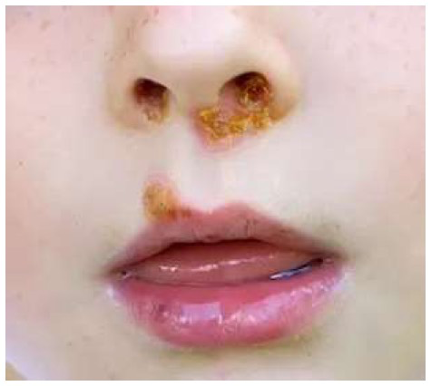
Slide 9 — Non-bullous impetigo in a 7-year-old. Honey-colored (golden-brown) dried exudate at bilateral nares, philtrum, and upper lip crossing the vermilion border. The crust forms when serous fluid from S. aureus or S. pyogenes skin invasion desiccates — its characteristic color and location crossing the lip border are the two most exam-tested visual descriptors.
"What does differential diagnosis mean? It's a list of diagnoses we're typically looking for 3 to 4 of them and if you're making me happy they're in order of most likely to least likely. So what diagnosis do you think is most likely for this child?" (line 23)
Clinical Presentation
T3 — Audio T1 + Slide 13 Yellow (TOP EXAM ITEM): "They love to ask about honey colored crusts, OK, or the cornflakes glued to the surface. If you remember the appearance, it looked flaky, think about little cornflakes on the face, OK?"
Prof said explicitly: "everything I have in yellow is great stuff for life but also for boards too. They love to ask about honey colored crusts, OK, or the cornflakes glued to the surface."
Characteristic honey-colored crusts on an erythematous base
Cornflakes glued to the surface
Broken skin + runny nose + warm and moist climate (risk triad)
Causative organisms: "This is caused by Staph aureus. Staph aureus is a skin bacteria. It loves staying on the skin. Um, and streptococci... it's the most common bacterial infection of the skin in 2 to 5 year olds." (line ~41)
Mnemonics
Think little cornflakes on the face — visual memory hook for honey-colored crusts
Entry formula: Broken skin + runny nose + warm and moist climate
Most common bacterial skin infection in 2–5 year olds
Management
Localized / topical: Mupirocin 2% ointment TID × 5 days
Mupirocin TID × 5 days for localized impetigo
Systemic:amoxicillin-clavulanic acid (Augmentin)
Drug to know: "The most common one on this list that you guys should know is Augmentin, right? Dentists use Augmentin all the time. That's amoxicillin, amoxicillin and clavulanic acid." (line ~41)
Kids less than 40 kg: Amoxicillin 25 mg/kg/day + 125 mg clavulanic acid in 2 divided doses
People more than 40 kg: Amoxicillin 500 mg + 125[INCOMPLETE — adult dose truncated at slide edge; verify in Neville textbook — likely 500 mg amoxicillin + 125 mg clavulanic acid BID]
Britney: "Kids dosing. I'm not a pediatric dentist. I don't have that memorized." — low-priority for this exam.
2. Syphilis — The Great Imitator
Slides 14–21 · Bacterial (spirochete) · VERY HIGH verbal coverage · VERY HIGH yield
Patient Case Vignette
"Do we need any more information about this patient? Are you ready to diagnose right now?" (line 119)
28-year-old, single painless ulcer on right lateral tongue × 2 weeks. Indurated, non-tender. Painless lymph node in neck ("lump"). Denies trauma. History of unprotected oral sex 3 weeks ago.
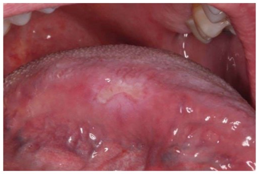
Slide 14 — Primary syphilitic chancre on the right lateral tongue. The ulcer is indurated (firm, rubbery border), non-tender, and has a clean base — these three features together distinguish it from a painful traumatic ulcer or a tender aphthous. Student annotation circle marks the lesion margins. A painless oral ulcer should place syphilis at the top of the differential until proven otherwise.
5-Step Framework Answers (Slide 16)
Describe: Right lateral tongue, mid: focal mucosal-colored to white-yellow ulcer with white borders, 1.0 × 0.3 cm, indurated and non-tender
Tests: Biopsy — incisional, including ulcer base and edge
"What is the diagnosis you're leading with?" (line 119)
"What tests are you gonna order? No test is also an option." (line 119)
"If I wanted to spend money and I wanted to get a medical test, what medical test would I get?" (line 119 — serology)
"What do you do if you're gonna do a biopsy on somebody that you think has squamous cell carcinoma?" (line 119 — biopsy technique)
Primary Syphilis (Chancre)
T3 — Audio T1 + Slide 18 Yellow (MEMORIZE): "What's the fancy word for primary syphilis? Shanker, you guys should memorize the word shanker. That's gonna come up on your exams."
Pronunciation: Chancre = "SHANK-er"
Prof explicit: "What's the fancy word for primary syphilis? Shanker, you guys should memorize the word shanker. That's gonna come up on your exams." (line ~119)
Heals on its own within 3–8 weeks (even without treatment)
T3 — Serology timing (stated TWICE in audio + yellow on 2 slides): "the problem with serology is that it can, the antibodies can be negative for the 1st 6 weeks, OK?"
antibodies can be negative for 6 weeks (slide 17)
Serology negative for up to 6 weeks (slide 18 — repeated)
Pathogen & Biopsy (Slide 17)
Causative organism: Treponema pallidum organisms — distribution pattern of spirochetes,
Detected by dark-field microscopy or direct fluorescent antibody staining from lesion fluid
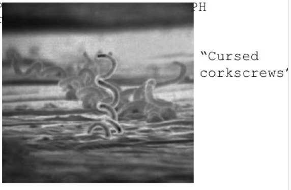
Slide 17 — Scanning electron micrograph of Treponema pallidum showing the characteristic tight corkscrew (helical) morphology with overlaid caption "Cursed corkscrews." This gram-negative spirochete cannot be cultured on standard media — diagnosis relies on serology or direct visualization. The "cursed corkscrews" mnemonic is Britney's hook for pathology reports.
"Cursed corkscrews" = visual hook for T. pallidum morphology on pathology report
Clinical correlation with serologic testing is recommended, and the patient should be referred for appropriate antimicrobial therapy and partner notification.
Biopsy technique: "What do you do if you're gonna do a biopsy on somebody that you think has squamous cell carcinoma?" — Incisional biopsy including ulcer base and edge (line ~119)
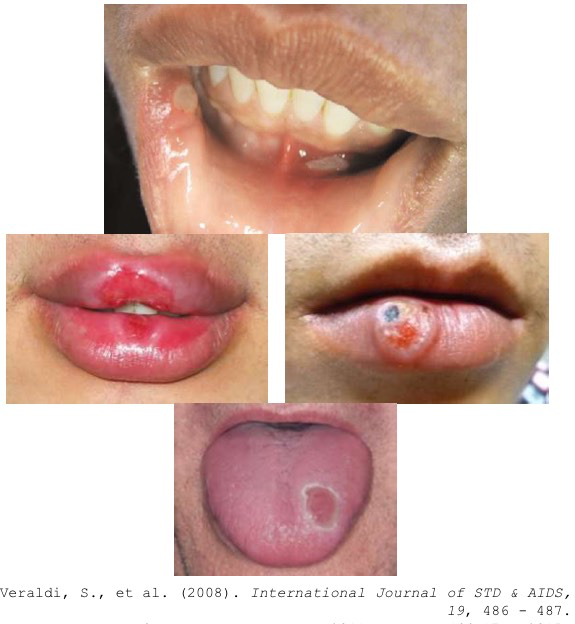
Slide 18 — Gallery of primary syphilitic chancres at four oral sites: oral commissure, lower lip, upper lip, and tongue dorsum (white oval lesion). Syphilis is "The Great Imitator" — it can appear at any mucosal site and mimic aphthous ulcers, SCC, or traumatic ulcers. The painless, indurated quality distinguishes it regardless of site. (Veraldi S. et al. 2008, International Journal of STD & AIDS, 29:486–487.)
Secondary Syphilis (4–10 weeks after chancre resolves)
T3 — Audio "love to quiz" + Slide 19 Triple Yellow: "Split papules, this is one of those ones that they love to quiz you on. Those are at the commissures of the mouth. Condyloma lauda is another one of those buzzwords you gotta know, OK?"
Split papules: commissure — at the corners of the mouth
Mucous patches: sensitive, — if it looks like a white elevated patch with a "gooey" component, that is a mucous patch; sign of secondary syphilis
Condyloma lata: look like papillomas
Mucous patches & condyloma lata: "Mucous patches. If it looks like a white elevated patch, like there's maybe some sort of goey component to it, that is a mucus patch. That's a sign of secondary syphilis, OK. Condyloma lauda is another one of those buzzwords you gotta know, OK?" (line ~131)
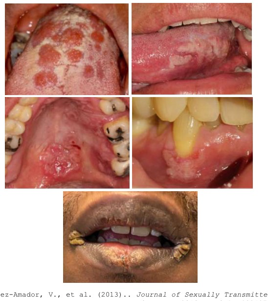
Slide 19 — Five oral manifestations of secondary syphilis (disseminated bacteremia phase). Panels show: serpentine mucous patches with white winding lines on dorsal tongue, split papules at oral commissures, condyloma lata on lip (papilloma-like masses), and hard-palate erythema with white patches. All five findings represent active spirochetemia — these lesions are highly infectious. (Ramirez-Amador V. et al. 2013, Journal of Sexually Transmitted Diseases.)
Tertiary Syphilis (Neurosyphilis)
T3 — "love to ask about" + Slide 20 Yellow on both terms: "Tertiary syphilis or neurosyphilis... The central nervous system sequelae includes tapesdalis. This is one of those sexy terms that they love to ask about."
"The term for granulomatous inflammation in tertiary syphilis is gamma, OK?... if you see a hole in the palate that on your differentials for that has to be tertiary syphilis, OK"
CNS: tabes dorsalis, — neurological degeneration of posterior spinal columns
Granulomatous inflammation: gumma — large ball of chronic inflammation; tissue-destructive (NOTE: "granulomatous inflammation" is a recurring term — appears again in TB DDx and CMV DDx. Britney said "we're gonna use this term a lot in this class.")
Palate or tongue (interstitial glossitis) — sub-bullet; NOT highlighted in source slide
Tabes dorsalis: "Tertiary syphilis or neurosyphilis... The central nervous system sequelae includes tapesdalis. This is one of those sexy terms that they love to ask about." (line ~131)
Gumma / palatal perforation: "The term for granulomatous inflammation in tertiary syphilis is gamma, OK? It's a big ball of inflammation... if you see a hole in the palate that on your differentials for that has to be tertiary syphilis, OK" (line ~131)
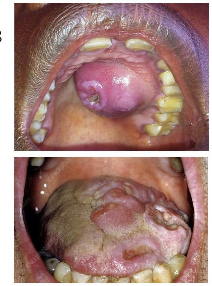
Slide 20 — Two oral presentations of tertiary syphilis. Top: Hard palate gumma — a large reddish-purple raised mass with surface ulceration representing granulomatous chronic inflammation that can ultimately perforate the palate. Bottom: Interstitial glossitis — lobulated, fissured, atrophic tongue surface caused by chronic treponeme-driven fibrous replacement of lingual musculature. Palatal perforation and interstitial glossitis together are pathognomonic of late-stage untreated syphilis.
Mandatory Reporting
Prof explicit: "You need to know what the mandatory reporting diseases are. I will ask you that." (line ~131)
T3 — "Please please please" strongest urgency framing in transcript: "Please, please, please, when you practice with each other, memorize the list of reportable, um, diseases, the ones you need to know, OK?" (line ~131 + slides 21 & 26)
Syphilis (all stages) is mandatorily reportable to Massachusetts DPH. Partners must be notified. Slide 21 is the MA DPH Syphilis Reporting Form (image not delivered — see MA DPH website for full form).
Treatment
Drug (stated twice): "When you think syphilis, you think intramuscular penicillin G." and "basically penicillin G is your go to with this, OK?... Syphilis, penicillin G, good?" (lines ~119 and ~131)
Rx: Intramuscular Penicillin G × 1 dose (primary/secondary); longer course for tertiary/neurosyphilis
Older adults = unexpected high-risk group for syphilis ("they're just having fun now and they don't care about protection anymore") — verbal alpha, no slide highlight
IgM = "the one you just met" (new/active infection). IgG = "the infection that's gone" (past exposure). IgM + IgG together = reactivation or post-vaccination challenge.
3. Tuberculosis (TB)
Slides 22–26 · Mycobacterial · HIGH verbal coverage · HIGH yield
Patient Case Vignette
54-year-old, large deep irregular ulcer on right lateral tongue ~2.0 cm, papillary borders, heavy edema. Chronic cough ≥2 months. Sick contacts. Immune suppression from methotrexate (MTX) for RA.
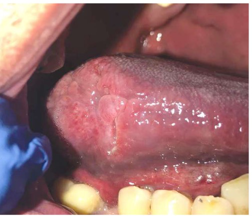
Slide 22 — Plain (un-annotated) view of a deep, irregular ulcer on the right lateral tongue of a 54-year-old on methotrexate. The ulcer has papillary (finger-like) borders, surrounding edema, and an erythematous base — features that distinguish it from the smooth-bordered, painless syphilitic chancre. Oral tuberculosis is rare and almost always secondary to active pulmonary disease. (Montoi E. & Pabla R. 2023, British Dental Journal.)
"What kind of TB test? Do you know any TB tests?" (line 136)
"Would you do excisional or incisional?" (line 136 — biopsy type for suspicious ulcer)
"What would you do for this patient? They're in pain right now. Assuming we're waiting for the test to come back." (line 136)
"If you're worried about TB, there needs to be some isolation protocols... Don't have them in open bays around other patients." (line 136)
"If the patient has secondary TB on the tongue, if you treat the TB in the body with the medicines, will the tongue lesion go away on its own?" [ANSWER: YES] (line 149)
5-Step Framework Answers (Slide 24)
Describe: Deep irregular ulcer, right lateral tongue
DDx: Secondary TB, deep fungal, SCC
Tests: NAAT (faster, ~24 hrs), PPD or QuantiFERON Gold
Plan: Medical urgency — isolation + DPH notification + ID referral; do NOT biopsy first
Lesion Reveal (Slide 24 — annotated)
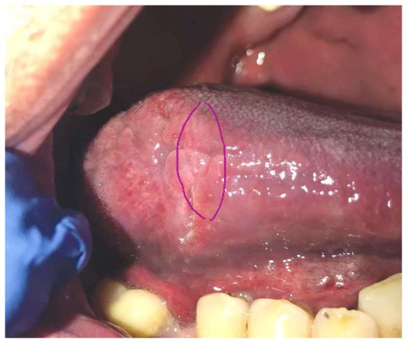
Slide 24 — Same right lateral tongue ulcer with a purple oval annotation marking the lesion margins. The circling highlights the irregular, papillary edge and deep excavation characteristic of secondary oral tuberculosis — features that would be queried as "describe the lesion" in a clinical exam question.
Oral TB Manifestation
Key facts (stated multiple times): "Secondary tuberculosis, um, oral tuberculosis is rare but it almost always happens on the tongue." and "It's usually secondary spread from the pulmonary disease that's your primary tuberculosis." and "It's a chronic painful irregular ulcer with constitutional symptoms, so weight loss, night sweats, and a cough." (line ~149)
Oral TB is rare (tongue >>>) usually secondary
Primary TB = NOT oral. Secondary TB = IS oral (almost always tongue)
IgM/IgG rule: "IgM is the one you just met, OK? New infection, M for met. IgM is met. IgG is the infection that's gone." IgM + IgG together = reactivation or post-vaccination challenge.
Management / Drug Regimen
HIGHEST EXAM PRIORITY IN ENTIRE LECTURE: "you need to know the drugs isoniazid and rifampin. They're gonna come up on every one of your exams. That's both in the 2 month therapy and in the 4 month therapy. The total of 6 months that these patients have to get therapy." (line ~149)
T3 — Strongest signal in lecture (audio T1 + slide 25 yellow): Drug regimen = isoniazid + rifampin appear in BOTH phases. Total = 6 months.
Phase 1 (8 weeks): Pyrazinamide + Isoniazid + Rifampin + Ethambutol
Phase 2 (16 weeks):16 weeks: isoniazid and rifampin
T3 — DOT (audio T4 + slide 25 yellow): "Directly observed therapy or DOT this means that a nurse is watching you while you're taking your pills..." Multiagent therapy or DOT)
DOT = Directly Observed Therapy (nurse watches patient take pills)
Perform biopsy only after workup (slide 25 italic — safety instruction; do not biopsy before TB ruled out)
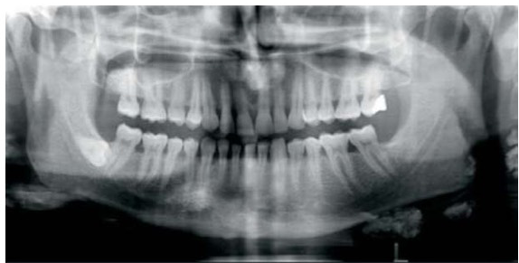
Slide 25 — Panoramic radiograph of an adult dentate patient showing bilateral radio-opaque round shadows below the angles of the mandible — calcified cervical lymph nodes. These develop as a sequela of primary TB when the immune system walls off the mycobacteria with calcium. Britney paired this image with the DOT and isoniazid/rifampin memorize-list: seeing calcified cervical nodes on a pano should prompt a TB history.
Miliary calcifications: "there is a potential finding for patients where they have calcified lymph nodes. Isn't that fascinating? There's calcification. There, there's these foci of calcification that can be in the lungs that looks like little grains. That's why it's called miliary tuberculosis. It's little grains. Those calcifications can also be in the lymph nodes, the cervical lymph nodes." (lines ~148–149)
Mandatory Reporting & Medical Urgency
Prof explicit (mandatory reporting — "please please please"): "this is reportable as well. Please, please, please, when you practice with each other, memorize the list of reportable, um, diseases, the ones you need to know, OK?" (line ~131)
T3 — Mandatory reporting (see also Syphilis section — both are DPH-reportable): TB = mandatorily reportable to MA DPH. "Please, please, please, when you practice with each other, memorize the list of reportable, um, diseases, the ones you need to know, OK?"
Medical urgency: "This is a medical urgency. We need isolation, public health notification, and we need our therapy from our medical doctors." (line ~149)
Infection control in dental office: "If you're worried about TB, there needs to be some isolation protocols, aerosol, uh, protocols for this patient... Don't have them in open bays around other patients. You and your staff need to have, uh, masks on too." (lines ~136–137)
"There's no topical therapy for this, otherwise I would be doing it, I promise you that." — TB topical therapy excluded from exam scope.
Cross-reference: Viscous lidocaine / magic mouthwash for pain while awaiting TB results — see HSV Management section for magic mouthwash recipe (lidocaine + diphenhydramine + Maalox).
4. Candidiasis (Oral Thrush)
Slides 27–34 · Fungal · VERY HIGH verbal coverage · VERY HIGH yield
Patient Case Vignette
42-year-old, yellow-brown coated tongue dorsum, erythematous palate/uvula/tonsillar pillars with white patches. Uses asthma inhaler without spacer or mouth rinsing.
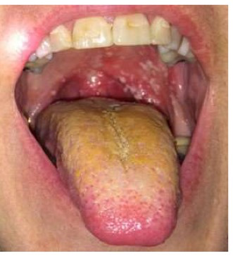
Slide 27 — Pseudomembranous candidiasis ("thrush") in a 42-year-old asthmatic using an inhaled corticosteroid without a spacer or post-use mouth rinse. The yellow-brown coated tongue dorsum represents confluent Candida pseudomembrane (which wipes off, leaving an erythematous base); the erythematous soft palate shows simultaneous erythematous-type involvement. The corticosteroid aerosol deposits locally and suppresses mucosal immunity, creating the ideal Candida growth niche.
5-Step Framework & DDx
"what are my differentials for this patient for these white plaques that can be wiped off?" (line ~214)
DDx for pseudomembranous ("white plaques that wipe off"): "What are my differentials for this patient for these white plaques that can be wiped off? Pseudomembranous candidiasis... I might think about maybe strep throat. I might think about herp angina. I might think about gonorrhea." (line ~214)
"Do they have an inhaler? Do they use the inhaler with a spacer? Do they wash their mouth out after using the inhaler?" (line ~214)
"Do they have any immune suppression? Do they have any immune compromise?" (line ~214)
"Anybody know the difference between immune suppression and immune compromise?" (line ~214)
"What is the term for clinical dryness that I can observe and measure?" [ANSWER: hyposalivation] (line ~214)
Prof explicit — xerostomia vs. hyposalivation: "you need to know the difference between hyposalivation and xerostomia. They are different conditions." (line ~214)
Xerostomia = subjective complaint of dry mouth. Hyposalivation = objective, measurable reduced salivary flow.
Clinical Types Table (Slide 32)
"You need to know this table. There are many different kinds of candidiasis."
"You are responsible for knowing these things."
T3 — Blanket "you are responsible" + 4 yellow row highlights on same table (line ~214 + slide 32):
Type
Key Features
Risk Factor / Notes
Pseudomembranous (Thrush)
Creamy-white plaques, removable; foul taste
Antibiotics, steroids, immunosuppression, inhaler without spacer/rinse
Denture over-closure, nutritional deficiency, immunosuppression; Rx Mycolog II
Denture Stomatitis (Chronic Atrophic)
Erythema under denture intaglio surface; patient keeps dentures in 24/7
Denture fomite — must soak/disinfect denture or it reinfects
Hyperplastic
Thick white adherent plaque — does NOT wipe off
Needs biopsy to rule out dysplasia/SCC
T3 — Kissing lesions (audio "almost almost always" + slide 32 yellow): "central papillary atrophy, median rhomboid glossitis, that's the central patch, that little spot on your tongue. I would encourage you, if you see that on the tongue, look at the roof of the mouth. It almost almost always self-inoculates on the roof of the mouth as well, so you have kissing lesions." (line ~214)
Risk factor → type mapping (memorize):
Inhaler use → pseudomembranous | Dry mouth → erythematous | Dentures not removed → denture stomatitis | Thick white adherent plaque → hyperplastic (needs biopsy)
"Spaghetti and meatballs" = microscopic appearance of Candida hyphae and spores
Reinserted denture without disinfection = fomite that reinfects; patient education must include denture removal and soaking
Commissures spelling: 2 M's, 2 S's
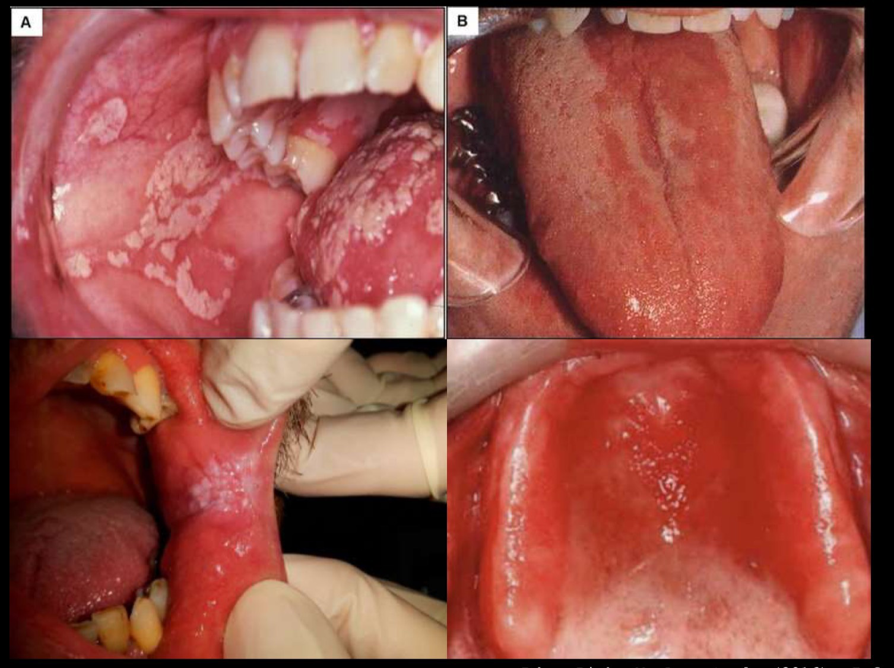
Slide 33 — Four-panel gallery of oral candidiasis clinical types: (A) bilateral buccal pseudomembranous candidiasis with white plaques on erythematous base; (B) erythematous atrophic dorsal tongue with papillary loss; (C) severe buccal mucosa thrush with thick confluent white coating; (D) erythematous palate showing central papillary atrophy (median rhomboid glossitis) pattern — the central depapillation mirror-image corresponds to the "kissing lesion" on the opposing tongue.
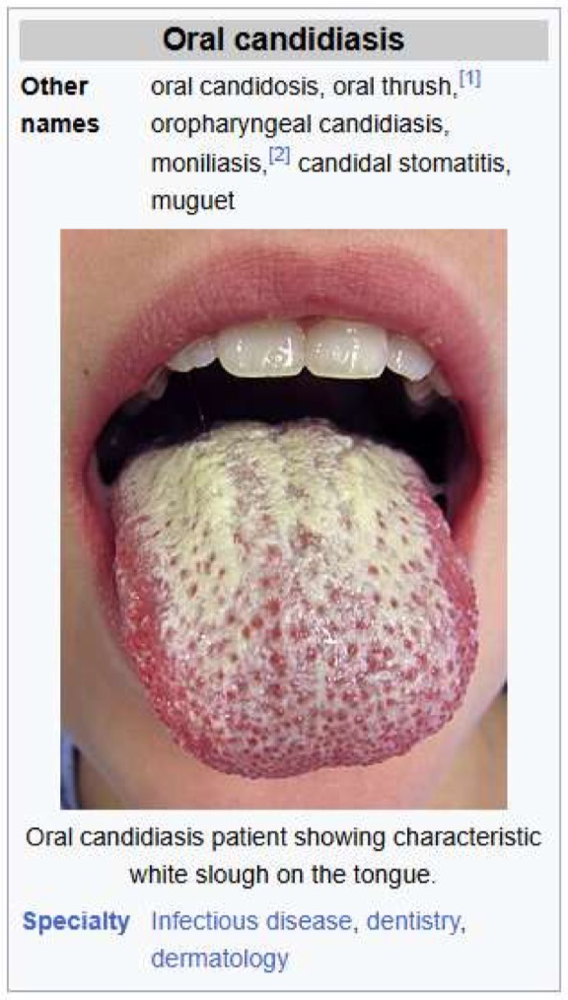
Slide 34 — Wikipedia "Oral candidiasis" article infobox (synonyms: oral candidosis, oral thrush, oropharyngeal candidiasis, moniliasis, candidal stomatitis, muguet). Britney included this slide as a reading-level overview — T5 de-emphasized content, not tested.
Management (Slide 30) — Highest Lecture-Time Investment of Any Disease
Full management block (entire section received more lecture time than any other disease): Britney covered clotrimazole troches, nystatin solution, miconazole gel, fluconazole — dosing, duration, technique, contact time, patient education, denture soaking.
Drug names exam-tested every year: "The medicines that we use for uh this condition you've gotta know they ask us on the exams every single year." (line ~214) — clotrimazole, nystatin, miconazole, fluconazole.
Trigger correction first:Rinse mouth after inhaler use, use spacer
First-line topical:Rx clotrimazole (Mycelex) — troche dissolves in mouth over 20–30 min (contact time essential); High sugar content*** — contraindicated in diabetics
Alternative topical:Alt: Miconazole — 2% gel to denture intaglio surface
Systemic option:Fluconazole — for refractory/recurrent/severe; CHECK LIVER; "rare cases of hepatotoxicity"
Nystatin solution — rinse and swallow; preferred for diabetics
Mycolog II (nystatin + triamcinolone) — for angular cheilitis
T3 — Clotrimazole in diabetics (audio T1 tripled + slide 30 red text — STRONGEST multi-repeat T1): "I will say this again I will probably ask it on an exam this is not the appropriate medicine for diabetics one more time it's probably gonna be on your exams. Clotrimazole is probably not the appropriate medicine for diabetics."
Clotrimazole in diabetics (stated 3 times consecutively): Same quote as above — triple repeat. This is the single highest-repetition T1 in the candidiasis section. (line ~214)
Nystatin preferred for diabetics (no high sugar); clotrimazole has high sugar — avoid in diabetics
Angular cheilitis — "bread and butter dentistry": "You need to know this. This is bread and butter dentistry. Dent general dentists should be comfortable with this. The board's expect it." (line ~214)
Rx: Mycolog II = nystatin + triamcinolone acetonide
"If they fail this treatment, don't worry, there's plenty of others. These are the only ones I'm gonna hold you to know." — Only clotrimazole, nystatin, miconazole, fluconazole are exam-tested. Second-line antifungals de-emphasized.
"that's beyond the subject of this course" — bleach solution for denture soaking de-emphasized.
"Calbicans, but I'm not gonna ask you about that." — Candida species beyond C. albicans de-emphasized.
5. Herpes Simplex Virus (HSV) — Human Herpesvirus
Slides 35–42 · Viral · HIGH verbal coverage · HIGH yield
Patient Case Vignette
34-year-old female, right alar rim focal cluster of pinhead vesicles, erythematous base.
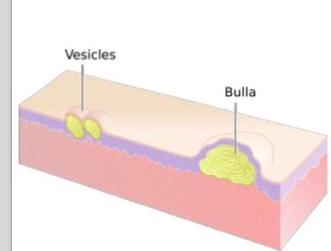
Slide 38 — Anatomical teaching schematic comparing vesicles (small, clustered, superficial epidermal blisters — left panel) and bulla (single large blister extending deeper into the dermis — right panel). The distinction is clinically important: HSV classically produces pinhead-sized coalescing vesicles, not bullae. Pink skin layers and purple basement membrane are labeled. This primer prepares the eye for the clinical photo below.
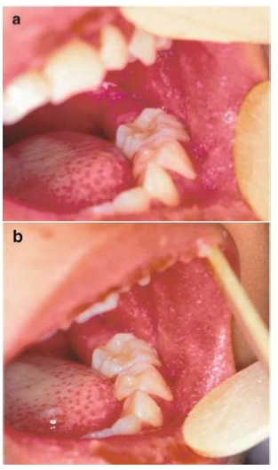
Slide 38 — Clinical photo (panels a and b) of right alar rim with a focal 0.8 × 0.3 cm cluster of pinpoint vesicles on an erythematous base in a 34-year-old. The vesicles are coalescing along the nasal alar crease following the V2 cutaneous distribution. This is the canonical "describe the lesions" image used in the case presentation — Britney asked the class to characterize both morphology and location before revealing the diagnosis.
HHV 1–8 Taxonomy (Slide 35)
Prof explicit (softer signal): "I could ask you this, but you should know it for yourself." (line ~214)
Mnemonic system: "I'm gonna help you try to remember your human herpes viruses. There's 8 numbers, right? My brain thinks of them in certain ways." (line ~214)
Full HHV 1–8 Mnemonic System (Britney's):
HHV1 = HSV-1 (above the belt) | HHV2 = HSV-2 ("number 2" = below the belt) HHV3 = Varicella-Zoster Virus (VZV): 'Draw a Z with three strokes' HHV4 = Epstein-Barr Virus (EBV): 'Barr has four letters' HHV5 = Cytomegalovirus (CMV): 'Cyto makes me think of cinco' HHV6 & HHV7 = Roseola (6th disease — "You don't really need to know much about it.")
HHV8 = Kaposi's sarcoma + lymphoma + Castleman disease — "Think HIV when you think HHV-8, CD4, CD8, HHV8" (verbal alpha — may not appear on slides)
V1 vs. V2 Distinction (Slides 37–39)
Prof explicit: "you need to remember the difference between V1 and V2." (line ~214)
V1 ophthalmic urgency: "The medical urgency question is how is your vision? Is there anything on your eye? Because this goes up the ophthal uh ophthalamic branch, OK, V1, this can be serious for your vision." (line ~214)
"The medical urgency question is how is your vision? Is there anything on your eye?" (line ~214)
V1 (ophthalmic): Risk of herpes zoster ophthalmicus (HZO) — can be blinding; refer to ophthalmology urgently if eye involved
V2 (maxillary): Palatal involvement; less immediately sight-threatening
Hutchinson's sign vs. optic keratitis: "this is known as Hutchinson's sign, and it's can be blinding... In herpes it's not Hutchinson's sign though, OK? In herpes it doesn't have that major blow up. It's optic keratitis is the worst that can happen." (line ~214 — VZV vs. HSV V1 distinction)
Hutchinson's sign (nasal tip vesicle) = VZV, potentially blinding. Optic keratitis = HSV, less severe. Same V1 territory, different severity.
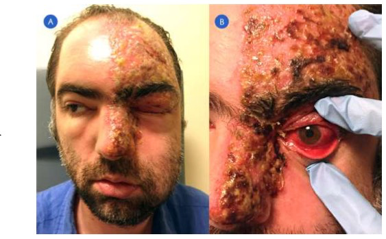
Slide 39 — Herpes Zoster Ophthalmicus (HZO). Panel A: Adult male with extensive crusted varicella-zoster eruption along the entire V1 (ophthalmic) trigeminal distribution — forehead, nose tip, nasal ala, cheek — classic dermatomal pattern halting at the midline. Panel B: Close-up of the same patient's eye showing severe conjunctival injection and eyelid involvement. Nasociliary branch involvement (nasal tip = Hutchinson's sign) predicts corneal spread; prompt antiviral therapy and ophthalmology referral are required.
Primary HSV (Slide 40)
T3 — "important" stated TWICE + 2 yellow highlights (line ~214 + slide 40): "pinhead is important for HSV pinhead. OK, it's the size of the head of the pin with, uh, vesicles with erythematous base. They're coalescing, coalescing. That's important for HSV."
Pinhead vesicles — on erythematous base
Collapse and coalesce — vesicles rupture and merge into larger ulcers
T3 — ALL-CAPS in slide + audio dwelling (line ~214 + slide 40 yellow): "You have high transmissibility when the vesicles rupture. When the vesicles rupture is when you can move it around other spots and that's when you don't wanna be doing dentistry on them."
HIGHLY transmissible when vesicles rupture—avoid manipulation until scabbed
Prodrome timing: "The prodrome phase is important for you to know as a dentist because it is right before you're gonna have your vesicles, so you're gonna have itching, tingling, warmth, and erythema for 6 to 24 hours, and then you're gonna have vesicles within 2 days." (line ~214)
Antiviral window: "48 hours is important about, uh, is it time to initiate therapy? Are we in that window or is it beyond that window?" (line ~214)
"48 hours is important about, uh, is it time to initiate therapy? Are we in that window or is it beyond that window?" (line ~214)
Slide 41 — Six-panel gallery (3×2) of primary herpetic gingivostomatitis in pediatric patients: clockwise from top-left: perioral HSV crusting similar in appearance to impetigo (but vesicular origin), multiple discrete palatal ulcers, severe generalized erythematous and ulcerated gingiva with hemorrhage, and additional presentations across the severity spectrum. Primary HSV gingivostomatitis is the most common cause of severe acute gingival ulceration in children under 5 years — its bilateral, painful, febrile presentation distinguishes it from isolated aphthous ulcers.
Secondary (Recurrent) HSV (Slide 40)
Recurs in the same nerve/dermatome as original inoculation
Recurrence site: Keratinized tissue (vermilion border, hard palate, attached gingiva)
Adults: pharyngotonsillitis, rarely Bell Palsy (facial nerve), vestibular neuritis
HSV recurs in the same nerve/dermatome as initial inoculation
Adult first-exposure HSV often presents as pharyngotonsillitis — frequently missed
Management (Slide 42)
Drug contraindications in children: "in children you cannot. OK, uh, we'll talk about that in a second... children, avoid lidocaine because it can cause seizures. Benzocaine avoid because it can cause methemoglobinemia." (line ~214)
Acyclovir or valacyclovir — initiate within 48-hour window
Children — avoid: Lidocaine (seizures), benzocaine (methemoglobinemia)
Cross-reference: Magic mouthwash also used for TB tongue pain while awaiting diagnosis — see TB section above.
6. Cytomegalovirus (CMV) — HHV5
Slides 43–48 · Viral · MEDIUM verbal coverage · MEDIUM yield
Patient Case Vignette
36-year-old female, HIV+, not on ART. Multiple large necrotic ulcerations: maxillary tuberosity (A), lateral tongue (B), upper lip mucosa (C), lower lip vestibule (D). GI pain, weight loss, fevers.
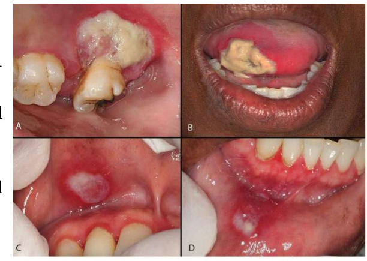
Slide 43 — Four-site oral CMV ulceration in a 36-year-old HIV-positive female not on antiretroviral therapy. (A) Large necrotic ulcer at maxillary tuberosity/posterior upper alveolus — note the fibrinous debris and deep excavation. (B) Large necrotic ulcer at right lateral tongue tip. (C) Focal ulcer on right upper lip mucosa adjacent to gingiva. (D) Multiple small ulcers on lower lip vestibule. The word "necrotic" was formally introduced by Britney at this case — she defined it: "deep and there's a lot of debris... dead tissue." The multi-site pattern in an immunocompromised patient is the CMV signature.
"Necrotic" vocabulary introduction (word used 5 times): "necrotic ulcer. We have not used the term necrotic. Yet, right? necrotic means it looks like it's deep and there's a lot of debris. It's a lot of dead tissue on there, dead tissue, maybe some bacteria... necrotic, deep ulcer." (line ~214)
"Do we know your CD4 count? Do we know your viral load? Do we know your platelets? Do we know your neutrophils?" (line ~214 — CMV workup)
"tests that I wanna do for this patient, frankly, I would do biopsy for this" (line ~214)
"why the weight loss? Ask why because sometimes there's no good reason for it" (line ~214)
CMV differential reasoning: "On my differential is TB, CMV, deep fungal, granulomatous diseases... Anybody agree with me on CMV CMV, because of the GI, it's a little bit helpful with that." (line ~214 — GI pain + HIV helps favor CMV)
CMV + EBV in immunocompromised ("all the time" doubled): "I will be looking for C. CMV happens in immune suppressed patients all the time, or immune compromised patients as well all the time. EBV I would be looking for as well, Epstein-Barr virus." (line ~214)
CMV signature pattern: HIV+ + not on ART + GI pain + oral ulcers + weight loss + fevers
Biopsy site preference: tongue + upper lip preferred; hard palate = technically difficult
Geographic exclusion for deep fungals: No farming/bat caves/Western US = coccidioidomycosis unlikely. No Ohio River Valley = histoplasma unlikely.
Management (Slide 47)
Drug — audio T1 (valganciclovir dose verbally stated): "The HIV doctor will give them Val Valgancyclovir 900 mg. I'm not gonna give them that." (line ~214)
Dentist role = referral to Infectious Disease. Do NOT prescribe valganciclovir yourself.
Slide-Only Highlights (Slide 48)
⚠️ The following facts are from slide 48 only — NOT verbally covered by Britney in depth. Include for exam completeness.
Most common cause of nonhereditary sensorineural hearing loss (slide 48 yellow — slide-only)
Biopsy: 'Owl eye' nucleus (slide 48 yellow — CMV-infected cells show large intranuclear inclusion surrounded by clear halo = "owl eye" on H&E — slide-only)
⚠️ Not verbally lectured by Britney — slide formatting is the sole emphasis source. All content below comes from slide formatting only (yellow highlights and bold text on slides 49–53).
Patient Case Vignette
6-year-old, Koplik spots on buccal mucosa (slides 49–51).
Pathognomonic Finding
Koplik spots — "Pathognomonic bluish-white plaques on buccal mucosa (70% of patients)" — Appear 1–2 days BEFORE rash — key early diagnostic sign. (slide 52 yellow + bold — dual emphasis)
Clinical Progression
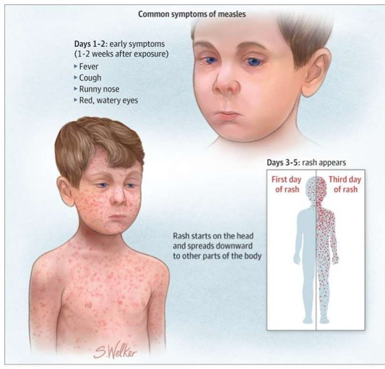
Slide 52 — Patient education infographic illustrating measles progression (S. Welker illustration, JAMA 2024, 331[11]:901–902). Days 1–2 (early prodrome, 1–2 weeks post-exposure): fever, cough, runny nose, red watery eyes (the "3 C's" — cough, coryza, conjunctivitis). Days 3–5: the characteristic morbilliform rash begins on the face and spreads cephalocaudally to the trunk and extremities. The prodromal phase with Koplik spots is the only window for early clinical diagnosis before the rash appears.
The 3 C's (prodrome): Cough, Coryza (profuse rhinorrhea), Conjunctivitis
Patient infectious 4 days before to 4 days after rash onset
⚠️ Not verbally lectured by Britney — slide formatting is the sole emphasis source. All content below comes from slide formatting only (bold text on slide 58).
Patient Case Vignette
20-year-old college student, bilateral parotid swelling — "chipmunk cheeks."
Slide 54–55 — Before/after comparison of a young adult male: left panel shows normal facial proportions; right panel shows the same patient with bilateral parotid gland enlargement producing the pathognomonic "chipmunk cheek" appearance. Parotitis from paramyxovirus infection causes diffuse glandular swelling rather than a discrete nodular mass — this bilateral, symmetric presentation is the canonical clinical clue. Note: 10–30% of patients with mumps have NO parotid swelling, making diagnosis rely on viral testing in those cases. (BBC Health News; bbc.com/news/health-51493496)
Clinical Pearls (Slide 58 — all bold)
CLINICAL TRAP: "Parotitis is classic BUT 10–30% have NO parotid swelling"
"Mumps is a systemic infection" — not limited to parotid glands
Complications:
"Postpubertal males: Orchitis (3–10%)"
Aseptic meningitis, pancreatitis, oophoritis
Contagious period: 1–2 days before symptoms to 14 days after clinical resolution
Vaccination & Diagnosis
"Two-dose MMR = 88% effective, but immunity wanes over time"
"Gold standard" = RT-PCR from buccal/oral swab
9. EBV Mucocutaneous Ulcer (EBV MCU)
Slides 59–63 · Viral (EBV = HHV4) · NO verbal lecture coverage · SLIDE-ONLY · VERY HIGH slide density
⚠️ Not verbally lectured by Britney. EBV appears ONCE in audio (CMV section, line ~214) as a passing differential mention only — NOT coverage of this slide set. All content below comes from slide formatting only (slide 63 is the most formatting-dense slide in the entire lecture — 24 findings).
Patient Case Vignette
46-year-old, post-renal transplant, right buccal vestibule/gingiva at molars #18–20. Necrotic ulcer 2.0 × 2.0 cm with erythematous halo.
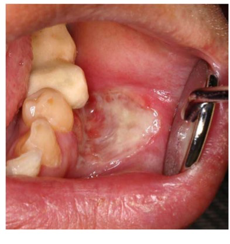
Slide 59 — Right buccal vestibule/gingival EBV mucocutaneous ulcer (EBV MCU) in a 46-year-old post-renal-transplant patient on immunosuppressive therapy (cheek retractor visible). The ulcer is 2 × 2 cm with a fibrinous, white-yellow base, mild erythematous halo, and sharply circumscribed margins adjacent to molars #18–20. EBV MCU is an EBV-driven, immunosuppression-associated ulcer that mimics malignancy histologically but has an excellent prognosis and may regress spontaneously when immunosuppression is reduced. (Ikeda T. et al. 2020, Modern Pathology, 33:2437–2448.)
Key Clinical Features (Slide 63 — highest-density slide in lecture)
Morphology:Appears as sharply circumscribed, shallow ulcer
Most common site: "Most common site: Oropharynx (62%)"
Read This First — Vocabulary, Concepts & Orientation
❓
Warm-Up MCQ Tier 1
Prof's opening question — sets the diagnostic framing for the whole lecture
A 36-year-old patient presents with multiple painful oral ulcers that have persisted for 3 weeks and worsened despite a full course of acyclovir. She reports low-grade fevers, fatigue, and an unintentional 10-lb weight loss. Intraoral exam reveals several large, deep, necrotic ulcerations involving the palate, tongue, and labial mucosa. Which of the following additional findings would MOST strongly suggest that an underlying systemic immunodeficiency is contributing to this presentation?
A. Prior history of recurrent aphthous stomatitis
B. Detection of HSV-1 IgG on serologic testing
C. Multifocal involvement of both keratinized and non-keratinized mucosa
D. Partial symptomatic improvement with topical corticosteroids
E. Markedly reduced CD4 T-lymphocyte count
Answer: E. A markedly reduced CD4 count directly confirms systemic immunodeficiency. The scenario — refractory ulcers not responding to antivirals, weight loss, fevers — screams "look beyond the mouth." Choices A–D are all compatible with RAS or incidental findings. Only a depleted CD4 count (as in HIV/AIDS or advanced immunosuppression) makes immunodeficiency the actual explanation for the severity and failure to respond to acyclovir.
⚠
Condition Triage
Prof's priority map for the whole lecture — know these tiers cold
Not all conditions in this lecture carry equal exam weight. The prof opened with a three-tier priority list. Tier 1 = must know for general practice AND boards. Tier 2 = recognize and refer. Tier 3 = awareness only — if it shows up on an exam, the question will give you enough context.
Tier 1 Essential — General Practice & Boards
Recurrent Aphthous Stomatitis — most common ulcerative condition, 39–50% lifetime prevalence
Lichen Planus — affects up to 2% of population
Erythema Migrans / Geographic Tongue — up to 3% prevalence
Drug-Related Gingival Hyperplasia — critical for medication history-taking
Allergic Contact Stomatitis — common with dental materials
Transient Lingual Papillitis
Tier 2 Important — Recognition & Referral
Pemphigus Vulgaris — often presents orally first
Mucous Membrane Pemphigoid
Erythema Multiforme / Stevens-Johnson Syndrome
Lichenoid Contact Reaction — from dental materials
Every immune-mediated disease in this lecture maps to one of these mechanisms. Learn the type first, then the disease makes sense.
The immune system can malfunction in four distinct ways (Coombs & Gell classification). This lecture focuses almost exclusively on Types I and IV, with Types II and III appearing in the vesiculobullous and autoimmune sections. Think of the type number as a shorthand for who is doing the attacking and how fast it happens.
OLP, contact stomatitis, drug rashes, lichenoid reactions
Pseudoallergic Non-immune
Non-immune mast cell activation — no sensitization required
Variable
Bisulfites in local anesthetics (preservatives)
Pseudoallergic LA reactions
Key exam fact: Local anesthetic reactions are rarely truly allergic (<1%). Most reactions to LAs are vasovagal or pseudoallergic (bisulfite preservatives). True IgE-mediated allergy to amide LAs is extremely rare — always clarify the history before labeling a patient "LA allergic."
Before We Start
How Oral Medicine Specialists Diagnose These Conditions
Biopsy → H&E histopathology → DIF → serology. Know what each step shows and WHY.
When you see a mysterious blister or erosion in the mouth, you can't just look at it and know the diagnosis. You need tissue. The gold-standard workup runs four parallel tests from two separate biopsy specimens taken from different sites.
Biopsy Site Selection
Take two specimens: (1) lesional tissue for H&E — take from the edge of active ulcer/blister; (2) perilesional tissue for DIF — take from normal-appearing mucosa adjacent to the lesion.
H&E Histopathology (formalin)
Submit lesional tissue in 10% formalin. Shows the tissue architecture: where the split is (intraepithelial vs subepithelial), acantholysis (cells falling apart), inflammatory infiltrate type, basement membrane integrity.
Direct Immunofluorescence — DIF (Michel solution)
Submit perilesional tissue in Michel solution (NOT formalin — formalin destroys the antibodies). DIF uses fluorescent-tagged antibodies (anti-IgG, anti-IgA, anti-C3) to light up wherever the patient's own antibodies have deposited. Under the microscope: PV shows a "chicken wire" pattern (intercellular, intraepithelial); MMP shows a linear band at the basement membrane zone. If it glows, it's autoimmune; where it glows tells you which disease.
Serology / ELISA
Blood test for circulating autoantibodies. Confirms and quantifies: anti-DSG3 (PV oral-dominant), anti-DSG1 (PV skin-dominant), anti-laminin 332 (MMP — 25% risk of adenocarcinoma), anti-plakin (PAMS).
Indirect Immunofluorescence — IIF
Patient's serum applied to a substrate (e.g., monkey esophagus). Detects circulating antibodies rather than tissue-deposited ones. Used when DIF result is ambiguous or to monitor disease activity.
Transport medium is CRITICAL: Perilesional biopsy for DIF must go into Michel solution, NOT formalin. Formalin degrades the immunoglobulins and the DIF will be unreadable. This is a classic exam trap.
"Perilesional tissue for H&E (in 10% formalin) + DIF (submit in Michel solution)"
Before We Start
Nikolsky Sign — What It Is and What It Means
One physical exam maneuver that tells you whether the split is above or below the basement membrane.
The Nikolsky sign is a bedside test: apply gentle lateral pressure to intact-looking skin or mucosa with a finger. If the epidermis shears off and a raw erosion appears, the test is positive. This means the cells that are supposed to hold the epithelium together are malfunctioning — the split is within the epithelium (intraepithelial). If the skin stays intact despite firm rubbing, the split is beneath the epithelium (subepithelial) and Nikolsky is negative.
Analogy: In PV, the bricks of the wall still look fine but the mortar is already dissolving everywhere — one push and the bricks slide apart. In MMP, the bricks are perfectly mortared together — the problem is that the foundation under the entire wall is failing, but the wall itself won't slide when you push it.
Nikolsky Result
Split Level
Mechanism
Diseases
POSITIVE
Intraepithelial cells fall apart
Antibodies disrupt desmosomes (cell-to-cell glue)
Pemphigus Vulgaris, SJS/TEN
NEGATIVE
Subepithelial whole sheet lifts off
Antibodies attack basement membrane zone (BMZ)
MMP, Bullous Pemphigoid
MNEMONIC
"PemphigoiD lives DEEP like Hades in the underworld" — the D in pemphigoiD reminds you the split is DEEP (subepithelial), below the basement membrane. Nikolsky NEGATIVE. Contrast with pemphigus (no D): the split is inside the epithelium, Nikolsky POSITIVE.
📚
Lay-Language Glossary
Plain-English definitions for recurring jargon — look these up before you get confused mid-lecture
AcantholysisEpithelial cells lose their "glue" (desmosomes) and fall apart from each other. Seen in PV. Tzanck cells are the result — rounded-up, detached keratinocytes.
Tzanck CellA rounded, ballooned keratinocyte that's been separated from its neighbors by acantholysis. Found floating in the base of a PV blister on a Tzanck smear.
Nikolsky SignLateral rubbing of intact mucosa → new erosion = POSITIVE (intraepithelial split, PV/SJS). No change = NEGATIVE (subepithelial, MMP).
Target LesionThree concentric rings: dark center (necrosis/blister) + pale middle ring + red outer ring. Pathognomonic for Erythema Multiforme.
Wickham StriaeFine white lacy lines on the buccal mucosa in Oral Lichen Planus. Bilateral, posterior. Pathognomonic for OLP.
Lichenoid ReactionAn OLP look-alike caused by a contact allergen (dental material) or systemic drug. Key difference: often unilateral, adjacent to restoration. Not true autoimmune.
VesicleSmall blister (<1 cm) filled with clear fluid. Roof intact. Fragile in the mouth — usually ruptures quickly to become an erosion.
BullaLarge blister (>1 cm). Same fluid-filled pocket but bigger. In PV these are flaccid and floppy; in MMP they are tense.
ErosionSuperficial loss of epithelium — the blister roof has broken and peeled back, leaving a raw red surface. Does NOT go through the basement membrane. Heals without scarring.
UlcerDeeper loss of tissue through the epithelium into the connective tissue. Visible yellow-white fibropurulent center surrounded by erythematous halo (as in RAS). May scar if deep enough.
Desquamative GingivitisA clinical pattern — not a diagnosis. The gingiva looks raw, red, and peeling. Most common causes: MMP, OLP, PV. Requires biopsy to differentiate.
Subepithelial vs IntraepithelialWHERE the blister forms. Intraepithelial = inside the epithelial layer (PV — desmoglein destroyed). Subepithelial = whole epithelial sheet lifts off the basement membrane (MMP, BP).
🔎
If You See X → Think Y
Visual pattern-matching table — find the lesion, get the differential instantly
What You See
Where
Think First
Key Differentiator
Painful round ulcer with yellow-white center + erythematous halo
Intractable stomatitis + polymorphous skin lesions + known or suspected malignancy
Oral (nearly 100%), skin, eyes, respiratory
PAMS
Always cancer-associated; oral lesions first 45%; mortality 60–90%
Firm, lobular gingival overgrowth; worst in interdental papillae
Gingiva
Drug-Induced Gingival Hyperplasia
Ask about phenytoin, cyclosporine, nifedipine/amlodipine
💊
Corticosteroid Potency Ladder Tier 1
Prof cyan-highlighted three agents — these are the ones you prescribe
Topical corticosteroids are the workhorse treatment across almost every condition in this lecture (RAS, OLP, MMP, PV supportive). The potency group determines how strong the anti-inflammatory effect is. Group 1 is the most potent. The three prof-flagged agents span the useful clinical range for oral mucosal disease.
GROUP 1 — Super-HighClobetasol propionate 0.05%
GROUP 2 — HighFluocinonide 0.05%
GROUP 4 — MediumTriamcinolone 0.1% paste QID
Prof-highlighted agents (cyan): Clobetasol propionate (Group 1, super-high potency) · Fluocinonide (Group 2, high potency) · Dexamethasone elixir 0.5 mg/5 mL (not classified in standard groups — unique systemic-mimic delivery via soak-and-spit).
DENTAL RELEVANCE
For mild RAS: first-line is triamcinolone acetonide dental paste 0.1% QID (OTC, bioadhesive). For erosive OLP or moderate aphthosis: step up to fluocinonide 0.05% gel under gauze. For severe/refractory: clobetasol 0.05% gel. Always monitor for iatrogenic candidiasis with prolonged steroid use.
📋
How to Use This Study Guide
Badge/icon system explained — so you know what to prioritize
⭐ HIGH YIELDGreen star box = prof's verbatim red-box callout from the slides. These exact phrases are likely exam questions. Do not paraphrase when studying.
💡 EXPLAINGold lightbulb box = plain-English translation of jargon. For comprehension, not memorization. Flagged "EXPLAINER: general" — may use background medical knowledge to translate lecture jargon.
⚠ CALLOUT DANGERRed border box = pathognomonic anchor or critical "do not miss" clinical pearl. One fact that changes the whole diagnosis.
🔴 TEAL NOTETeal box = dental relevance. Why a dentist specifically needs to know this. Often contains "refer to…" instructions.
Tier 1Red badge = essential for general practice and boards. Must know.
Tier 2Gold badge = recognize and refer. Know the presentation, know to escalate.
Tier 3Green badge = awareness level. The disease exists; know its name and that it exists.
Board FavoriteGold chip = the prof literally typed "Board Favorite" on the slide. Two in this lecture: SJS/TEN drug list (Slide 49) and PAMS malignancy associations (Slide 53).
drug nameTeal monospace chip = a drug the prof highlighted, usually cyan in the original table. Prioritize memorizing these over the un-highlighted drugs in the same table.
LAB/DIF RESULTPurple monospace chip = a diagnostic finding (lab value, DIF pattern, histopathology term). Likely to appear in a vignette as the key clue.
Tier 1 — Essential for General Practice & Boards (High Priority)
😵
Recurrent Aphthous Stomatitis (RAS) Tier 1
The most common oral ulcerative condition — painful, recurrent, nonkeratinized mucosa only
20%General population affected (range 5–66%)
80%First ulcer before age 30
40%Positive family history
90%Risk if both parents affected
RAS is your body's immune system attacking the lining of your own mouth — specifically the nonkeratinized mucosa (the soft, unattached parts: inner lip, cheeks, floor of mouth, soft palate, ventral tongue). It punches a hole, the hole heals, then it does it again. The cause isn't one thing — it's "different things in different people": genetics, stress, nutritional gaps, or an underlying systemic condition kicking things off.
Three clinical variants (memorize the numbers):
Minor Aphthae (80%): 3–10 mm, heals 7–14 days, no scarring. Location: nonkeratinized mucosa (labial/buccal mucosa, ventral tongue, soft palate). Appearance: yellow-white fibrinopurulent membrane with erythematous halo.
Major Aphthae (10–15%): 1–3 cm, duration 2–6 weeks, may cause scarring. Location: labial mucosa, soft palate, tonsillar fauces. Onset after puberty; can persist 20+ years.
Herpetiform Aphthae (5–10%): 1–3 mm, up to 100 ulcers, 7–10 days, coalesce into larger irregular ulcerations. Female predominance, adult onset. NOT caused by HSV (name is misleading).
Why "herpetiform" is NOT herpes: The name refers purely to the morphologic pattern of clustered small ulcers, not to HSV etiology. There is no virus involved — no viral replication, no viral DNA to detect, and antivirals have no effect. Herpetiform RAS affects nonkeratinized mucosa (HSV affects keratinized); forms no vesicles (HSV always starts as vesicles); and causes no fever.
Analogy: Calling herpetiform aphthae "herpes" because they look similar is like calling a Persian cat a "dog" because they both have fur and live in houses. The superficial pattern is similar; the biology is entirely different.
Clinical Features
Location: nonkeratinized mucosa only — this is the single most important distinguishing feature from HSV
Yellow-white fibrinopurulent membrane at base
Bright erythematous (red) halo around each ulcer
No prodromal vesicles (unlike herpes)
No fever (unlike primary herpetic gingivostomatitis)
📷
Clinical image — Slides 8–9
Minor aphthae: round ulcers with yellow-white pseudomembrane and sharp erythematous halo on labial mucosa and ventral tongue. Slide 10 shows multiple large major aphthae coalescing on soft palate / tonsillar area.
Source: PDF Slides 8, 9, 10
Pathophysiology
T cell-mediated immune reaction against nonkeratinized oral mucosa
Cytotoxic T cells (CD8+) target surface epithelium for destruction
Elevated inflammatory cytokines
Decreased anti-inflammatory IL-10
Genetic polymorphisms increase susceptibility
Nutritional Deficiencies: Vitamin B12, Folic acid, Iron/Ferritin, Vitamin D, Zinc — screen and supplement only as needed.
Usually one episode (primary); recurrences on lip/vermilion
Lymphadenopathy common
Treatment Ladder
Lifestyle / Triggering Factors
SLS-free toothpaste (e.g., Cleure, Dr. Bob). Avoid identified food triggers. Nutritional supplementation only if deficient.
Mild Disease (Simple Aphthosis) — Topical Corticosteroids First Line
Triamcinolone dental paste 0.1% up to QID ***Fluocinonide 0.05% gel (Lidex) under gauze 20 min up to 5×/dayDexamethasone solution 0.5 mg/5 mL for 5 min, expectorate, up to QID
Laser therapy: 32.2% reduction in symptoms vs. placebo.
Clobetasol 0.05% gel (drug insert)Intralesional triamcinolone acetonidePrednisolone oral suspension 15 mg/5 mL — hold 5 mL in mouth 5 min and swallow BID
Refractory / Complex Aphthosis
Immunomodulators: azathioprine, colchicine, dapsone, thalidomide. TNF-α inhibitors: adalimumab, etanercept, infliximab. Apremilast (FDA-approved for Behçet disease). Probiotics as adjunct (reduce pain when combined with steroids).
Dexamethasone elixir 0.5 mg/5 mL (0.01%) — Not classified — oral solution; unique systemic-mimic delivery
Group 4 (Medium): Triamcinolone acetonide 0.1% (Orabase paste) — workhorse for mild RAS. Group 6 (Low): Desonide 0.05%.
Do NOT use silver nitrate cautery — risk of massive necrosis and argyria (permanent skin/mucosal discoloration).
DENTAL RELEVANCE
You will see RAS more than any other oral mucosal condition in general practice. When a patient says "I always get these sores," ask: where exactly (keratinized vs. nonkeratinized), do you get a fever, how long do they last? Those three questions differentiate RAS from herpes. New onset after 40 = work it up. Complex aphthosis = check CBC, B12, celiac panel.
Notecard-Worthy Nuggets:
Minor 80% (3–10 mm, 7–14 days); Major 10–15% (1–3 cm, 2–6 weeks, scarring); Herpetiform 5–10% (1–3 mm, up to 100 ulcers, NOT HSV)
Location = nonkeratinized mucosa — say this on every exam question
Erythematous halo = the visual anchor
New onset >40 = systemic workup required
Complex aphthosis (≥3, constant, severe) → 60% have underlying trigger
First-line treatment: triamcinolone 0.1% paste QID (***) or fluocinonide 0.05% gel
Benign, chronic, migratory map-like patches on the tongue — the moving target that can never be cancer
up to 3%General population prevalence
12.2%Positive family history
<30 yrsMost commonly affected age group
BenignZero malignant potential
Geographic tongue looks like a living map on your tongue's surface. Patches of filiform papillae (the tiny hair-like bumps) disappear, leaving smooth red islands outlined by white, wavy borders. Then those patches move — literally shift location over days to weeks, which is how you know it's benign. No cancer moves like that. Most people have no symptoms; some feel burning with spicy or acidic foods.
Key Clinical Features — "The 3 D's" (red-text anchors on Slide 11):
Depapillated — erythematous patches from local loss of filiform papillae
Atopic patients: significantly higher rates of asthma, eczema, hay fever, and elevated IgE (≥200 U/mL)
📷
Clinical image — Slide 13
Dorsal tongue with multiple irregularly shaped depapillated red patches surrounded by white serpiginous borders forming a geographic "map" pattern. Bottom row shows lateral tongue involvement and a case with erythema migrans on the buccal mucosa (ectopic geographic tongue).
Source: PDF Slide 13
Workup / Diagnosis
Clinical Diagnosis
Diagnosis is clinical. The migratory nature is pathognomonic — no biopsy required for classic presentation.
Differential to Rule Out
Oral Candidiasis (white patches scrape off; responds to antifungals). Leukoplakia (fixed location; adherent white patch; dysplasia on biopsy). Erythroplakia (fixed red patch; higher malignant potential; requires urgent biopsy). Oral Lichen Planus (bilateral reticular white striations; does not migrate; may have erosions). Median Rhomboid Glossitis (fixed rhomboid patch on dorsal midline; candidal association).
The migratory nature is pathognomonic for geographic tongue and distinguishes it from malignancy
Treatment
Asymptomatic Patients (Majority)
Reassurance and education only. Explain: benign, chronic, waxing and waning.
Symptomatic Patients
Avoid spicy, acidic, hot foods.
Oral products: avoid alcohol, mint, Sensodyne; recommend children's toothpaste. Viscous lidocaine 2% PRN applied under gauzeDiphenhydramine 12.5 mg/5 mL elixir (Children's Benadryl) — soak for 5 min, expectorate TID to QIDFluocinonide gel or clobetasol gelTacrolimus 0.1% ointment (topical calcineurin inhibitor)Acetaminophen
DENTAL RELEVANCE
You will be the one to reassure this patient. When you see a "map-tongue" that has been changing for years, the key move is: (1) confirm migration, (2) reassure it's benign, (3) ask if it's symptomatic. Do not biopsy a classic case. Do biopsy if lesion is fixed, unilateral, or on a high-risk site like floor of mouth or lateral tongue margin.
Migratory nature = pathognomonic = distinguishes from malignancy
Prevalence up to 3%; younger patients (<30) most commonly affected
Strong association: fissured tongue and psoriasis
Asymptomatic majority → reassurance only; no treatment needed
🏥
Oral Lichen Planus (OLP) Tier 1
Chronic T-cell mediated mucocutaneous disorder — bilateral white lacy striae or painful erosions; low but real malignant transformation risk
0.1–2.2%Prevalence
3:2F:M ratio
Middle-agedTypical age of onset
Type IVHypersensitivity mechanism (T-cell mediated)
OLP is your T-cells attacking your own oral mucosa. The reticular (lacy) form looks like someone drew white fishnet across your cheeks — usually no pain. The erosive form is when the lining breaks down further into raw, burning red areas — very painful, can look like the gums are peeling off (desquamative gingivitis). It waxes and wanes for life and carries a small but real cancer risk that requires long-term monitoring.
Pathognomonic: Bilateral posterior buccal mucosa, ventral tongue with Wickham striae
Cutaneous finding (if present): Purple polygonal pruritic papules on wrists or ankles
Two Main Clinical Forms
Reticular Form
Erosive Form
Clinical appearance
Bilateral, symmetric white lacy lines (Wickham striae) on posterior buccal mucosa
Atrophic, erythematous areas ± ulceration with peripheral white striae
Symptoms
Usually asymptomatic
Painful; may present as desquamative gingivitis
Clinical behavior
Waxes and wanes
More refractory to treatment
📷
Clinical image — Slides 33–34
Slide 33a: erosive OLP on buccal mucosa showing erythematous raw erosions with peripheral white lacy (reticular) striae (Wickham striae) — arrows point to striae. Slide 33b: reticular OLP on ventral tongue with white interconnected lace-like pattern. Slide 34: cutaneous LP on wrist showing purple polygonal papules; biopsy image showing band-like lymphocytic infiltrate at epithelial-connective tissue interface (saw-tooth rete pegs).
Source: PDF Slides 33, 34
Other OLP Subtypes
The slide teaches two main forms (reticular and erosive/atrophic). Clinically you may also see bullous OLP (fluid-filled vesicles that rupture quickly) and plaque-type OLP (white patch on dorsal tongue, hard to distinguish from leukoplakia without biopsy). All forms require the same monitoring protocol.
Thyroid disease, medications
~50% of patients with cutaneous lichen planus have oral lesions
More typical presentation on genitals as well
The Dysplasia-OLP Diagnostic Pitfall Exam Bait
Dysplasia can trigger lichenoid inflammation → clinically AND histologically mimics OLP. This is the most dangerous diagnostic trap in oral medicine.
Clinical/Histologic Clue
Favors True OLP
Favors Dysplasia with Lichenoid Features
Distribution
Bilateral, symmetric
Unilateral or asymmetric
Location
Posterior buccal mucosa, ventral tongue
High-risk sites (tongue, floor of mouth, soft palate)
Epithelial architecture
No epithelial atypia
Bulbous rete pegs, loss of stratification
Clinical behavior
Waxes and wanes
Progressive
KEY CLUE — DIAGNOSIS
Bilateral + posterior buccal + waxes and wanes = True OLP. Unilateral + high-risk site + progressive = Biopsy urgently; treat as dysplasia until proven otherwise. If pathology shows dysplasia + lichenoid features → treat as dysplasia.
The OLP-dysplasia trap: Dysplasia can independently trigger a lichenoid inflammatory reaction that looks nearly identical to true OLP — both clinically and on biopsy. Red flags favoring dysplasia: unilateral, high-risk sites (lateral tongue, floor of mouth, soft palate), progressive behavior, bulbous rete pegs on histology. If you call it OLP and prescribe topical steroids, you are applying immunosuppression to a premalignancy.
Analogy: Imagine a building that has both a malfunctioning fire alarm (the inflammatory lichenoid reaction) AND an actual fire (the dysplasia) happening simultaneously. If you just silence the alarm and walk away, you never dealt with the fire.
Treatment by Presentation
Presentation
Management
Asymptomatic reticular
No treatment; annual monitoring
Symptomatic / erosive
Clobetasol 0.5% gel BID to TIDFluocinonide 0.05% gel BID to TIDDexamethasone elixir 0.5 mg/5 mL — soak 5 min up to QIDTacrolimus 0.1% ointment to vermillion BID to TID
Refractory
Refer to OM; systemic steroids, doxycycline, cyclosporine, methotrexate, mycophenolate mofetil
Monitor for: iatrogenic candidiasis — chronic topical steroid use on oral mucosa suppresses local immunity. Prescribe nystatin swish-and-swallow prophylactically for high-frequency steroid users.
Malignant Transformation Risk: OLP carries a low but real risk of transformation to squamous cell carcinoma — primarily erosive/atrophic form. Annual monitoring for classic OLP; every 3–6 months for erosive/atypical forms.
Note: The slide does not give a specific numeric transformation rate. This is a general oral medicine consensus fact used here only for framing — marked for QA review.
FOLLOW-UP SCHEDULE
Biopsy atypical, unilateral, or high-risk site lesions
Annual follow-up for classic OLP
Every 3–6 months for erosive/atypical
If pathology shows dysplasia + lichenoid features → treat as dysplasia
DENTAL RELEVANCE
OLP can masquerade as gum disease when it presents as desquamative gingivitis (painful, peeling, bright red gingiva). If scaling and root planing doesn't help the gums, think OLP. Also: patients on long-term topical steroids need candidiasis monitoring. You are also the first to catch the dysplasia-mimicking-OLP scenario — always biopsy unilateral lesions.
Diagnostic pitfall: unilateral or high-risk site OLP-like lesion → biopsy to exclude dysplasia
Asymptomatic reticular: no treatment, annual monitoring
Monitor all steroid-treated OLP for iatrogenic candidiasis
💊
Drug-Induced Gingival Hyperplasia Tier 1
Gum overgrowth caused by three drug classes — critical to know your medication history
~50%Anticonvulsant (phenytoin) incidence
25–70%Immunosuppressant (cyclosporine) incidence
6–25%Calcium channel blocker incidence
1–3 moOnset after starting medication
These three drug classes cause the gingival fibroblasts (gum connective tissue cells) to overproliferate — the gums grow excessively, starting at the interdental papillae and potentially covering the teeth. It starts around 1–3 months after the medication begins. Poor oral hygiene makes it dramatically worse (plaque acts as a co-factor). This is one of the most important "medication history" diagnoses in dentistry.
Why these three? All three interfere with gingival fibroblast collagen metabolism through different mechanisms: phenytoin alters fibroblast proliferation, cyclosporine inhibits collagenase (so collagen accumulates faster than it degrades), and CCBs impair folate uptake needed for collagen breakdown. Plaque-driven inflammation amplifies all three effects, which is why edentulous areas are spared and plaque control is the #1 intervention.
Three Major Drug Classes (red-highlighted on slide 14):
Anticonvulsants (~50%):Phenytoin
Immunosuppressants (25–70%):Cyclosporine
Calcium Channel Blockers (6–25%):Nifedipine, amlodipine — highest risk among CCBs; verapamil and felodipine have lower risk; ACE inhibitors/ARBs are safer alternatives
Clinical Pearl: Cyclosporine + nifedipine (common combination in transplant patients) = synergistic, more severe hyperplasia
Clinical Features
Onset: 1–3 months after starting medication
Distribution: begins in interdental papillae → spreads across tooth surfaces; anterior and facial segments most affected
Severe cases: covers crowns, interferes with speech and mastication
Edentulous areas generally spared (unless dentures/implants present)
Appearance: firm, pink, lobulated gingival overgrowth (not inflamed in early stages; exacerbated by plaque)
Risk Factors
Plaque/poor oral hygiene (major co-factor)
Male sex (3× more likely)
Younger age (<40 years; children/adolescents highest risk)
Higher drug dose
Smoking
📷
Clinical image — Slide 16
Diffuse lobulated gingival enlargement covering much of the crown surfaces in the anterior region. Firm, pink, non-bleeding tissue overgrowth arising from interdental papillae. Severe case showing tissue nearly covering teeth. Images labeled A and B show before and after appearance with different degrees of severity.
Source: PDF Slide 16
Diagnosis
KEY CLUE — DIAGNOSIS
Diagnosis is clinical: gingival overgrowth in a patient on phenytoin, cyclosporine, or nifedipine/amlodipine. Ask about ALL medications at every new patient exam. Onset 1–3 months after starting drug. Biopsy if atypical or drug history negative.
Treatment — 4-Step Ladder
Step 1: Prevention & Conservative Measures
Meticulous plaque control (most important intervention) — professional prophylaxis/scaling and root planing.
Chlorhexidine gluconate 0.12% (Peridex) soak BID to TID for 5 minutes and expectorate
Step 2: Pharmacologic Options
Azithromycin 500 mg QD for 3 days or
Metronidazole 250 mg TID for 7 days
— may produce significant resolution (especially cyclosporine-related).
Folic acid 0.5 mg PO QD for prevention
Step 3: Drug Modification (Coordinate with Prescribing Physician)
Discontinuation → regression typically within 6 months to 1 year. Substitution: switch within class (nifedipine → felodipine) or change class (CCB → ACE inhibitor/ARB).
Gingivectomy (scalpel or laser). Recurrence rate: ~35% within 18 months (especially with poor oral hygiene).
Key Takeaway: Prevention through oral hygiene is more effective than treatment; always communicate with prescribing physician about drug substitution options
DENTAL RELEVANCE
This is THE "medication history matters" diagnosis. If a patient on phenytoin (seizures), cyclosporine (organ transplant), or nifedipine/amlodipine (hypertension/angina) presents with enlarged gingiva, you have the diagnosis. Never attempt to surgically treat without first optimizing oral hygiene and consulting the prescribing physician. Transplant patients on cyclosporine + nifedipine are your highest-risk group.
Notecard-Worthy Nuggets:
Three drugs: Phenytoin (~50%), Cyclosporine (25–70%), Nifedipine/Amlodipine (6–25%)
Cyclosporine + nifedipine in transplant patients = synergistic severe hyperplasia
Meticulous plaque control = most important intervention (red box, Slide 15)
Onset: 1–3 months after starting drug; regression: 6–12 months after stopping
Surgical recurrence rate: ~35% within 18 months
Males 3× more likely; children/adolescents highest risk
🗨
Transient Lingual Papillitis (TLP) Tier 1
"Lie bumps" — painful self-limited papules on the tongue tip that resolve in days
2–15 daysResolution time (mean ~7 days)
Self-limitedNo treatment required
FungiformPapillae affected
BenignNo malignant potential
TLP is a benign, self-limited inflammatory condition of the fungiform papillae (the mushroom-shaped taste-bud papillae on the tongue tip). Patients feel a sudden onset of one or more painful red or white bumps on the tip or sides of the tongue. They're called "lie bumps" colloquially. They appear, cause pain for a few days, then disappear on their own. No workup, no biopsy, no treatment needed for the classic form — just reassurance.
Clinical Features
Painful, erythematous or whitish papules on the tip and dorsolateral tongue
Abrupt onset
Resolves spontaneously in 2–15 days (mean ~7 days)
Benign, self-limited inflammatory condition of the fungiform papillae
Three Clinical Variants
Localized (Classic)1–few painful red/yellow papules on anterior dorsal tongue; female predominance; hours to days
Generalized / EruptiveMultiple sensitive erythematous papillae on tip/lateral tongue; may have fever, lymphadenopathy, hypersalivation; ~7 days; possible viral etiology (household transmission in pediatric cases)
PapulokeratoticMultifocal asymptomatic white-yellow papules with thickened parakeratotic cap; may represent frictional hyperkeratosis; Chronic
Proposed Triggers
Local irritation/trauma
Stress
Food allergies/sensitivities
Possible viral etiology (household transmission in pediatric cases)
GI disease, hormonal fluctuation, upper respiratory infection
Contact hypersensitivity to foods, drinks, or oral hygiene products
📷
Clinical image — Slide 27
Multiple red papules on the tip and anterior dorsal tongue surface, consistent with eruptive/generalized TLP. Scattered erythematous fungiform papillae appear enlarged and inflamed against the normal pink tongue background. Arrows indicate individual inflamed papules.
Source: PDF Slide 27
Workup / Diagnosis
Clinical Diagnosis
Diagnosis is clinical. Condition is benign and self-limited — reassurance is the primary treatment. No biopsy required for classic presentation.
Patients panic about "bumps on my tongue." Your job: confirm classic TLP (tip or dorsolateral tongue, fungiform papillae, self-limited), reassure them, and dismiss. If the lesion is on the lateral border of the tongue (not fungiform location), is persistent, firm, or irregular — that is NOT TLP and requires biopsy to exclude carcinoma.
Notecard-Worthy Nuggets:
Fungiform papillae on tongue tip/dorsolateral surface
Self-limited: 2–15 days, mean ~7 days
Three variants: Localized (classic, female), Generalized/Eruptive (viral? fever, lymphadenopathy), Papulokeratotic (chronic, asymptomatic, white cap)
OLP look-alike triggered by adjacent dental materials — remove the material, watch the lesion resolve
Type IVHypersensitivity (T-cell mediated, delayed 24–72 hrs)
24–72 hrsReaction timing after exposure
AmalgamMost common dental material trigger
ResolvesWhen offending material removed
A lichenoid contact reaction is essentially a local Type IV (delayed) hypersensitivity reaction — your T-cells react to a dental material (most commonly amalgam) placed right next to the mucosa and mount an inflammatory attack that looks exactly like lichen planus. The key distinguishing feature: the lesion is unilateral, directly adjacent to the offending restoration. Remove the amalgam (or other material), and the lesion often resolves. This is also called a "traumatic lichenoid reaction" or "oral lichenoid reaction."
Mechanism: Type IV (Delayed) Hypersensitivity — T cell-mediated; timing 24–72 hours after exposure; causative materials include metals (nickel, chromium, cobalt), acrylates, amalgam, flavorings.
Clinical Features
White striations, erosions, erythema directly adjacent to a restoration
Most common: amalgam restorations (Type IV delayed reaction to mercury/metals)
Distribution: typically unilateral, directly opposing the offending restoration
Appearance identical to OLP on clinical exam and even on H&E histology
DIF may be negative or show non-specific findings (unlike OLP, which has no diagnostic DIF pattern either — but absence of DIF systemic findings helps)
📷
Clinical image — Slide 18
Unilateral white striated lesion on buccal mucosa directly adjacent to an amalgam restoration. The lesion has the appearance of reticular OLP but is limited to one side, in direct contact with the metal restoration. The contralateral mucosa is normal.
Source: PDF Slide 18
Diagnosis and the OLP vs. Lichenoid Contact Distinction
True OLP
Bilateral, symmetric
Posterior buccal mucosa + ventral tongue
No correlation with specific restoration
Waxes and wanes regardless of dental work
Type IV T-cell mediated (auto-inflammatory)
F:M 3:2; middle-aged
Lichenoid Contact Reaction
Unilateral
Directly adjacent to restoration
Direct temporal/spatial relationship with material placement
Resolves after material removal
Type IV T-cell mediated (exogenous antigen)
Patch test may be positive
KEY CLUE — DIAGNOSIS
Patch testing is the gold standard for Type IV reactions (metals, acrylates, rubber additives). Results must correlate with clinical presentation — positive patch test alone does not confirm causation.
Treatment
Remove / Replace the Offending Restoration
Identify and remove the suspected allergen (amalgam replacement, alternative material). Document whether lesion resolves after removal — this is diagnostic confirmation.
Topical Corticosteroids (While Awaiting Removal or If Persistent)
Clobetasol gel BID to TIDFluocinonide 0.05% gel BID to TID
Patch Testing Referral
Refer for formal patch testing if multiple materials are suspect or reaction is recurring after material changes. Remember: positive patch test alone does not confirm causation — must correlate with clinical picture.
DENTAL RELEVANCE
This is core clinical dentistry. If a patient presents with a white striated lesion on one side only, right next to an amalgam, the clinical move is: (1) document, (2) discuss replacement, (3) photograph and recheck in 4–6 weeks after replacement. Resolution = confirmed diagnosis. Persistence or bilateral involvement = consider true OLP, refer to oral medicine.
Notecard-Worthy Nuggets:
Type IV (delayed, T-cell mediated, 24–72 hrs) — same mechanism as OLP but exogenous trigger
Most common trigger: amalgam (mercury/metals); also acrylates, flavorings
Distribution: unilateral, directly adjacent to restoration = KEY differentiator from true OLP
Patch testing = gold standard for Type IV; positive result alone does NOT confirm causation
Treatment: remove offending material + topical steroids; resolution confirms diagnosis
Easy confuse pair: OLP (bilateral, waxes/wanes, auto-inflammatory) vs. lichenoid contact (unilateral, adjacent to restoration, exogenous trigger, resolves with removal)
Section 3 of 6
Allergic & Hypersensitivity Reactions
Type I / IV / Pseudoallergic · Allergic Contact Stomatitis · Patch testing · Cinnamon / Benzoate diet · Plasma Cell Gingivitis
Before we start
Type I vs Type IV Hypersensitivity — Know This Cold
Every allergic disease in this section is one of these two mechanisms. Get them right and the rest falls into place.
Type I (Immediate): Your immune system made IgE antibodies the first time you touched latex or penicillin — you felt nothing. The second time, those IgE antibodies are waiting on mast cells like a loaded gun. Contact fires the gun: mast cells explode and release histamine within minutes to hours. This is anaphylaxis territory.
Type IV (Delayed): No antibodies involved — this is entirely run by T-cells. The first exposure sensitizes T-cells silently. On re-exposure, T-cells arrive, recognize the antigen, and call in an inflammatory army. The whole process takes 24–72 hours — which is why the rash appears the day after you placed that amalgam, not during the appointment. Patch testing exploits this delay to find the culprit.
Pseudoallergic: Looks allergic, isn't. Bisulfite preservatives in local anesthetics directly activate mast cells without any prior sensitization or IgE. Variable timing, no immunologic memory.
Analogy: Type I is like a tripwire — you set it up on first exposure, and on re-exposure it detonates instantly. Type IV is like sending for reinforcements — the body has to call up and mobilize the T-cell army, which takes 24–72 hours to arrive and fight. Pseudoallergy is like accidentally stepping on a rake — the reaction looks the same but there was no tripwire, no army, just a direct mechanical effect.
Over 50 million people in the US have allergies. True allergic reactions to dental materials and medications are rare. Local anesthetic reactions are rarely allergic (<1%) — most reactions are vasovagal or psychogenic. Always take a detailed allergy history before assuming LA allergy.
Section 03
Allergic & Hypersensitivity Reactions in the Mouth
Tier 1 (ACS) / Tier 3 (PCG) — Type IV delayed + Type I immediate reactions affecting oral mucosa, gingiva, and lips
☢
Allergic Contact Stomatitis / Cheilitis
Tier 1
Type IV delayed hypersensitivity reaction of oral mucosa or lips to a contacted allergen — looks like a chemical burn where the trigger touched
Type IVHypersensitivity
T-cellMechanism
24–72 hOnset after exposure
Patch testGold standard Dx
Your patient switched toothpastes last week and now their mouth is red, burning, and ulcerated. This isn't an infection — it's a delayed allergic reaction. T-cells from a prior sensitization encounter the allergen again (cinnamon flavor, acrylate monomer from a new denture, metal from a crown), recognize it as foreign, and launch an inflammatory attack 1–3 days later, right at the site of contact.
The key clue: the reaction appears where the material actually touched. Amalgam restoration on the left side → red, white-striped mucosa on the left. Lip balm with cinnamon → cheilitis exactly on the lips. Remove the allergen → heals.
Clinical pearl: "Results must correlate with clinical presentation — positive patch test alone does not confirm causation."
Clinical Features by Subtype
Oral lichenoid reaction (most common Type IV): White striations, erosions, erythema adjacent to restorations — looks like OLP but unilateral and restoration-adjacent
Allergic contact stomatitis: Diffuse erythema, burning, ulceration of oral mucosa at contact site
White striations and erythema adjacent to amalgam restoration on buccal mucosa; contact site corresponds exactly to restoration location. Companion image shows diffuse palatal erythema consistent with contact stomatitis.
Source: PDF Slide 18
📷
Allergic contact stomatitis — Slide 19
Diffuse erythema and erosion of palatal mucosa; second image shows tongue-ventral ulceration. Third image shows widespread buccal erythema — classic for material or flavoring contact reaction.
Source: PDF Slide 19
📷
Contact cheilitis — Slide 20
Four clinical photos: (a) perioral erythema and fissuring with crusting at commissures, (b) diffuse lip scaling and mild swelling, (c) commissure fissuring, (d) lip scaling with crusting. Classic presentation of repeated allergen contact.
Source: PDF Slide 20
Workup / Diagnosis
Detailed History
Timing of symptoms relative to material placement; prior allergic or atopic history; recent changes to oral hygiene products, dental work, lip care products
Patch Testing — Gold Standard for Type IV
Panels for metals (nickel, chromium, cobalt), acrylates, rubber additives, flavorings. Apply to back skin, read at 48 h and 96 h. A positive test creates a small localized dermatitis at that patch site.
Correlate Clinically
A positive patch test alone does NOT confirm causation — the test result MUST match what the patient's history and clinical exam show. A patient can be sensitized but not currently reacting clinically.
PATCH TEST KEY CLUE
Patch testing = gold standard for Type IV reactions (metals, acrylates, rubber additives). NOT used for Type I (use skin prick test or serum IgE for latex, antibiotics). Never use patch testing to work up a suspected anaphylaxis history.
This is the primary treatment. Remove or replace the offending restoration, change toothpaste/lip product, switch to latex-free products. Resolution confirms the diagnosis.
Topical Corticosteroids / Tacrolimus
For symptomatic relief while allergen is being identified or for residual inflammation after removal. Topical corticosteroids (clobetasol or fluocinonide) or tacrolimus 0.1% ointment for refractory cases.
DENTAL RELEVANCE
You will see this. Common dental triggers: nickel (orthodontic brackets), chromium/cobalt (RPD frameworks), acrylates (dentures, composites), amalgam, flavorings (cinnamon, peppermint in toothpaste/mouthwash), chlorhexidine. Always ask: "Did this start after a dental visit or new oral hygiene product?"
The trap: Oral lichenoid reactions look exactly like OLP on exam. The differentiator is LOCATION — if it's only on the side where the restoration is, suspect contact reaction. Replace the restoration; if it heals, you've confirmed it. OLP stays bilateral and doesn't resolve with material removal.
◆
Plasma Cell Gingivitis
Tier 3
Striking bright-red gingival inflammation driven by allergen exposure — often cinnamon or mint in toothpaste, gum, or candy
Type IVHypersensitivity
CinnamonMost common trigger
GingivaTarget site
Tier 3Awareness level
Imagine a patient whose entire gum tissue is fire-engine red, from the margin down to the mucogingival junction, completely symmetrically — and their oral hygiene is fine. That's plasma cell gingivitis. The name comes from the dense infiltrate of plasma cells (antibody factories) seen on biopsy. The trigger is usually something they use every day: cinnamon-flavored gum, toothpaste, candy, or mouthwash. Take it away, and the gingiva often recovers.
Clinical presentation: Diffuse gingival erythema/edema — often cinnamon-related. Identify and avoid trigger: cinnamaldehyde, benzoates. Patch testing. Topical corticosteroids.
Clinical Features
Diffuse, fiery-red erythema and edema of the attached and free gingiva
Affects entire gingival unit — margins, interdental papillae, attached gingiva
Often extends to the mucogingival junction
Does NOT look like plaque-induced gingivitis (hygiene is usually adequate)
May bleed easily on manipulation; painful or burning sensation
📷
Plasma cell gingivitis — Slide 21
Four clinical photos showing the hallmark bright-red, diffuse gingival inflammation: (A and B upper arch) fiery erythema spanning the entire gingival width from margins to mucogingival junction; (lower arch) symmetric involvement labial gingiva, no localized pattern suggesting plaque accumulation. Strikingly different from routine gingivitis.
Source: PDF Slide 21
Workup / Diagnosis
Detailed History — Identify the Trigger
Ask about: cinnamon-flavored gum, mints, candies; toothpaste brand/flavor; mouthwash with "aroma" or benzoates; lip products. Timeline: when did it start, any recent product changes?
Patch Testing
Test for cinnamaldehyde, benzoates, other common food flavorings. Gold standard for confirming Type IV allergen.
Primary treatment. Switch to plain/unflavored oral hygiene products. Use patient handout for cinnamon and benzoate-free diet guidance (Cork University Dental School handout referenced in slide 23).
Topical Corticosteroids
Topical corticosteroids (clobetasol or fluocinonide) for symptomatic relief during the allergen-elimination phase.
Patch Testing Referral
Refer to allergist or dermatologist if initial allergen elimination does not resolve the condition, to identify additional sensitizers.
Cinnamon, nutmeg, cloves, allspice, mixed spice, curry powder, garam masala
Oral Care
Most toothpastes (check labels); avoid "clove oil," "cinnamal," or benzoates
Cinnamon-flavored toothpaste/mouthwash; products with benzoates or "aroma"
DENTAL RELEVANCE
The Oral Care row of this diet table is the most testable part. You should be able to counsel patients: check for "cinnamal," "clove oil," or benzoates on toothpaste labels and avoid. Recommend fragrance-free/flavor-free toothpastes (slide 8 image shows brands like Cleure, Dr. Bob unflavored, CloSYS, Tom's unflavored). Products listing "aroma" as an ingredient may contain undisclosed benzoates — avoid.
Classic trick question setup: Patient presents with bright-red generalized gingiva despite good oral hygiene — "desquamative gingivitis" differential includes PCG, MMP erosive, OLP erosive. PCG clue: no blistering, no Nikolsky, no striae — just fiery erythema. History reveals daily cinnamon gum use. Elimination = treatment = confirmation.
✎
Diagnosis & Management by Reaction Type
Board Favorite
Prof's master table from Slide 22 — know every row for the exam
Clinical pearl from slide 22: "Results must correlate with clinical presentation — positive patch test alone does not confirm causation."
DIAGNOSTIC APPROACH (applies to all rows)
Always start with: (1) Detailed history — timing of symptoms relative to material placement, prior allergic/atopic history. (2) Patch testing is gold standard for Type IV (metals, acrylates, rubber additives). For Type I (latex, penicillin, chlorhexidine) → skin prick testing or serum IgE, not patch testing.
⚠
Latex Allergy
Tier 1
Type I IgE-mediated reaction to natural rubber latex proteins — potentially anaphylactic; every dental office must have a latex-free protocol
Type IIgE-mediated
Minutes–hoursOnset
AnaphylaxisWorst case
Strict avoidanceOnly treatment
Natural rubber latex contains proteins that some people's immune systems have tagged as dangerous (Type I IgE sensitization). On re-exposure — touching latex gloves, rubber dam, dental tubing — IgE on mast cells fires, releasing histamine systemically. Reactions can range from urticaria and hand contact dermatitis all the way to anaphylaxis. In dentistry, this is a critical patient safety issue because latex contact happens at every visit.
Clinical Spectrum
MILDContact urticaria, hand dermatitis at glove contact site
MODERATERhinitis, conjunctivitis, urticaria at non-contact sites, oral pruritus
Ask every patient: prior reactions to latex gloves, balloons, condoms; healthcare worker or patient with multiple surgical procedures (highest risk). Banana-avocado-kiwi food allergy = latex-fruit syndrome (cross-reactivity flag).
Allergy Testing (NOT patch test)
Type I = skin prick test or serum IgE (RAST) for latex-specific IgE. Patch testing is for Type IV — do NOT use for latex allergy workup.
Treatment
Strict Avoidance — Universal Latex-Free Protocol
Universal use of latex-free gloves and rubber dams. No latex products anywhere in the treatment room. Schedule latex-allergic patients first in the morning (latex particles aerosolize from opened glove containers and settle over 2–4 hours).
Emergency Preparedness
These patients are at anaphylaxis risk. Ensure epinephrine auto-injector is accessible. Latex-allergic patient = automatic high-alert in the chart.
DENTAL RELEVANCE
The management answer for latex allergy is always: "Universal use of latex-free gloves, rubber dams." Know this cold. Also: suspected local anesthetic allergy → refer to allergist + use preservative-free formulations (avoids bisulfite pseudoallergy). The LA reaction is almost never true IgE allergy (<1% per slide 17).
⚛
Easy-to-Confuse Pairs — Allergy Section
Side-by-side differentiators that the prof expects you to distinguish instantly
Type I vs Type IV — The Core Pair
Type I (Immediate) IgE
IgE-mediated; mast cell degranulation
Onset: minutes to hours
Dental examples: latex, penicillin, chlorhexidine
Diagnosis: skin prick test, serum IgE (RAST)
Worst case: anaphylaxis
Treatment: strict avoidance; epinephrine for anaphylaxis
Contact Stomatitis vs OLP vs Plasma Cell Gingivitis — Gingival/Mucosal Red-White Triad
Feature
Contact Stomatitis / Lichenoid
Oral Lichen Planus
Plasma Cell Gingivitis
Mechanism
Type IV (specific allergen)
Immune (non-allergen-specific)
Type IV (cinnamon/benzoate)
Distribution
Unilateral, restoration-adjacent
Bilateral, symmetric
Diffuse entire gingiva
Morphology
White striae, erosion, erythema at contact
Wickham striae, reticular or erosive
Fire-red erythema/edema, no striae
Key Dx tool
Patch test + history
Biopsy + DIF
Patch test + elimination trial
Key Treatment
Remove allergen/restoration
Topical corticosteroids (long-term)
Eliminate cinnamaldehyde/benzoates
Patch Testing vs Skin Prick Test — Use the Right One
Patch Testing
For Type IV (T-cell delayed)
Allergens applied to back; read at 48h and 96h
Localised dermatitis at positive site
Use for: metals, acrylates, rubber additives, flavorings, cinnamal
Pearl: positive test alone ≠ causation; must correlate clinically
Skin Prick Test / Serum IgE
For Type I (IgE-mediated)
Wheal-and-flare reaction within 15–20 min
Use for: latex, penicillin, chlorhexidine
Serum IgE (RAST) = in-vitro alternative
NEVER use patch test to diagnose latex or drug anaphylaxis history
⭐
Notecard-Worthy Nuggets — Allergy Section
High-density memorization targets — details that are easy to know generally but easy to get wrong specifically
Local anesthetic reactions are rarely allergic (<1%). Most LA "reactions" are vasovagal, anxiety, or from intravascular injection (epinephrine effect). True IgE-mediated LA allergy is uncommon. Bisulfite preservatives → pseudoallergic (non-IgE mast cell activation). Management: refer to allergist + use preservative-free LA formulations.
Patch testing is gold standard for Type IV reactions (metals, acrylates, rubber additives). It is NOT used for Type I allergy workup. Do not order patch testing for a patient with a history of anaphylaxis to penicillin or latex.
Cinnamon/benzoate diet — most testable item: Oral Care category. ALLOWED: "Most toothpastes (check labels)." AVOID: products listing "cinnamal," "clove oil," or benzoates or "aroma". The word "aroma" on a label may indicate undisclosed benzoates.
Latex allergy management answer: "Universal use of latex-free gloves, rubber dams." Type I reaction → potentially anaphylactic. Schedule latex-allergic patients first (aerosolized latex particles settle over hours).
Plasma Cell Gingivitis treatment hierarchy: (1) Eliminate cinnamaldehyde and benzoates. (2) Patch testing. (3) Topical corticosteroids. Trigger removal is primary — steroids are adjunct.
A patient develops diffuse erythema, burning, and white striations on the buccal mucosa adjacent to a new amalgam restoration placed 48 hours ago. What hypersensitivity type and gold-standard diagnostic test?
A. Type I — skin prick test for amalgam IgE
B. Type IV — patch testing for metals (mercury/amalgam)
C. Type II — direct Coombs test
D. Type III — serum complement levels
Onset 24–72 hours after material placement = Type IV (T cell-mediated, delayed). White striations adjacent to restoration = oral lichenoid reaction. Gold standard: patch testing for metals (chromium, nickel, cobalt, mercury). Management: remove/replace offending restoration + topical corticosteroids.
A latex-allergic patient presents for a crown prep. What is the MOST important immediate action?
A. Premedicate with oral diphenhydramine 1 hour before appointment
B. Order serum IgE levels before proceeding
C. Ensure universal use of latex-free gloves and rubber dam; schedule first in the morning
D. Perform patch testing for latex before any dental work
Management for latex allergy = universal use of latex-free gloves and rubber dams. Scheduling first thing in the morning minimizes aerosolized latex exposure from other rooms. Patch testing is for Type IV — latex is Type I IgE-mediated.
A patient with plasma cell gingivitis asks which toothpaste to use. Which ingredient on the label should trigger avoidance?
A. Sodium fluoride
B. Xylitol
C. "Aroma" or "cinnamal"
D. Sodium lauryl sulfate
"Aroma" may indicate undisclosed benzoates; "cinnamal" is the chemical name for cinnamaldehyde. Both are the prof-highlighted AVOID ingredients. "Clove oil" also flagged. SLS is an irritant not a benzoate/cinnamon allergen (relevant to RAS but different mechanism).
Tier 2–3 — Blistering diseases caused by autoantibodies attacking epithelial attachment proteins. Two are Tier 2 (PV, MMP); PAMS is Tier 3 but a Board Favorite.
Before we start
Where Does the Blister Form?
The single most testable structural concept in this entire section
Think of your oral mucosa like a multi-layer sandwich. The epithelium (all the cell layers) sits on top of a thin sheet called the basement membrane zone (BMZ), which anchors it to the connective tissue below. Blistering diseases are defined by where the split happens inside that sandwich — and that location determines almost everything: the shape of the blister, the DIF pattern, the Nikolsky sign, and the prognosis.
Analogy: Desmosomes are the Velcro strips between offices on the same floor. Hemidesmosomes are the anchor bolts that attach the entire building to its concrete slab. Attack the Velcro and individual rooms fall apart internally (pemphigus = intraepithelial). Yank the anchor bolts and the whole building lifts off the foundation in one piece (pemphigoid = subepithelial).
Blister behavior: PV blister = Saran wrap over a hole — it collapses the moment you touch it (flaccid, thin roof). MMP blister = a proper water balloon — it holds its shape under pressure (tense, full-thickness epithelial roof).
Intraepithelial Split
Split happens within the epithelium — cells come apart from each other
Target: desmoglein proteins (the intercellular glue)
Blisters are flaccid — thin roof, rupture immediately
Nikolsky sign: POSITIVE — intraepithelial is easy to shear
Example: Pemphigus Vulgaris
Subepithelial Split
Split happens below the epithelium — the whole top layer lifts off as one intact sheet
Nikolsky sign: NEGATIVE — subepithelial is harder to shear
Examples: MMP, Bullous Pemphigoid
Mnemonic: "PemphigoiD lives DEEP like Hades in the underworld" — the D in pemphigoiD = Deep = subepithelial. Pemphigus (no D) = higher up = intraepithelial.
◔
Mucous Membrane Pemphigoid (MMP) Tier 2
Autoimmune subepithelial blistering disease targeting the basement membrane zone — oral mucosa and eyes are primary danger zones
~2/millionIncidence per year
60–65 yrsMean onset age
F > MSlight female predominance
85%Oral cavity involved
61–70%Conjunctival involvement
MMP is an autoimmune disease where your immune system mistakenly makes antibodies against the "anchor bolts" that glue your epithelium down to the connective tissue. Without those anchors, the entire surface layer peels off like a sticker — leaving raw, painful erosions. The scary part: it attacks the eyes just as readily as the mouth, and eye scarring is permanent and can cause blindness.
Key mechanism distinction: T-cell mediated diseases (OLP, RAS) = soldiers invading and killing cells directly. Autoantibody-mediated diseases (PV, MMP) = missiles launched into the bloodstream that home in on specific structural proteins. This is why PV and MMP are diagnosed with DIF and serology — the autoantibodies leave visible staining patterns that T-cell diseases do not.
Key targets: basement membrane zone proteins — specifically BP180, BP230, type VII collagen, and laminin 332. The autoantibodies attack whichever BMZ component — the split is always subepithelial regardless of which protein is the target.
Pathophysiology — What Is Being Attacked
MMP is a Type II hypersensitivity reaction: IgG (and sometimes IgA) autoantibodies bind directly to BMZ proteins. The most clinically significant targets are:
BP180 (BPAG2 / type XVII collagen) — most common target; part of the hemidesmosome
BP230 (BPAG1) — intracellular hemidesmosome plaque protein
Laminin 332 — anchoring filament protein; high-risk marker (see below)
Schematic showing desmosome (upper), hemidesmosome (mid), basement membrane (pink band), anchoring fibrils (below). Pemphigus attacks desmoglein 3 of the desmosome. Pemphigoid attacks various BMZ / hemidesmosome components. Epidermolysis bullosa acquisita attacks type VII collagen anchoring fibrils.
Source: PDF Slide 41 (Neville et al. 2024)
Clinical Features — Sites of Involvement
Oral cavity (85%):Desquamative gingivitis is the hallmark oral presentation — fiery red, shredding gingiva. Erosions are common; intact bullae are rare (they rupture). Lesions may heal without scarring.
Conjunctivae (61–70%): Starts with burning, dryness, foreign body sensation → symblepharon (lids fuse to eyeball) → trichiasis (lashes turn inward, scratch cornea) → blindness
Laryngeal (5–10%): Airway compromise (rare but life-threatening)
Also: Pharyngeal, esophageal, genital involvement possible
Nikolsky Sign: NEGATIVE in MMP. Because the split is subepithelial (tense blister, thick roof), lateral pressure on intact mucosa does NOT easily produce a blister. Contrast with PV (intraepithelial = Nikolsky POSITIVE). This distinction is a core exam differentiator.
📷
MMP Clinical Photos — Slide 39
Six-panel image: (top left) flaming-red desquamative gingivitis — gingiva looks raw and peeling from the teeth; (top center) diffuse gingival erythema across upper and lower arches; (top right) intact tense bulla on palate; (bottom left/center) palatal and floor-of-mouth erosions with white mucosal shredding; (bottom right) irregular ulceration at posterior mucosa. Also: external eye photo showing symblepharon — eyelid adhered to scarred conjunctiva.
Source: PDF Slide 39 (Carey & Setterfield 2019; Morais et al. 2024)
Workup / Diagnosis
Biopsy — Two Specimens Required
Submit perilesional tissue (not the ulcer itself — you need attached epithelium for DIF). Two jars: 10% formalin for H&E (routine histology) and Michel solution for DIF (immunofluorescence transport medium). H&E will show subepithelial cleft — full-thickness epithelium peeling away from intact lamina propria.
Direct Immunofluorescence (DIF) — The Diagnostic Gold Standard
DIF shows linear IgG, IgA, and/or C3 at the basement membrane zone. The pattern is a clean, flat, unbroken line at the BMZ — like a bright green stripe at the floor of the epithelium.
PATHOGNOMONIC DIF PATTERN
Linear IgG / IgA / C3 at BMZ — this is the definitive DIF finding for MMP. "Linear" = flat continuous line. Contrast with PV's "chicken-wire" intercellular pattern.
Serology — IIF + ELISA
Indirect immunofluorescence (IIF) on salt-split skin. ELISA for BP180 and BP230 antibodies. Also test for anti-laminin 332.
Critical: Test for Anti-Laminin 332
25% of patients with positive anti-laminin 332 have an underlying malignancy (adenocarcinoma). This is a mandatory workup step — positive anti-laminin 332 triggers cancer screening.
Risk Stratification (First International Consensus)
Low-Risk
Oral ± skin involvement ONLY
No other mucosal sites
High-Risk
ANY other mucosal site involved: ocular, nasal, laryngeal, esophageal, or genital
Requires more aggressive systemic immunosuppression
Treatment Ladder
Low-Risk / Oral-Only
Topicals: Clobetasol gel + dexamethasone rinse. Add dapsone 50–100 mg/day. If inadequate: add prednisone 0.5 mg/kg/day → bridge to azathioprine or mycophenolate as steroid-sparing.
Ocular or High-Risk Disease
Prednisone 1–1.5 mg/kg/day + dapsone or mycophenolate. Refractory: cyclophosphamide, rituximab, or IVIG.
REFER ALL MMP PATIENTS TO OPHTHALMOLOGY – EVEN IF ASYMPTOMATIC. Ocular involvement occurs in 61–70% of MMP patients. Early symptoms are subtle (burning, dryness, foreign body sensation) — easily missed. Conjunctival scarring is irreversible; early systemic treatment prevents blindness.
DENTAL RELEVANCE
The dentist will almost certainly be the first to see MMP. The presenting complaint is almost always painful gingiva that bleeds and "peels" — classically misdiagnosed as aggressive periodontitis or poor hygiene. When you see diffuse desquamative gingivitis in a woman over 60, biopsy perilesional tissue and submit in Michel solution. Do NOT let this sit — the eyes are at risk even if the patient has no eye symptoms yet.
Pathognomonic Anchor: Linear IgG/IgA/C3 at BMZ on DIF = MMP until proven otherwise. The word "linear" is the key — it tells you the split is subepithelial (basement membrane is still intact but lighting up with antibody). If you see "chicken wire" instead, you have pemphigus vulgaris.
▲
Pemphigus Vulgaris (PV) Tier 2
Rare but potentially fatal autoimmune blistering disease — the dentist may be the first to diagnose it
>50%Present with oral lesions FIRST
Months–1+ yrOral precedes skin by
Type IIHypersensitivity
Nikolsky+Intraepithelial split
FatalIf untreated — medical emergency at PDAI >45
In pemphigus vulgaris, your immune system produces IgG antibodies that destroy desmoglein — the molecular "velcro" that holds adjacent epithelial cells together. Without desmoglein, cells physically fall apart from each other (this is called acantholysis). The result is a blister that forms within the epithelium itself, just above the basal layer. Because the blister roof is only a few cells thick, it ruptures almost immediately — so you almost never see intact blisters in the mouth. What you see instead is raw, ragged, painful erosions covering any oral surface.
Pathophysiology — The Desmoglein Compensation Theory
PV involves IgG autoantibodies against desmoglein-3 (DSG3) and/or desmoglein-1 (DSG1) — transmembrane glycoproteins that form the adhesive core of desmosomes (cell-cell junctions). The antibody pattern predicts where lesions appear:
Antibody Pattern
Disease Subtype
Clinical Presentation
Anti-DSG3 only
Mucosal-dominant PV
Oral lesions only — no skin
Anti-DSG3 + Anti-DSG1
Mucocutaneous PV
Oral + skin involvement
Anti-DSG1 only
Pemphigus foliaceus
Skin only — NO oral lesions
Why? DSG3 is expressed in the lower epithelium (basal/suprabasal layers) and is the dominant desmosomal protein in mucosa. DSG1 is expressed in the upper epithelium and dominates in skin. If you only have anti-DSG3 antibodies, the mucosa (which relies heavily on DSG3) breaks down, but the skin (which has enough DSG1 to compensate) holds together. This is the "desmoglein compensation hypothesis."
Analogy: Think of DSG3 and DSG1 as two backup generators running in parallel. The mucosa runs almost entirely on the DSG3 generator. The skin runs mainly on DSG1 but has DSG3 as a backup in the basement. Sabotage only DSG3: the mucosa goes dark (oral lesions first), the skin still has DSG1 running and the lights stay on. Sabotage both generators and everything goes dark (mucocutaneous PV).
📷
DSG1/DSG3 Distribution Diagram — Slide 43
Diagram (Stanley & Amagai 2006): Shows DSG1 (upper epithelium, skin-dominant) vs DSG3 (lower epithelium, mucosal-dominant). In mucosal-dominant PV, anti-DSG3 antibodies destroy the lower epithelial cell adhesion in mucosa but skin is spared because DSG1 compensates. In pemphigus foliaceus (anti-DSG1 only), skin breaks down but mucosa is spared.
Source: PDF Slide 43 (Stanley & Amagai, NEJM 2006)
Clinical Features
Oral: Ragged, painful erosions — rarely intact blisters (they rupture immediately). All oral surfaces can be involved (not limited to keratinized mucosa — unlike HSV). Lesions may be the only sign for months to over a year before skin is affected.
Nikolsky sign POSITIVE: Lateral pressure on normal-appearing mucosa creates a blister (intraepithelial split is easy to propagate)
Skin (variable): Flaccid bullae that rupture quickly, leaving crusted erosions. Nikolsky positive on skin as well.
📷
PV Clinical Photos — Slide 45
Seven-panel image: (top left) ragged red erosions involving the entire anterior floor of mouth and lower labial mucosa; (top center/right) extensive gingival erosions, palatal erosions. (Bottom panels) palatal ulcerations, erosions covering tongue dorsum and ventral tongue surface, floor-of-mouth stripping. All surfaces are raw and bright red — no intact bullae visible. The characteristic presentation is erosions, not blisters.
Source: PDF Slide 45 (Gilligan et al. 2025; NHS; Perschbacher 2018)
Workup / Diagnosis
Biopsy — Perilesional Tissue, Two Specimens
Incisional biopsy of perilesional tissue (not the ulcer — need intact epithelium). Submit two specimens: formalin (H&E) + Michel solution (DIF). H&E will show suprabasilar acantholysis — a layer of "tombstone" basal cells left attached to the BMZ while the upper cells float free.
DIF — "Chicken Wire" Pattern
The pathognomonic DIF finding: intercellular IgG deposits outlining each keratinocyte in a "chicken wire" pattern. The green fluorescence traces the outline of every cell in the epithelium like a net.
PATHOGNOMONIC DIF: CHICKEN WIRE
"Chicken wire" intercellular IgG on DIF = Pemphigus Vulgaris. The antibodies coat cell surfaces between all keratinocytes — the fluorescent stain follows every cell junction, creating a mesh/net pattern across the full epithelial thickness.
Serology — ELISA
ELISA for DSG1 and DSG3 antibody titers. Results confirm subtype (mucosal-dominant vs mucocutaneous vs pemphigus foliaceus). Titers also used to track disease activity and treatment response.
📷
PV DIF Photomicrograph — Slide 42
Fluorescence microscopy image: bright green immunofluorescence outlining the cell membranes of every keratinocyte throughout the epithelium — a classic "chicken wire" or "fishnet" pattern. The individual cells glow along their entire circumference. Contrast with MMP's single bright line at the basement membrane.
Source: PDF Slide 42
Risk Stratification — PDAI Score
The Pemphigus Disease Area Index (PDAI) scores the extent of skin and mucosal involvement to guide treatment intensity:
MODERATE — PDAI 15–45Multiple lesions, oral ± limited skin → Medical urgency: get derm STAT
SEVERE — PDAI >45Extensive oral/skin → MEDICAL EMERGENCY: ED
Treatment Ladder
Mild (PDAI <15) — Topical-First
Get oral medicine on board. Biopsy BEFORE starting treatment (steroids alter histology). Topicals: Clobetasol 0.05% gel under gauze 20 minutes BID–TID; Dexamethasone 0.5 mg/5 mL soak for 5 minutes BID–TID. Apply topicals to non-biopsy areas immediately; apply to biopsy site 5–7 days after biopsy.
Moderate (PDAI 15–45) — Rituximab + Prednisone
Medical urgency — get dermatology on board immediately. Rituximab + prednisone 0.5 mg/kg/day. Rituximab (anti-CD20) depletes the B cells producing the pathogenic antibodies.
Severe (PDAI >45) — MEDICAL EMERGENCY
MEDICAL EMERGENCY: ED time.Rituximab + prednisone 1.0–1.5 mg/kg/day. Treat like a severe burn — fluid/electrolyte management, infection prevention, wound care.
PV is potentially fatal if untreated. Aggressive immunosuppression (especially rituximab) has dramatically improved outcomes. Oral lesions are the first sign in >50% of cases — early diagnosis by the dentist can be life-saving.
DENTAL RELEVANCE
You will see PV before the dermatologist does — more than half the time. The patient presents with painful, unexplained erosions that won't heal and cover multiple mucosal surfaces simultaneously. No intraoral infection explains this pattern. The Nikolsky sign is positive. Get a biopsy (perilesional, Michel solution), order DSG ELISA serology, refer urgently to oral medicine. Early diagnosis = easier treatment = lives saved.
Pathognomonic Anchor: "Chicken wire" intercellular IgG on DIF. The stain traces every single cell-cell junction throughout the epithelium — the whole tissue looks like a luminous wire mesh under fluorescence. There is no other oral mucosal disease with this DIF pattern.
⚖
MMP vs PV — Head-to-Head Comparison
The most important "easy to confuse" pair in vesiculobullous disease — expect a direct comparison question
Feature
MMP (Cicatricial Pemphigoid)
Pemphigus Vulgaris
Antibody Target
BP180, BP230, laminin 332, type VII collagen (BMZ proteins)
Topical steroids + dapsone; prednisone + azathioprine/mycophenolate for high-risk
Rituximab + prednisone (dose by PDAI); topicals for mild
Biopsy Mnemonic
BOTH require perilesional tissue → H&E in formalin + DIF in Michel solution
The Mnemonic Anchor: "PemphigoiD lives DEEP like Hades in the underworld." The D in pemphigoiD = Deep = subepithelial = Nikolsky negative = tense bullae = LINEAR DIF at BMZ. Pemphigus (no D) = higher up = intraepithelial = Nikolsky positive = flaccid bullae = CHICKEN WIRE DIF.
Rare, highly fatal autoimmune blistering disease — always associated with an underlying malignancy. The oral lesions may be the first clue to undiagnosed cancer.
60–90%Mortality
~45%Oral = FIRST sign
100%Have underlying neoplasm
~40%NHL (most common malignancy)
~20%CLL
~18%Castleman disease
PAMS is what happens when a malignant tumor triggers your immune system to produce antibodies against proteins found not just on the tumor, but also on your skin, mucosa, respiratory tract, and eyes — simultaneously. The cancer essentially hijacks your immune response into attacking your own epithelial tissues everywhere. The result is catastrophic multi-organ blistering that doesn't respond to normal treatments. The reason this is a Board Favorite: the dentist sees the severe, treatment-resistant stomatitis first — and recognizing PAMS means potentially catching an occult malignancy before the patient or their oncologist knows it exists.
[RED BOX 1] "Always associated with an underlying neoplasm (known or occult)"
[RED BOX 2] "Oral lesions are the FIRST sign in ~45% of patients – often precedes cancer diagnosis"
[RED BOX 3] "Mortality: 60–90% – most deaths within first year"
Associated Malignancies Board Favorite
Malignancy
Approximate Frequency
Notes
Non-Hodgkin lymphoma (NHL)
~40%
Most common overall association
Chronic lymphocytic leukemia (CLL)
~20%
Second most common
Castleman disease
~18%
Most common in Asia; benign but still triggers PAMS; surgically removable — better prognosis
Thymoma
Less common
Associated with lichenoid pattern
Solid tumors (carcinomas, sarcomas)
~16%
Various solid tumor types
5 Mucocutaneous Phenotypes — Why PAMS Looks Different Every Time
PAMS is "polymorphous" — the skin lesions can mimic five distinct blistering diseases simultaneously or in sequence. This is what makes clinical recognition so difficult:
One helpful distinguishing feature from PV: PAMS can produce palmar/plantar bullae — blisters on the palms and soles — which are uncommon in PV. If you see severe stomatitis + blisters on palms and soles, think PAMS.
Clinical Features by Organ System
[RED BOX — ORAL, nearly 100%]: "Severe, painful stomatitis – intractable and treatment-resistant." Painful tongue ulcers (more common than in PV). Lip erosions extending to the vermilion border with hemorrhagic crusting (SJS-like). Pharyngeal, laryngeal, esophageal involvement common. Oral lesions are the first to appear and last to resolve.
[RED BOX — RESPIRATORY — MAJOR CAUSE OF DEATH]: "Bronchiolitis obliterans – autoantibodies attack respiratory epithelium." Frequency varies: 6% European, 20% Japanese, 70% pediatric. More common with Castleman disease. Often irreversible; presents as progressive dyspnea, cough. Bronchiolitis obliterans is the most common direct cause of death in PAMS.
Skin (Polymorphous): Can mimic PV, BP, EM, lichen planus, or GVHD — often simultaneously. Palmar/plantar bullae (uncommon in PV — helpful distinguishing feature). Lichenoid papules and plaques.
Ocular (41–70%): Cicatrizing (scarring) conjunctivitis — similar to MMP. Symblepharon formation, fornix shortening. Can lead to vision impairment.
Other mucosal sites: Genital (erosions, ulcers), nasal (crusting, erosions), GI tract involvement possible.
📷
PAMS Clinical Photos — Slide 56
Four-panel image: (top left) devastating oral involvement — entire labial mucosa, tongue, and vermilion border are destroyed with hemorrhagic crusting and raw erosions, lips barely visible; (top right) face of elderly male with extensive crusted facial erosions involving periorbital regions, extending across cheeks — severe polymorphous multi-site involvement; (bottom left) scattered bullae and erosions on trunk/back — polymorphous skin lesions; (bottom right) close-up of skin showing target-like and lichenoid papular lesions. The severity depicted is far beyond typical PV or MMP.
Source: PDF Slide 56 (Manupati & Paymaneh, DermNet 2022)
Diagnosis — 2021 Revised Diagnostic Criteria
Diagnosis requires: all 3 major criteria, OR 2 major + both minor criteria.
Major Criteria
Mucous membrane lesions ± cutaneous involvement
Concomitant internal neoplasm
Serologic evidence of anti-plakin antibodies
Minor Criteria
Acantholysis and/or lichenoid interface dermatitis on histopathology
The "plakin" antibodies are the key serology finding for PAMS. Plakins are structural proteins that link intermediate filaments to cell junctions throughout the body — in skin, mucosa, heart, lungs, and gut. This is why PAMS can attack every epithelial organ simultaneously. The antibody panel is different from PV (which is DSG3/DSG1) and from MMP (which is BMZ proteins).
Analogy: Anti-plakin antibodies are like a hacker who has found a master password that works on multiple different security systems. Depending on which door gets targeted first and hardest, the failure looks different — but it is the same underlying breach. This is why PAMS can simultaneously look like PV, BP, EM, lichen planus, or GVHD.
Treatment and Prognosis
Mortality: 60–90%; most deaths within the first year. Causes of death: underlying malignancy, bronchiolitis obliterans, sepsis from immunosuppression.
Rituximab does NOT work as well for PAMS as it does for PV.
Better prognosis with: Castleman disease (surgically removable — tumor removal can put PAMS into remission), lichenoid pattern, oral-only initial presentation.
Supportive Oral Care — Dentist's Role
Pain Control
Dexamethasone 0.5 mg/5 mL solution; Clobetasol 0.05% gel; fluocinonide 0.05% gel. Magic mouthwash; lidocaine 2% gel before meals.
Diet & Secondary Infection Prevention
Avoid crunchy, spicy, acidic, hot foods. Chlorhexidine 0.12% soak to prevent secondary infection. Lanolin or petroleum jelly for hemorrhagic lip crusting.
Nutritional Support + Urgent Referral
Refer for nutritional evaluation if unable to eat. Refer urgently to oral medicine / dermatology / oncology. Trigger cancer workup — PAMS may be the first sign of occult malignancy.
DENTAL RELEVANCE — WHY THIS IS A BOARD FAVORITE
In ~45% of PAMS patients, oral lesions are the FIRST clinical sign — often appearing before the cancer is diagnosed. The presentation is severe, intractable stomatitis that fails every standard treatment. When a patient presents with devastating stomatitis that does not respond to topical steroids, does not fit neatly into PV or MMP, and has hemorrhagic lip crusting extending to the vermilion border — think PAMS and order an oncology workup. Recognizing this pattern may save a life by catching a lymphoma or CLL early.
Board Favorite Anchor — Three Things to Say About PAMS on Any Exam:
(1) Always associated with malignancy — NHL #1 (~40%), CLL #2 (~20%), Castleman ~18%.
(2) Oral lesions are the first sign in ~45% — often precede cancer diagnosis.
(3) Mortality 60–90%; bronchiolitis obliterans is the most common cause of death; rituximab is LESS effective than in PV.
☰
PV vs MMP vs PAMS — Master Comparison
All three vesiculobullous diseases side-by-side — this is the exam table
Feature
Pemphigus Vulgaris
MMP (Cicatricial Pemphigoid)
PAMS
Antibody Target
DSG3 (± DSG1) — desmosomal
BP180, BP230, laminin 332, type VII collagen — BMZ
Low for oral-only; blindness risk if ocular untreated
60–90%; most deaths in first year
Key Treatment Note
Rituximab WORKS well — anti-CD20 targets B cells making anti-DSG antibodies
Refer ALL to ophthalmology even if asymptomatic; dapsone 50–100 mg/day for oral-only
Rituximab does NOT work as well; treat malignancy; Castleman resection can induce remission
Board Favorite Take-Home: PAMS = cancer until proven otherwise. The exam scenario is: patient with severe refractory stomatitis + hemorrhagic lip crusting + history (or future discovery) of lymphoma/CLL/Castleman. DIF shows BOTH intercellular and BMZ staining. Mortality 60–90%. Rituximab helps in PV but not reliably in PAMS. Oral lesions appear FIRST in ~45%.
✓
Self-Test — Vesiculobullous
High-probability exam questions on this section
A 55-year-old woman has painful oral erosions for 3 months. DIF of perilesional tissue shows bright green fluorescence outlining each keratinocyte in a "fishnet" pattern throughout the epithelium. What is the diagnosis?
A. Mucous membrane pemphigoid
B. Pemphigus vulgaris
C. Linear IgA disease
D. PAMS
"Chicken wire" / "fishnet" intercellular IgG pattern on DIF = Pemphigus Vulgaris (IgG against desmoglein-3). MMP shows linear IgG/IgA at the BMZ (a single stripe at the floor of the epithelium). The intercellular pattern traces every cell-cell junction.
A 68-year-old man with MMP has only oral involvement. He has no eye symptoms. What is the most critical management step beyond topical therapy?
A. Reassure patient — ophthalmology referral only if symptoms develop
B. Refer to ophthalmology now, even though asymptomatic
C. Start rituximab immediately
D. Order anti-laminin 332 only if symptoms worsen
Refer ALL MMP patients to ophthalmology — even if asymptomatic. Ocular involvement occurs in 61–70% of MMP patients. Early symptoms are subtle. Conjunctival scarring is irreversible — you cannot undo symblepharon. Anti-laminin 332 should also be ordered (25% → adenocarcinoma).
A 62-year-old man with Non-Hodgkin lymphoma presents with intractable, treatment-resistant stomatitis and hemorrhagic lip crusting. What diagnosis must be excluded?
A. Pemphigus vulgaris
B. MMP
C. PAMS (Paraneoplastic Autoimmune Multiorgan Syndrome)
D. SJS/TEN
PAMS is always associated with an underlying neoplasm. NHL is the most common (~40%). The hallmark is severe intractable stomatitis that is treatment-resistant, combined with a known or occult malignancy. Mortality 60–90%. Rituximab is less effective than in PV. Order anti-plakin antibody serology and refer to oncology.
A patient with pemphigus vulgaris has a PDAI score of 52. What is the appropriate management?
A. Clobetasol 0.05% gel applied BID — monitor at 4 weeks
B. Prednisone 0.5 mg/kg + azathioprine
C. MEDICAL EMERGENCY — ED; rituximab + prednisone 1.0–1.5 mg/kg
D. Rituximab + prednisone 0.5 mg/kg
PDAI >45 = Severe = MEDICAL EMERGENCY: ED time. Treatment is rituximab + prednisone 1.0–1.5 mg/kg. PDAI 15–45 = Moderate → rituximab + prednisone 0.5 mg/kg. PDAI <15 = Mild → topicals (clobetasol gel, dexamethasone soak) with OM referral.
Section 5 of 6
Erythema Multiforme, SJS & TEN
EM + RIME · SJS / TEN · EM vs. RIME vs. SJS-TEN tables · Board Favorite drug list
Section 05
Severe Cutaneous Adverse Reaction Spectrum
EM · SJS · TEN · RIME — Life-Threatening Mucocutaneous Disease
Before we start
The EM → SJS → TEN Spectrum
One disease family, three severity tiers — separated entirely by how much skin is coming off
Think of this spectrum as a dial. At the mild end, a virus (usually herpes) triggers your immune system to attack your skin and mucous membranes — you get target-shaped rashes and some lip sores, and you recover in a few weeks. Turn the dial toward SJS/TEN and now it's a medication (not a virus) sending a runaway immune signal that causes your skin to literally detach from your body in sheets, like a severe burn. The only difference between SJS and TEN is how many square inches of skin are peeling off. RIME is a separate but related condition where the same viral-triggered pattern happens but the skin is mostly spared and the mucous membranes (mouth, eyes, genitals) take the full hit.
Analogy: EM/RIME is like a localized fire alarm going off because of an infection — the sprinklers activate, things get wet and messy, but the building survives and the alarm resets when the fire is out. SJS/TEN is like the drug systematically setting every room on fire at once — the damage is structural and catastrophic.
EMNo BSA cutoff — target lesions, self-limited
SJS<10% BSA detachment
SJS/TEN Overlap10–30% BSA detachment
TEN>30% BSA detachment
Feature
EM
RIME
SJS (<10% BSA)
SJS/TEN Overlap (10–30%)
TEN (>30% BSA)
Defining feature
Raised target lesions (3 rings)
Prominent mucositis, minimal/absent skin
Flat macules → blisters → sloughing, trunk
Same as SJS; wider skin involvement
Widespread full-thickness epidermal sloughing
Skin
Prominent; acral distribution
Minimal or absent
Flat macules → blisters; trunk-predominant
Flat macules; more confluent
"Scalded" appearance; widespread sloughing
Mucosa
Variable (minor = none/1 site; major = ≥2 sites)
Always prominent (oral, ocular, genital)
Nearly 100%
Nearly 100%
Nearly 100%; severe hemorrhagic crusting
Common trigger
HSV (~70%)
Mycoplasma, other respiratory pathogens
Drugs (~85%)
Drugs (~85%)
Drugs (~85%)
Typical patient
Young adults
Children/adolescents
Any age; new medication
Any age; new medication
Any age; new medication
Prognosis / mortality
Self-limiting
Self-limiting (good prognosis)
Potentially fatal — 1–5%
Intermediate mortality
Potentially fatal — 25–50%
Key Takeaway: EM and RIME are infection-triggered in 90% of patients (good prognosis) → distinct from drug-triggered SJS/TEN (potentially fatal).
🎯
Erythema Multiforme (EM) Tier 2
Infection-triggered (usually HSV) immune attack on skin and mucosa — self-limited, target lesions are the giveaway
~70%Triggered by HSV
3 ringsTarget lesion zones
Young adultsTypical patient
Self-limitedPrognosis
Erythema multiforme is your immune system overreacting to an infection — most often herpes simplex — and sending cytotoxic T-cells to attack the cells at the skin–immune interface. The result is the classic target lesion: three concentric rings (a dark center, a pale edematous middle ring, and a red outer rim) that look like a bullseye. It's not contagious. The herpes virus itself is long gone — this is just the fallout of your immune response. The minor form stays mostly on skin. The major form spreads to two or more mucosal surfaces (mouth, eyes, genitals) and causes the lip crusting you'll recognize in photos.
Pathognomonic: Raised target lesions on hands/feet + hemorrhagic lip crusting = EM. Three-ring bullseye pattern distinguishes EM from every other mucocutaneous disease on this list.
Clinical Features
EM Minor: Raised 3-ring target lesions; acral distribution (hands, feet); none or 1 mucosal site involved; no systemic toxicity
EM Major: Target lesions + involvement of ≥2 mucosal surfaces; hemorrhagic lip crusting prominent
Skin: prominent; acral (hands/feet) distribution
Mucosa: variable — minor form = none or 1 site; major form = ≥2 sites
Left panel: raised target lesions on arm/forearm with concentric ring pattern (acral distribution). Upper-center: hemorrhagic lip crusting with oral erosions. Right panels: severe oral mucosal involvement with crusting and erosions extending onto perioral skin.
Source: PDF Slide 48
📷
Clinical image — Slide 48 (ocular)
Lower panel: bilateral conjunctivitis with erythema and crusting at lid margins — ocular mucosal involvement in major form.
Source: PDF Slide 48
Workup / Diagnosis
HSV workup
Swab lesion for PCR. HSV is the most common trigger (~70%); prophylaxis prevents recurrence.
Mycoplasma workup (if RIME suspected)
IgM serology + throat PCR + chest X-ray. Second most common trigger; macrolides may help.
Other respiratory pathogens
Respiratory viral panel. Consider in severe cases or children; rarely changes management.
Other known triggers to consider
Adenovirus, influenza, COVID-19, enterovirus, EBV, Chlamydia. Treatment is supportive regardless of specific pathogen identified.
Treatment
Oral supportive care
Lidocaine 2% viscous before mealsMagic mouthwash q4h PRNOrabase or OrajelDexamethasone 0.5 mg/5 mL soak for 5 min, expectorate TID to QIDFluocinonide 0.05% gel under gauze for 20 minutes TID to QIDSucralfate suspension 1 g/10 mL soak for 5 min, expectorate TID to QID
Hospitalization, IV fluids. Systemic steroids: empirical, used in refractory disease.
Recurrent EM — prophylaxis
Valacyclovir 500 mg BID × ≥6 months, then taper
DENTAL RELEVANCE
You may be the first provider to see oral erosions and hemorrhagic lip crusting. Recognize early signs: new drug (or recent viral illness) + flu-like prodrome + oral erosions. If it's EM from HSV and the patient has recurrences, consider valacyclovir prophylaxis referral — it prevents future episodes.
Easy to confuse: EM has raised 3-ring target lesions with skin prominent (acral). RIME has minimal skin and mucosa-dominant involvement. SJS/TEN has flat macules → blisters — never raised targets — plus drug trigger and potentially fatal outcome.
SJS is your skin being burned from the inside. A medication triggers cytotoxic T-cells to release a protein called granulysin, which punches holes in keratinocytes (the cells that make up your skin and mucous membranes). Those cells die, and the top layer of skin detaches from the layer beneath — like a blister forming across your entire body. In SJS, less than 10% of your total skin surface is affected, but that still means your mouth, eyes, genitals, and large patches of skin are open wounds. The first sign is usually a flu-like prodrome 1–3 weeks after starting a new medication, followed by skin lesions. This is a medical emergency.
Other:Allopurinol — highest absolute risk per new userNSAIDs / COX-2 inhibitors (especially etoricoxib)
Clinical Pearl: Onset typically 1–3 weeks after starting a new medication. If a patient presents with flu-like symptoms + skin blistering + new drug in the last 3 weeks — think SJS/TEN first.
Upper right: face of patient with SJS — hemorrhagic lip crusting, perioral skin erosions, erythematous macules on cheeks and forehead. Lower panels (A/B): severe oral hemorrhagic crusting on lips (A); intraoral view showing widespread mucosal erosions with reduced mouth opening (B).
Source: PDF Slide 52
Workup / Diagnosis
Clinical diagnosis
New drug in last 1–3 weeks + prodrome + flat macules/blisters + ≥2 mucosal surfaces involved. BSA estimation by Rule of Nines or Palmar Method (patient's palm = ~1% BSA).
Nikolsky sign
Positive — lateral pressure on seemingly intact skin produces new sloughing. Confirms intraepithelial process.
Identify and document the culprit drug
Document which medications patient was taking and when started. Critical for stopping the right drug and future avoidance.
SCORTEN score
7-point mortality prediction score (see TEN card for full table). Even in SJS, calculate SCORTEN to stratify need for ICU vs general admission.
Treatment
MOST IMPORTANT INTERVENTION: Stop the suspected drug immediately. Every hour the drug continues worsens outcome. Remove ALL suspected medications if more than one candidate exists.
Stop the drug
Remove ALL suspected medications immediately. Most important intervention per the slide.
Emergency referral
Refer urgently to ED/burn unit. Do NOT manage in dental office.
Oral supportive care (dentist's role)
Magic mouthwash and/or lidocaine 2%Chlorhexidine 0.12% oral rinse to prevent secondary infectionPetroleum jelly to lips: apply frequently to prevent adhesionsGentle oral hygiene: supragingival cleaning; saline irrigation to soften crusts
Burn unit/ICU care. Your role is supportive oral care as part of a multidisciplinary team, NOT primary management.
Key Point: These patients are managed in burn units/ICUs — your role is supportive oral care as part of a multidisciplinary team, NOT primary management.
DENTAL RELEVANCE
Recognize early signs: new drug + flu-like prodrome + oral erosions + skin macules. Stop the suspected drug immediately. Refer urgently to ED/burn unit. Document which medications the patient was taking and when started. Do NOT manage in the dental office — your role during the crisis is recognition, drug cessation advocacy, and urgent referral.
🔥
Toxic Epidermal Necrolysis (TEN) Tier 1
Same drug-triggered spectrum as SJS, but >30% BSA — highest mortality (25–50%)
>30%BSA detachment
25–50%Mortality
~85%Drug-triggered
Burn unitWhere managed
SCORTENMortality predictor
TEN is the same disease as SJS — same drugs, same mechanism, same immune attack — but the scale is catastrophic. More than 30% of your total body surface area detaches. Imagine a severe chemical burn covering your entire torso. The skin doesn't peel like a sunburn — it lifts off as full sheets, leaving raw, weeping tissue underneath. The mortality rate is 25–50%: one in three to one in two patients dies. The surviving patients often spend weeks in a burn unit, require intensive fluid management (like burn patients), and can have permanent eye scarring, skin scarring, and chronic mucosal damage. Stopping the offending drug as early as possible is the single most impactful intervention.
TEN anchor: "Scalded" appearance — widespread full-thickness epidermal sloughing (>30% BSA) + drug history + positive Nikolsky sign. If the skin is coming off in sheets across most of the body, this is TEN until proven otherwise.
Clinical Features
Prodrome: Fever, malaise, sore throat, flu-like symptoms (identical to SJS)
Wallace Rule of Nines diagram (adults, children, infants) and Palmar Method — patient's palm including fingers = 1% TBSA. Use patient's own palm, not examiner's, to estimate BSA detachment and classify SJS vs overlap vs TEN.
Source: PDF Slide 52
SCORTEN — Mortality Prediction Score
1 point for each positive criterion:
SCORTEN Criteria
Threshold
Age
≥40 years
Malignancy
Present
Heart rate
>120 bpm
BSA detachment
>10%
BUN
>28 mg/dL
Glucose
>252 mg/dL
Bicarbonate
<20 mEq/L
SCORTEN Score
Predicted Mortality
0–1
3%
2
12%
3
35%
4
58%
≥5
90%
Treatment
Stop the suspected drug immediately — most important intervention. For TEN: every hour matters. Refer to burn unit/ED urgently. Do NOT manage in dental office.
Stop the drug
Remove ALL suspected medications immediately.
Burn unit / ICU admission
Managed like a severe burn patient. Burn unit/ICU level care required.
Dentist's oral supportive role
Magic mouthwash and/or lidocaine 2%Chlorhexidine 0.12% oral rinse — prevent secondary infectionPetroleum jelly to lips — apply frequently to prevent adhesionsGentle oral hygiene: supragingival cleaning; saline irrigation to soften crusts
Key Point: These patients are managed in burn units/ICUs — your role is supportive oral care as part of a multidisciplinary team, NOT primary management.
Mortality: SJS = 1–5%. TEN = 25–50%. SCORTEN ≥5 → 90% predicted mortality. Even SCORTEN 3 carries 35% mortality — these patients are critically ill.
DENTAL RELEVANCE
Recognize early: new drug + flu-like prodrome + oral erosions + skin macules starting on trunk. Stop the drug. Refer urgently — ED/burn unit. Document all medications and start dates. Do NOT manage in the dental office. Avoid sulfonamide-containing products in your oral care protocol if the patient develops TEN from a sulfonamide.
◌
SJS/TEN Overlap Tier 1
Middle of the spectrum — 10–30% BSA detachment; same drug triggers, same emergency management
10–30%BSA detachment
~85%Drug-triggered
IntermediateMortality (between 1–5% and 25–50%)
SJS/TEN overlap is not a separate disease — it is the same condition sitting in the middle of the BSA spectrum. The cutoffs (10–30%) are purely clinical classification tools so teams can communicate severity quickly. Management is identical to full SJS and TEN: stop the drug, burn unit, supportive care.
BSA Classification (all three share the same drug triggers and management principles):
SJS = <10% BSA |
SJS/TEN Overlap = 10–30% BSA |
TEN = >30% BSA
Regardless of whether it's SJS, overlap, or TEN: Stop the drug immediately. Refer to ED/burn unit. Calculate SCORTEN. Do NOT manage in dental office.
Mycoplasma-triggered (MIRM) or other respiratory pathogen — mucosa-dominant, skin-sparing, pediatric/young adults, better prognosis
MycoplasmaMost common trigger (MIRM)
Children / adolescentsTypical patient
Mucosa-dominantDefining feature
Minimal / absentSkin involvement
Self-limitingPrognosis
RIME (Reactive Infectious Mucocutaneous Eruption) — also called MIRM when Mycoplasma pneumoniae is the trigger — is essentially an infection-triggered cousin of EM. Instead of the skin getting hit hardest, it's the mucous membranes: the mouth, eyes, and genitals. The skin can look nearly normal. The patient typically has or recently had a respiratory illness (Mycoplasma "walking pneumonia" is classic), then develops severe mouth sores, red eyes, and possibly genital ulcers. Unlike SJS/TEN, there's no drug to stop and no burn unit needed. Treatment is supportive, and prognosis is good.
RIME anchor: Prominent mucositis (oral erosions + conjunctivitis ± genital ulcers) with minimal or absent skin findings + Mycoplasma or other respiratory pathogen trigger. If the mouth and eyes are severely involved but the skin looks nearly normal — think RIME, not SJS.
Skin: Minimal or absent skin findings (key distinguisher from EM and SJS)
Trigger: Mycoplasma pneumoniae most common; also adenovirus, influenza, COVID-19, enterovirus, EBV, Chlamydia
Typical patient: Children/adolescents
📷
Clinical image — Slide 48
Slide 48 shows combined EM/RIME photos. RIME-specific features to note: severe oral mucosal erosions + bilateral conjunctivitis with minimal or absent skin target lesions (contrast with EM's prominent acral target lesions on the left panel).
Source: PDF Slide 48
Workup / Diagnosis
Mycoplasma workup (primary)
IgM serology + throat PCR + chest X-ray. Macrolides may help if Mycoplasma confirmed.
Other respiratory pathogens
Respiratory viral panel. Consider especially in severe cases or children. Treatment is supportive regardless of specific pathogen identified.
Clinical diagnosis
Mucosa-dominant eruption + respiratory illness history + minimal skin + pediatric/young adult patient. Rule out SJS by confirming no drug trigger and minimal BSA involvement.
Treatment
Oral supportive care
Lidocaine 2% viscous before mealsMagic mouthwash q4h PRNOrabase or OrajelDexamethasone 0.5 mg/5 mL soak for 5 min, expectorate TID to QIDFluocinonide 0.05% gel under gauze for 20 minutes TID to QIDSucralfate suspension 1 g/10 mL soak for 5 min, expectorate TID to QID
Mycoplasma-associated systemic treatment
Azithromycin 500 mg day 1 → 250 mg days 2–5
Severe disease
If unable to eat/drink: hospitalization, IV fluids. Systemic steroids: empirical, used in refractory disease.
Prognosis: Good. EM and RIME are infection-triggered in 90% of patients → self-limiting, distinct from drug-triggered SJS/TEN (potentially fatal). RIME does NOT carry the mortality risk of SJS/TEN.
DENTAL RELEVANCE
You may see a child or teenager with devastating-looking oral erosions that seem out of proportion to mild-looking skin. Ask about recent respiratory illness (fever, cough, "walking pneumonia"). If mucosa is severely involved but skin is nearly clean — think RIME/MIRM before panicking about SJS. Key differentiator from SJS: no drug trigger, pediatric patient, minimal skin disease, good prognosis.
⚖
Easy to Confuse — EM vs RIME vs SJS vs TEN
Side-by-side differentiators — the exact comparisons the exam will test
One-sentence recall:
EM = HSV triggers raised 3-ring targets on skin/acral, self-limited.
RIME = Mycoplasma triggers severe mucositis with minimal skin, pediatric, self-limited.
SJS = Drug triggers flat macules→blisters→sloughing <10% BSA, 1–5% mortality.
TEN = Drug triggers same but >30% BSA, 25–50% mortality, burn unit mandatory.
A 45-year-old started allopurinol 3 weeks ago. Now presents with fever, blistering of lips, widespread flat macular rash on trunk, and positive Nikolsky sign. BSA involvement estimated at 5%. What is the diagnosis and most important first step?
A. Erythema multiforme major — start valacyclovir prophylaxis
B. Stevens-Johnson Syndrome — stop allopurinol immediately and refer to ED
C. RIME — IgM Mycoplasma serology and azithromycin
D. Toxic Epidermal Necrolysis — admit to burn unit immediately
B is correct. Allopurinol has the highest absolute SJS/TEN risk per new user (Board Favorite drug list, Slide 49). BSA <10% = SJS (not TEN — rule out D). Flat macules + Nikolsky positive + drug trigger = SJS (not EM, which has raised 3-ring targets and HSV trigger). Stopping the drug immediately is the most important intervention (Slide 50). TEN would require >30% BSA, making D incorrect for this case.
Rare, highly fatal autoimmune blistering disease — ALWAYS associated with cancer
60–90%Mortality — most deaths within first year
~45%Oral lesions are the FIRST sign
~100%Have oral involvement
41–70%Ocular involvement
PAMS is what happens when a cancer (most often lymphoma or leukemia) tricks the immune system into attacking the body's own epithelial proteins. The immune system makes antibodies called anti-plakin antibodies that attack desmoplakin, envoplakin, and other cytoskeletal proteins everywhere — mouth, eyes, skin, lungs. The cancer is either already known or hidden (occult). Finding PAMS in the mouth may literally be the first sign that cancer exists in the body at all.
"Always associated with an underlying neoplasm (known or occult)"
"Oral lesions are the FIRST sign in ~45% of patients – often precedes cancer diagnosis"
"Mortality: 60–90% – most deaths within first year"
Associated Malignancies Board Favorite
Malignancy
Frequency
Notes
Non-Hodgkin Lymphoma
~40%
Most common association
CLL (Chronic Lymphocytic Leukemia)
~20%
Castleman Disease
~18%
Most common in Asia; benign but still triggers PAMS; surgically removable → better prognosis
Thymoma
Less common
Solid tumors (carcinomas, sarcomas)
~16%
The 5 Mucocutaneous Phenotypes
PAMS is a shape-shifter. Its skin and mucosa lesions can look like five different diseases simultaneously — making diagnosis a nightmare if you don't already know to look for it. The oral lesions are the most consistent feature (nearly 100%) and also the most treatment-resistant.
Chlorhexidine 0.12% soak to prevent secondary infection
Lanolin or petroleum jelly for hemorrhagic crusting
Refer for nutritional evaluation if unable to eat
DENTIST'S ROLE
Recognize: severe intractable stomatitis + vermilion involvement + polymorphous skin ± known malignancy. Refer urgently to oral medicine / dermatology / oncology. Trigger cancer workup — PNP/PAMS may be the first sign of occult malignancy. Oral lesions are first to show and last to go.
📷
PAMS Clinical Photos — Slide 56
Four images: (1) severe oral stomatitis with tongue/labial involvement — raw, hemorrhagic, diffuse; (2) facial involvement with massive crusting and erosions perioral and periocular; (3) scattered blistering lesions on the back (polymorphous skin phenotype); (4) lichenoid/targetoid skin lesions. Source: Manupati, S., & Paymaneh, F. (2022, August). Paraneoplastic pemphigus. DermNet.
Topical steroids; dapsone; refer ophthalmology for ALL patients
Supportive only; treat underlying malignancy; rituximab less effective than in PV
Prognosis
Significant morbidity; manageable with immunosuppression
Chronic; conjunctival scarring irreversible
Mortality 60–90%; most deaths within first year
⚗
Master Comparison: OLP vs Lichenoid Reaction vs Dysplasia with Lichenoid Features
The prof called this a "Diagnostic Pitfall" — exam bait
Feature
True OLP
Lichenoid Contact Reaction
Dysplasia w/ Lichenoid Features
Distribution
Bilateral symmetric
Often unilateral, adjacent to restoration
Unilateral or asymmetric
Location
Posterior buccal mucosa, ventral tongue
Buccal mucosa adjacent to amalgam/composite
High-risk sites: tongue, floor of mouth, soft palate
Epithelial Architecture
No atypia
No atypia
Bulbous rete pegs, loss of stratification
Clinical Behavior
Waxes and wanes
Resolves if allergen removed
Progressive — does NOT spontaneously improve
Pathognomonic Finding
Wickham striae (bilateral, posterior buccal)
White striae adjacent to restoration
None — requires biopsy
Malignant Potential
Low (erosive OLP: monitor annually)
Very low if allergen removed
HIGH — biopsy urgently
Diagnostic Pitfall (Prof's words): Dysplasia with lichenoid features can look identical to OLP clinically. Red flags that push toward dysplasia: unilateral, high-risk site (floor of mouth, ventral tongue, soft palate), progressive behavior. BIOPSY is the only way to tell them apart.
🔥
Master Comparison: EM → RIME → SJS → TEN (Severity Spectrum)
Board Favorite territory — know the BSA cutoffs and triggers cold
Feature
EM Minor
EM Major / RIME
SJS
TEN
BSA Involvement
<10% (minimal)
Minimal/absent
<10% BSA
>30% BSA
SJS/TEN Overlap
N/A
10–30% BSA = overlap zone
Primary Trigger
HSV (~70%)
Mycoplasma / other respiratory pathogens
Drugs (~85%)
Drugs (~85%)
Skin Lesions
Raised 3-ring target lesions; acral distribution
Minimal/absent skin lesions
Flat macules → blisters → sloughing; trunk distribution
The four most commonly mixed-up entities — one key differentiator each
RAS vs Herpes (HSV): RAS = nonkeratinized mucosa, no fever, no vesicle stage, no HSV on serology, no systemic prodrome. HSV = keratinized mucosa (hard palate, attached gingiva), fever + lymphadenopathy, vesicle cluster THEN ulcer, responds to acyclovir. The slide literally uses this as the differential diagnosis comparison table.
OLP vs Lichenoid Contact Reaction: OLP = bilateral, posterior buccal, not adjacent to restorations, waxes/wanes. Lichenoid = often unilateral, directly adjacent to metal/composite restoration, resolves when restoration replaced. In exam vignettes: if it's adjacent to an amalgam, it's lichenoid.
PV vs MMP: PV = intraepithelial, Nikolsky POSITIVE, chicken-wire IgG on DIF, desmoglein target, flaccid bullae. MMP = subepithelial, Nikolsky NEGATIVE, linear IgG/IgA/C3 at BMZ on DIF, basement membrane target, tense bullae. Mnemonic: "PemphigoiD = DEEP (Hades), Nikolsky negative."
SJS vs TEN: Same disease, different severity. SJS = <10% BSA. TEN = >30% BSA. The trigger (drug) and mechanism are identical. The BSA cutoff is the ONLY difference on an exam question. Both: flat macules → blisters → sloughing on trunk. Stop the culprit drug immediately — that is the dentist's most important intervention.
💊
Master Drug List — Prof-Highlighted Across the Deck
Cyan-highlighted drugs from reference tables + Board Favorite lists
SJS/TEN High-Risk Drugs Board Favorite
Onset typically 1–3 weeks after starting new medication. Memorize this list cold.
Valacyclovir 500 mg BID ≥6 months — for recurrent EM (HSV-driven)
PAMS Supportive Care
Dexamethasone 0.5 mg/5 mL solutionClobetasol 0.05% gelFluocinonide 0.05% gelLidocaine 2% gel before mealsChlorhexidine 0.12% soak
📌
Pathognomonic Anchors
One finding = one diagnosis. If you see it, you know it.
Wickham StriaeBilateral posterior buccal white lacy lines → OLP
Migratory LesionDepapillated patch that moves over days → Geographic Tongue (Erythema Migrans). "The migratory nature is pathognomonic and distinguishes it from malignancy."
Linear IgG/IgA/C3 at BMZDIF showing linear band at basement membrane zone → MMP (subepithelial)
<15 = mild · 15–45 = moderate (ritux + pred 0.5 mg/kg) · >45 = severe (ritux + 1.0–1.5 mg/kg)
BSA Cutoffs (SJS/TEN)
SJS <10% · Overlap 10–30% · TEN >30%
Mortality Ladder
SJS 1–5% → TEN 25–50% → PAMS 60–90%
PAMS Malignancy
NHL ~40% · CLL ~20% · Castleman ~18% · Solid ~16%
OLP
Prevalence 0.1–2.2% · F:M 3:2
Pathognomonic One-Liners
Wickham striae bilateral posterior buccal = OLP Migratory lesion on dorsal tongue = Geographic Tongue Linear IgG/IgA/C3 at BMZ = MMP (subepithelial) Chicken-wire intercellular IgG = PV (intraepithelial)
Raised 3-ring target on acral skin = EM Sloughing >30% BSA = TEN Intractable stomatitis + cancer = PAMS Michel solution = DIF transport medium (NOT formalin)
Side-by-Side Quick-Fire Confusers
PV vs MMP
PV: intraepithelial · Nikolsky + · chicken-wire IgG
MMP: subepithelial · Nikolsky − · linear IgG/C3 at BMZ
Hypersensitivity I = IgE-mediated (minutes) · Type IV = T-cell (24–72h) · Pseudoallergic = non-immune mast cell (no sensitization) Subepithelial blister = Nikolsky NEGATIVE · Intraepithelial = Nikolsky POSITIVE
Patch testing = gold standard for Type IV contact allergy Michel solution = DIF transport · 10% formalin = H&E Refer ALL MMP patients to ophthalmology – even if asymptomatic PV >50% present with ORAL lesions FIRST – you may be the first to see it PAMS oral lesions are the FIRST sign in ~45% – may precede cancer diagnosis Drug gingival hyperplasia: meticulous plaque control is the most important intervention
Stop the suspected drug immediately – most important intervention in SJS/TEN
📄
Source & Attribution
Zero fabrication policy — every fact is traceable to lecture materials
SOURCE NOTES
Built from Dr. Laurel Henderson's 57-slide deck, OD531 Oral Medicine, 01/23/2026. Prof-highlighted facts (red-box callouts, red-text mnemonics, cyan table cells, Board Favorite labels) were prioritized and preserved verbatim. Every clinical percentage, drug name, and diagnostic criterion is sourced from the original slides with inline <!-- SOURCE: Slide N --> citations throughout the fragment HTML. General-knowledge plain-English explainers are marked <!-- EXPLAINER: general --> to distinguish them from sourced facts. The closing Camus quote (Slide 57) is included in the footer. Master version enriched with memorable analogies from structured explainer data.
Part 3 of 5
Epithelial Pathoses & Squamous Cell Carcinoma
OPMDs, dysplasia management, HPV, AJCC TNM staging, melanoma — 69 slides + case studies + chemoprevention data · QA-verified
01
Opening Quiz Case
A 75-year-old male with swollen, bleeding gingiva — what’s the test-Q answer?
Image: TBD — OLP gingival lesion (case photo)
75-year-old male · new patient visit
Chief complaint: Generalized swollen, painful, bleeding gingiva × 4 months. Difficulty eating. Sores on the inside of mouth and lips, bleed daily.
Med Hx: Hep B & C, hyperlipidemia, HTN, smoker, Type II DM (HbA1c 6.4 — controlled). Recent oncology workup negative.
Reassure the patient that this is age-related and will resolve
Answer: D — dexamethasone elixir, swish & spit BID. Bilateral white striae + erythema on attached gingiva, buccal, lateral tongue is the classic oral lichen planus (OLP) picture. First move is to suppress the immune-mediated inflammation with a topical steroid. Biopsy can come second if response is inadequate or if architectural dysplasia is suspected.
Trap: Smoker + bleeding gingiva makes you reach for a malignancy workup — but the bilateral & symmetric distribution + Wickham striae is the giveaway. Symmetric lesions on the gingiva almost never represent SCC.
02
Foundations & Epidemiology
The numbers prof opened with — oral cancer in the US in 2024
Image: TBD — Oral cancer incidence stats chart
36,600new oral cavity cancers, US 2024
12,230deaths from oral cavity cancer, US 2024
>50%present with mets at diagnosis
41.7%of cases — oral tongue is #1 site
The prof’s anchor numbers: ~36,600 new oral cavity cancers per year in the US (2024 data). ~12,230 deaths/yr. Over half present with metastatic disease at diagnosis — this is the central tragedy of oral cancer epidemiology and the reason early detection drives all of this material. The oral tongue (lateral border) is the single most common site at 41.7%. Incidence is rising 1.8%/yr (women 2.3%/yr). Tongue cancers in younger patients are often not associated with traditional risk factors (tobacco/alcohol) — an unexplained epidemiologic shift.
Why tobacco + alcohol is multiplicative, not additive: alcohol acts as a solvent — it dehydrates oral mucosa and increases permeability, letting tobacco-derived nitrosamines penetrate deeper. Add the chronic mucosal irritation of acetaldehyde (alcohol’s first metabolite, itself a carcinogen) and you get synergy: 5× (tobacco) × 6× (alcohol) ~30× combined risk, not 11×.
Smokeless tobacco & betel quid: the carcinogen sits against the same patch of mucosa for hours. Risk localizes to wherever the quid is held — buccal mucosa, labial sulcus, gingiva. Areca nut (the active ingredient in betel) is itself a Group 1 carcinogen (IARC) and drives oral submucous fibrosis on top of carcinoma risk.
Fanconi anemia & inherited syndromes: Fanconi patients have defective FA/BRCA DNA-crosslink repair, so every smoke or drink does more permanent damage. They develop oral SCC decades earlier than the general population (often in their 20–30s) — and the prof emphasized this as the highest single per-patient OR (~40.6) on the deck. Dyskeratosis congenita is similar: short telomeres → rapid stem-cell exhaustion → SCC at young ages.
UV light is NOT a cause of intraoral SCC and NOT a cause of oral mucosal melanoma. UV drives lip vermilion SCC (basically skin) and cutaneous melanoma. The mucosa is shielded inside the mouth — the prof returns to this point twice in the deck.
03
HPV-Associated Benign Lesions
Four entities the prof side-by-sides: papilloma, condyloma, verruca, Heck
The prof builds a single comparison table across slides 8–13. The only way to keep these straight on a written exam is to memorize HPV genotype + characteristic site + whether Gardasil 9 covers it. Heck disease (HPV 13/32) is the trap: it is NOT covered by current vaccines.
Lesion
HPV type(s)
Classic site
Appearance
Vaccine covered?
Squamous papilloma
HPV 6, 11
Soft palate, uvula, tongue; solitary 98%
Solitary, pedunculated, “cauliflower,” white-pink; male 1.3:1; mean age ~48; recurrence ~2%
HECK DISEASE IS NOT COVERED BY GARDASIL 9. HPV 13 and 32 are not in the 9-valent vaccine. If the prof asks “which of these benign HPV lesions cannot be prevented by current vaccination?” — the answer is focal epithelial hyperplasia (Heck disease). Verruca vulgaris (HPV 2/4) is also not covered, but Heck is the one the prof highlighted explicitly.
Papilloma vs condyloma — how to actually tell them apart: same HPV types (6/11), but papilloma is solitary, pedunculated, finger-like (cauliflower) and condyloma is multiple, sessile, broader, with blunted papillae. Condyloma is sexually transmitted; papilloma can arise from any prior HPV contact. Both are excised conservatively. In children, condyloma requires always considering sexual abuse in the differential, even though non-sexual transmission is possible.
Verruca: HPV 2, 4 → lip/perioral, auto-inoculation, NOT vaccine-covered
Heck: HPV 13, 32 → multifocal, flat, mucosa-colored, NOT vaccine-covered
04
Leukoplakia, Erythroplakia & PVL
The OPMD trio — definitions, transformation rates, who transforms when
Image: TBD — Leukoplakia vs erythroplakia clinical comparison
Leukoplakia — the definition you’ll be tested on
A clinical term, not a histologic diagnosis — diagnosis of exclusion
WHO definition:“A predominantly white plaque of questionable risk having excluded (other) known diseases or disorders that carry no increased risk for cancer.”
Translation: “white patch I can’t wipe off, can’t blame on anything else.” It is a diagnosis of exclusion.
Must Rule Out First (diagnosis of exclusion):
Frictional keratosis
Candidiasis (can be scraped off)
Lichen planus
White sponge nevus
Other identifiable white lesions (leukoedema, hairy leukoplakia, etc.)
Requires biopsy for definitive diagnosis. Clinical judgment alone has low sensitivity (60%) and specificity (62%) for detecting cancer — you cannot reliably tell malignant from benign by eye alone.
“Leukoplakia is a clinical term, not a histologic diagnosis.” When you biopsy it, the path report comes back as hyperkeratosis, mild/moderate/severe dysplasia, carcinoma in situ, or invasive SCC. The clinical diagnosis “leukoplakia” tells you nothing about the tissue underneath until you cut it.
Leukoplakia — Natural History & 5-Year MT Rates by Grade
Both resolution and progression data — important exam numbers
Resolution (good news)
Mild dysplasia: 18–39% had spontaneous resolution
All dysplasias: 32.5% had reduction in size or resolution over 10-year follow-up
18.6% completely disappeared
12.7% reduced in size or clinical severity
Progression (the danger)
Overall transformation rate: 6.6–8.4%
Annual rate: ~2% per year
39.6% of cancers arose from leukoplakias WITHOUT dysplasia
5-Year Malignant Transformation Rate by Dysplasia Grade
Dysplasia Grade
5-Year MT Rate
Key Data
No dysplasia
2.2%
Yet 39.6% of oral cancers arose from non-dysplastic leukoplakias — never dismiss
Mild dysplasia
2.6–11.9%
38% progressed to malignancy in some series; 5-yr risk up to 11.9%
The 39.6% paradox: in one widely cited series, 39.6% of leukoplakias that progressed to SCC had only “hyperkeratosis without dysplasia” on the original biopsy. Read that twice. You cannot rule out malignant potential with a single benign-looking biopsy. → This is why prof emphasizes photo-documentation + re-biopsy if any clinical change — never “I biopsied it once, it was benign, we’re done.”
Erythroplakia — the dangerous one
Less common than leukoplakia, but vastly more sinister — median time to cancer 3.7 months
WHO definition:“A bright red velvety plaque that cannot be characterized clinically or pathologically as any other recognizable condition.”
Erythroplakia is much rarer than leukoplakia (~10× less common) but carries a ~50% malignant transformation rate, and ~75–90% already show severe dysplasia, CIS, or invasive SCC at the very first biopsy. These are two separate statistics: the 50% is the eventual MT rate; the 75–90% is how bad the histology is at presentation. Any persistent red patch > 2 weeks needs biopsy — do not wait.
Also a Diagnosis of Exclusion — Must Rule Out:
Atrophic glossitis
Median rhomboid glossitis
Plasma cell gingivitis
Erosive lichen planus
Malignant transformation rate: ~50% MT
~75–90% are already severe dysplasia, CIS, or invasive SCC at the first biopsy
Median time to cancer: 3.7 months → URGENT referral; do not watch and wait
Compare leukoplakia median time to cancer: 25 months
Why red > white as a danger sign: the red color comes from thinning of the epithelium (so capillaries show through) plus increased vascularity driving the proliferating dysplasia. Less keratin on top + more blood underneath = the visual signature of advanced cellular disorder. White plaques are usually thicker keratin layers — can be benign reactive keratosis. Red plaques almost never are.
Speckled / non-homogeneous leukoplakia (mixed red & white) carries the same risk as erythroplakia. If a leukoplakia has any red component, biopsy the red part — that’s where the dysplasia/SCC is most likely to be sampled.
Malignant transformation rates by OPMD — Severity Spectrum
OLP0.2–1.4%
OSF5.1%
Leukoplakia6.6–8.4%
PL / PVL48–50%
Erythroplakia~50% MT
OPMD
MT rate
Notable
Homogeneous leukoplakia
~3%
Smooth, uniform white
Non-homogeneous (speckled) leukoplakia
~15–25%
Mixed red/white — biopsy the red; 4.2–6.5× higher risk than homogeneous
Erythroplakia
~50% MT
~75–90% already severe dysplasia/CIS/SCC at first biopsy; median time to cancer 3.7 mo
Proliferative (Verrucous) Leukoplakia — PVL/PL
48–50% (some up to 100% over time)
Highest MT rate; 8× higher than conventional leukoplakia
Oral submucous fibrosis (OSF)
~5.1%
Median 36 mo to cancer
Oral lichen planus (OLP)
~1.4%
Controversial; risk highest in atrophic/erosive forms
Oral lichenoid lesion (OLL)
~1.4% (same as OLP)
Per the prof’s slide
Risk Factors for Malignant Transformation — Triage Grid
Clinical and pathologic features that predict progression from OPMD to OSCC
Non-Homogeneous Appearance
Mixed red/white lesions: 4.2–6.5× higher risk than homogeneous white
In mixed lesions: always biopsy the RED component — that’s where dysplasia lives
Dysplasia on Biopsy
Any dysplasia: 2.75× higher risk overall
No dysplasia: 2.2% (but 39.6% of cancers arise here)
Mild: 2.6–11.9%
Moderate: 4.1–8.7%
Severe: 29.2–32.2%
High-Risk Anatomic Sites
Lateral/ventral tongue and floor of mouth
Tongue leukoplakia: 12.7% transformation vs 6.6% overall
Floor of mouth: 2.1× higher risk
Size & Sex
Size >200 mm² (>2 cm): 2–4× higher risk
Female sex paradox: higher MT rate despite lower incidence
Non-smoking females with leukoplakia = particularly high risk
Combination of these factors is additive
The combination of risk factors is additive. A non-homogeneous (mixed red/white) leukoplakia on the lateral tongue in a non-smoking female with moderate dysplasia on biopsy represents an extremely high-risk lesion requiring aggressive management and close follow-up.
The OPMD with the worst prognosis — 8× higher MT than conventional leukoplakia
PVL has the highest malignant transformation rate of any OPMD: 48–50%, approaching 100% over time. Female > male (F:M = 2:1), often non-smokers (which is unusual for an OPMD). Multifocal, slowly spreading, white verrucous (warty) plaques that recur after every excision. Gingiva is the most common site; “ring around the collar” circumferential marginal gingival involvement is an ominous pattern.
Proposed Diagnostic Criteria
Major Criteria (must meet 1+):
Leukoplakia at ≥2 oral sites
Lesion enlargement or new lesions during follow-up
Recurrence after treatment
Minor Criteria:
Total size ≥3 cm (sum of all sites)
Female sex
Non-smoker
Disease course >5 years
Alternative Definition:
Multiple non-contiguous lesions OR single lesion >4 cm with documented progression
Malignant transformation: 48–50% (some series report 70–100% over lifetime)
Annual transformation rate: ~9.3%/yr (vs ~2%/yr for conventional leukoplakia)
8× higher transformation risk than conventional leukoplakia
F:M = 2:1; gingiva most common; “ring around the collar”
What “proliferative verrucous” actually means clinically: instead of a single discrete patch you can excise once and be done, PVL behaves like a field disease — lesions pop up next door, then across the arch, then on a new mucosal site, over years. Each new lesion can independently progress to verrucous carcinoma or conventional SCC. There is no curative treatment — only serial excision + lifelong surveillance. Etiology is unknown; HPV has been implicated in some series but is not the established cause.
Hyperkeratosis only: ~3% MT; severe dysplasia: >40% MT
5-yr MT by grade: no dysplasia 2.2% → mild 2.6–11.9% → mod 4.1–8.7% → severe 29.2–32.2%
39.6% of progressors had NO dysplasia on first biopsy
Erythroplakia: TWO stats → ~50% MT rate; ~75–90% already severe dysplasia/CIS/SCC at biopsy
Erythroplakia median time to cancer: 3.7 months; leukoplakia: 25 months
PVL: 48–50% MT, up to 100%; annual rate 9.3%; 8× higher than conventional
OSF: 5.1% MT, ~36 mo median to cancer
OLP / OLL: ~1.4% MT each
Clinical sensitivity 60%, specificity 62% for detecting cancer → always biopsy
05
Biopsy Technique & Site Selection
Where to biopsy, when to excise, the seeding myth — with quantitative evidence
Image: TBD — Biopsy site selection diagram
When to Biopsy
All leukoplakias should be biopsied — clinical judgment alone has sensitivity 60%, specificity 62% for detecting cancer
Erythroplakia — biopsy or excise immediately; 75–90% are carcinoma, CIS, or severe dysplasia
Persistent lesions (>2–3 weeks) that don’t resolve after removing irritants
Any lesion with clinical change (color, texture, size, symptoms)
Site selection rules
From the prof’s biopsy slides
If there is a red component: biopsy the red. Mixed red/white lesions — the dysplasia/SCC is in the red.
Sample the thickest, most indurated, or most ulcerated zone if the lesion is non-homogeneous.
Avoid the necrotic center of an ulcer — you’ll get acellular slough. Sample the edge of the ulcer where viable epithelium meets ulcerated tissue.
Use multiple incisional biopsies if the lesion is large or non-homogeneous — one site may miss the worst dysplasia.
Mark orientation for the pathologist (suture tag or ink) when margin assessment matters.
Why “biopsy the red component”: the red zone is where epithelium has thinned (capillaries show through), keratin protection has dropped, and the dysplastic cells are proliferating fastest. White zones may be reactive keratosis sitting over normal epithelium — a misleading “benign” sample. The red is where the disease lives.
Tumor Seeding — the myth, and the numbers
Tumor seeding from biopsy is a myth. Older teaching held that incisional biopsy “seeded” SCC into deeper tissue and worsened prognosis. This is not supported by current evidence.
Quantitative seeding data: incidence of tumor seeding is approximately ~0.00012% for FNA biopsy and ~0.0011% for core biopsy. A population-based registry study showed no association between incisional biopsy and 5-year survival or recurrence in Stage I/II OSCC. Outcomes are equivalent whether the cancer is incisionally biopsied first or excised primarily. Do not withhold biopsy out of fear of seeding.
Special case — verrucous lesions: verrucous carcinoma’s diagnosis depends on seeing the deep pushing border (not infiltrative). A superficial biopsy that captures only the warty surface architecture will look like benign hyperkeratosis or “verrucous hyperplasia.” Biopsy must extend to the deep submucosa to see the broad pushing front.
Mnemonic for biopsy site selection: “Red over white, edge over center, deep for verrucous, multiple for big.”
06
Management of Dysplasias
Scalpel vs CO2 vs diode vs cryo vs ALA-PDT — with quantitative evidence data
Surgical / Ablative Approaches — Evidence Table
Method
Key Evidence
Notes
Scalpel Excision
Gold standard; allows margin assessment
Positive margins ↑ recurrence (OR 3.6); aim 5 mm peripheral, ≥2 mm deep
CO2 Laser Ablation
HR 0.14 for MT vs. observation; 52.6% recurrence rate reported
≥3 mm margins reduces recurrence; thermal artifact can limit pathology read
Diode Laser
93.5% complete response; 6.5% recurrence at 39 months
Combination excision + vaporization = lowest recurrence; more thermal artifact than CO2
Cryotherapy
100% complete regression; mean 3.1 treatments
Best for lesions <2 cm²; no specimen for histology; limited RCT data
Photodynamic Therapy (ALA-PDT)
66–100% complete response; 8.3% MT at 3 years
ALA-PDT effective for mild-moderate dysplasia; less effective for severe; tissue-preserving; good for multifocal/large field
Scalpel excision
Gold standard. Preserves margins for histology. Best for severe dysplasia / CIS / suspected SCC. OR 3.6 for recurrence if positive margins.
CO2 laser
Excellent hemostasis, good for vascular sites (FOM, tongue). HR 0.14 for MT vs observation. 52.6% recurrence. Use ≥3 mm margins. Thermal artifact at margins can compromise pathology.
Diode laser
93.5% complete response, 6.5% recurrence at 39 mo. Combo excision + vaporization = lowest recurrence. More thermal artifact than CO2 — not recommended when histology critical.
Cryotherapy
100% complete regression; mean 3.1 treatments; lesions <2 cm². No specimen for histology. Reserved for select small benign-appearing lesions.
ALA-PDT
66–100% CR; 8.3% MT at 3 yr. Topical 5-aminolevulinic acid + visible light. Selectively destroys dysplastic cells. Tissue-preserving — ideal for multifocal/large field. Good for mild-moderate; less effective for severe.
Topical chemoprevention
Imiquimod 5% (TLR-7 agonist), retinoids, others — see chemoprevention section. Adjunctive, not curative for established dysplasia.
Treatment by dysplasia grade
Histology
First-line treatment
Follow-up
Hyperkeratosis (no dysplasia)
Photo-document, eliminate irritants, watch
Re-evaluate 3–6 mo; re-biopsy if change
Mild dysplasia
Excise OR close watch (3 mo)
Strict surveillance even if excised
Moderate dysplasia
Excise (scalpel preferred)
Q3-mo for 1 yr, then Q6-mo
Severe dysplasia / CIS
Excise with clear margins
Q3-mo lifelong — field cancerization risk
Multifocal / PVL / large field
Serial excisions ± ALA-PDT ± imiquimod
Lifelong surveillance, photo-document each visit
Dysplasia grading in plain English:
Mild: abnormal cells in the basal third of the epithelium only. Architecture mostly preserved.
Moderate: abnormal cells extending into the middle third. More mitoses, nuclear pleomorphism.
Severe: abnormal cells throughout the upper third as well. Loss of polarity, atypical mitoses, marked pleomorphism.
Carcinoma in situ (CIS): full-thickness atypia but the basement membrane is intact — no invasion yet.
Invasive SCC: tumor cells have broken through the basement membrane into lamina propria/submucosa.
The 2017 WHO update collapsed the 3-tier system into a 2-tier low-grade vs high-grade system in many institutions because reproducibility between mild and moderate is poor. Treat moderate the same as low end of high-grade.
Margins matter. When you excise dysplasia, aim for 5 mm peripheral and at least 2 mm deep clinical margin. A “positive” margin on path = re-excision or close surveillance (OR 3.6 for recurrence). Field cancerization means the entire exposed mucosa is at risk — clear margins on one lesion don’t protect the next centimeter over.
07
Two Real Patient Cases
The 56-year-old female and the 73-year-old male the prof showed — with full dated timelines
Image: TBD — Case 1 leukoplakia floor of mouth
Case 1 · 56-year-old female · Recurrent Leukoplakia, R Floor of Mouth
2+ year follow-up — demonstrates escalating dysplasia and field cancerization
Patient Background
Age/Sex: 56-year-old female
Medical history: Thyroid disease (levothyroxine)
Chief complaint: Rough white plaque on right floor of mouth, May 2021
May 2021
Initial presentation: plaque on R FOM noted; painless, found on routine exam. Referred to ORL for management.
06/07/2021
Incisional biopsy: Right posterior floor of mouth — moderate epithelial dysplasia extending to tissue edges. A/P: verrucous leukoplakia; referred to ORL for surgical management.
09/21/2021
Wide local excision with Integra graft reconstruction. Final histopathology: keratosis with focal SEVERE DYSPLASIA; background of predominantly mild to moderate dysplasia. Evaluation of margins limited by cautery artifact; no definite high-grade dysplasia at margin. Mild dysplasia extends to anterior and right lateral margins.
03/06/2023
Recurrence: Jan 2023 noted white scaly area on gingiva between two posterior teeth, not painful. Returned to ORL; Rx nystatin and Magic Mouthwash × 3 weeks — lesion did not regress. A/P: leukoplakia at superior margin of prior excision, likely recurrence of prior severe dysplasia. Re-excision performed.
04/06/2023
Re-excision histopathology (tooth #30 area): hyperkeratosis, papillomatosis, and mild epithelial dysplasia, ETE. A/P: excised leukoplakia. Follow with general dentist, RTC PRN.
Key teaching points: (1) Incisional biopsy showed moderate dysplasia, but excision revealed focal severe dysplasia — incisional biopsies can underestimate the true grade. (2) Recurrence at the margin of the prior excision site is consistent with field cancerization. (3) Each recurrence needs fresh biopsy because grade can change. (4) Re-excision showed downgrade to mild dysplasia — sustained monitoring essential.
Why “deeper biopsy” was the path’s request: verrucous architecture (broad rete pegs pushing down) on a superficial sample alone is non-specific — can be benign hyperplasia, dysplasia, or verrucous carcinoma. The diagnosis depends on seeing whether the rete pegs push or infiltrate at the deep margin. Surface bite = no answer. Deep bite = diagnosis.
Case 2 · 73-year-old male · Gingival Leukoplakia treated with Aldara (Imiquimod 5%)
Proliferative leukoplakia on upper gingiva — non-surgical field management
Patient Background
Age/Sex: 73-year-old male
Medical history: Cutaneous melanoma (s/p surgical removal), hypertension, psoriasis (on risankizumab q12 wks)
Social history: Former smoker (13 pack-years, quit 1984)
Chief complaint: Multifocal white plaques on maxillary gingiva, referred for evaluation of leukoplakia, 2019
05/09/2019
Initial biopsy: Upper left gingiva associated with teeth #13 and #14 — hyperkeratosis and verrucous hyperplasia, extending to tissue edges.
06/18–08/15/2021
Aldara (imiquimod 5% cream) course applied to affected maxillary gingiva. Field too large for surgical excision without major morbidity (full-thickness graft, periodontal compromise).
07/12/2021
During Aldara treatment: significant inflammatory response with erythema and white plaque on maxillary gingiva bilaterally — expected (TLR7/8 agonist activation). Tapered to 2×/week.
Long-term follow-up (3+ years): gingiva appears relatively normal with minimal residual changes. Sustained clinical improvement documented.
This is the prof’s poster case for field-disease management when surgery isn’t feasible. Multifocal attached gingiva, multifocal palate — you can’t excise it all without disfiguring the patient. Topical chemoprevention (imiquimod) is the workaround. Long-term (3+ yr) follow-up shows sustained response, though continued monitoring is essential given PL’s high recurrence rate.
Why imiquimod for gingival leukoplakia: imiquimod is a TLR-7 agonist — it kicks the local innate immune system into high gear (interferons, NK cells, T-cell recruitment) at the application site. Dysplastic keratinocytes that look “abnormal-self” get cleared by the activated immune response. It’s borrowed from cutaneous use (genital warts, actinic keratosis, superficial BCC) and is off-label for oral mucosa. Causes a brisk local inflammation — warn patients that inflammation during weeks 2–4 is the drug working, not a sign to stop.
08
Chemoprevention
The agents under investigation — retinoids, natural compounds, emerging therapies with clinical trial data
Chemoprevention is the use of agents to halt or reverse the molecular progression from normal mucosa → OPMD → SCC. The prof’s slides cover ~23 agents grouped into retinoids/carotenoids/synthetics (Part 1) and natural compounds + the BWH/DFCI RP-2 program (Part 2). Most are still investigational; imiquimod and ALA-PDT have the most clinical traction in oral medicine right now.
Part 1 — Retinoids, Carotenoids & Topical Cytolytics
Off-label oral use; Phase I/II at USC; the prof’s Case 2 agent
5-ALA Photodynamic Therapy
Photosensitizer + visible light → ROS-mediated cell death
Selectively kills dysplastic cells; tissue-preserving; 66–100% CR; 8.3% MT at 3 yr
Diclofenac topical
NSAID — COX inhibition
Used in actinic cheilitis
Vitamin D3
Differentiation, immune modulation
Adjunctive; deficiency widely associated with cancer
Part 3 — Emerging Therapies & Clinical Trials
The cutting edge of non-surgical dysplasia management — BWH/DFCI pipeline
Category
Agent
Mechanism
Evidence
Status
Natural Compounds
Curcumin 3.6 g/day
NF-κB inhibition; antioxidant
RCT: 67.5% response vs. 55.3% placebo (p=0.03)
No histologic difference; oral bioavailability poor
Oncolytic Viruses
ONYX-015 (mouthwash)
p53-selective adenovirus
37% histologic resolution; mostly transient
Investigational
rAd-p53 / Gendicine (injection)
p53 gene transfer
Phase I: 72% clinical response; safe and feasible
China only; investigational
RP2 (intralesional injection)
Modified HSV-1 oncolytic virus
Phase II Clinical Trial at BWH/DFCI
Active ongoing trial
TLR9 Agonists
Vidutolimod (± ICB)
VLP activates pDCs via TLR9
↑ IFN-γ, IL-12, TNF-α; ↓ Ki-67 in lesions
Investigational
Emerging
APG-157 (zinflavonoid mixture)
Flavonoid multi-target
Phase IIa: some severe dysplasia → no dysplasia
Ongoing
Immune checkpoint inhibitors (PD-1/PD-L1)
PD-1/PD-L1 blockade
Being evaluated for dysplasia prevention
Investigational
Active Clinical Trials to Know: (1) RP2 (oncolytic modified HSV-1) at BWH/DFCI — Phase II, intralesional injection. (2) Imiquimod 5% at USC — Phase I/II. These represent the cutting edge of non-surgical dysplasia management and were specifically flagged by the prof.
Imiquimod mechanism in plain English: imiquimod binds toll-like receptor 7 (TLR-7) on local dendritic cells and macrophages. TLR-7 normally senses single-stranded viral RNA — binding it triggers a strong type-I interferon response (IFN-α/β), recruits CD8+ T cells, activates NK cells. Dysplastic keratinocytes that escape immune surveillance get re-recognized and destroyed. Side effect: aggressive local inflammation (redness, soreness, ulceration) for the first 2–4 weeks — that is the drug working.
ALA-PDT mechanism in plain English: 5-aminolevulinic acid is a precursor in the heme synthesis pathway. Apply it topically and dysplastic cells preferentially absorb & convert it into protoporphyrin IX (because their metabolism is dysregulated). Then shine red/blue visible light: protoporphyrin IX absorbs the photon, transfers energy to molecular oxygen, generates reactive oxygen species (singlet oxygen) that destroy the dysplastic cell from inside. Selectivity comes from differential ALA uptake/conversion.
Calcipotriene ± 5-FU = NCCN preferred for cutaneous field cancerization
09
Other OPMDs: OSF, OLP, OLL
Submucous fibrosis, lichen planus, lichenoid lesions — and how to tell them apart
Oral Submucous Fibrosis (OSF)
The areca-nut / betel-quid disease — 5.1% MT, 36 mo to cancer
OSF malignant transformation rate: ~5.1%. Median time from OSF onset to oral cancer: ~36 months. Cause is areca nut (the active ingredient in betel quid) — a Group 1 IARC carcinogen. Prevalent in South & Southeast Asian populations.
Clinical features
Burning sensation with spicy foods (early symptom)
Progressive blanching of mucosa → marble-like whitening
Palpable fibrous bands on buccal mucosa, soft palate, lips
Late: trismus (limited mouth opening) — from submucosal fibrosis around muscles of mastication
Tongue depapillation, atrophic mucosa
Condition is considered irreversible once established
OSF mechanism — how a chewed nut causes fibrosis & cancer: areca nut releases arecoline and copper-rich extracts that drive submucosal fibroblasts into a profibrotic phenotype. Fibroblasts upregulate collagen type I/III and TGF-β, depositing dense fibrous bands that stiffen the mucosa (hence trismus). Simultaneously, chronic injury induces epithelial-to-mesenchymal transition (EMT): surface keratinocytes lose E-cadherin, gain mesenchymal markers, and the field becomes primed for malignant transformation.
HIF / EMT pathway in OSF: the same dense fibrosis that causes trismus also chokes off oxygen delivery to the overlying epithelium. Hypoxic stress activates HIF-1α, which drives SNAIL/SLUG transcription factors that suppress E-cadherin and trigger EMT. Cells shed their epithelial polarity, become motile, accumulate genetic damage. This is the molecular bridge from OSF to invasive SCC.
OLP is bilateral, symmetric, idiopathic. Sites: buccal mucosa > tongue > gingiva. Classic finding: Wickham striae — lacy white reticular network. Six clinical subtypes: reticular, papular, plaque-like, atrophic, erosive, bullous. ~1.4% MT rate (controversial — risk concentrates in atrophic/erosive forms). The controversy: some experts argue that reported “OLP transformation” cases were actually misdiagnosed oral lichenoid dysplasia from the beginning, not true lichen planus. Regardless, patients with OLP — especially erosive/atrophic forms — should be monitored long-term.
Histology (4 classic features)
Hyperkeratosis (parakeratosis) of surface
Saw-tooth rete ridges
Band-like (lichenoid) lymphocytic infiltrate hugging the basement membrane
Liquefactive degeneration of the basal cell layer with apoptotic keratinocytes (Civatte bodies)
Eliminate amalgam / contact triggers if a lichenoid pattern is suspected
Oral Lichenoid Lesions (OLL)
“Looks like OLP, but caused by something specific” — three types
OLL malignant transformation: ~1.4% — the same as OLP per the prof’s slide. Don’t undertreat OLL just because it has an identifiable trigger. The prof’s specific instruction: “ask the pathologist about architectural dysplasia” — OLL can mask underlying dysplastic change. Oral lichenoid dysplasia (one of the three OLL types) has a higher MT than true OLP and requires close surveillance.
Oral lichenoid contact reactions — amalgam, composite, gold, cinnamon, mint flavorings (often unilateral, adjacent to restoration)
Oral lichenoid dysplasia — dysplastic lesion with lichen planus-like histologic features; higher MT potential than true OLP; requires biopsy and close follow-up
GVHD (graft-versus-host disease after allogeneic HCT) and Hepatitis C association can also produce lichenoid lesions — ask about HCT and HCV history in patients with atypical OLP presentation.
OLP vs OLL — how to actually tell them apart
Feature
OLP
OLL
Distribution
Bilateral, symmetric
Often unilateral, adjacent to a contact trigger or drug-related
Similar but often deeper, more diffuse infiltrate; eosinophils may be present
Reaction to triggers
None — no identifiable agent; resolves only with immunosuppression
Resolves or improves when trigger removed
MT rate
~1.4%
~1.4% (per prof’s slide); but oral lichenoid dysplasia subtype is higher
Treatment
Topical steroids, tacrolimus
Remove trigger first; then topical steroids if persists
“Lichenoid contact reaction” vs OLP: if you see a white striated patch on the buccal mucosa that only contacts a specific amalgam or crown, and the contralateral side is normal, that’s a contact lichenoid — remove the restoration and it resolves. True OLP is bilateral and doesn’t care what restorations are present. The give-away is asymmetry.
Erythroplakia ~90% already dysplasia/CIS/SCC at biopsy — do not “watch and wait.” Even a small red patch > 2 weeks needs immediate biopsy. Test-question framing: “which OPMD has the highest rate of severe histology at first biopsy?” Answer: erythroplakia. Median time to cancer = 3.7 months.
OSF: 5.1% MT, 36 mo to cancer, areca nut, irreversible
SCC is >90% of all oral malignancies. 7th most common cancer worldwide. Median age at diagnosis ~66. M:F ratio 2–4:1 (male predominance shrinking as female smoking + HPV exposure rise). Rising incidence especially in younger patients without traditional risk factors.
>90%of all oral malignancies
7thmost common cancer worldwide
~66median age at diagnosis
2–4 : 1M : F ratio (narrowing)
Risk factors — the prof’s full list
Category
Specific factor
Notes
Tobacco
Cigarettes / cigars / pipes
Dose-dependent; pack-years
Smokeless (chewing, dip, snuff)
Risk localizes to where the quid sits
Betel quid / areca nut
Group 1 carcinogen; OSF + SCC; 600M+ users worldwide
Alcohol
Heavy chronic use
Solvent + acetaldehyde mutagen
Combo
Tobacco + alcohol
~30× multiplicative
Genetic
Fanconi anemia
OR ~40.6 — highest single OR
Dyskeratosis congenita
Telomere maintenance defect; ~1,000× baseline
Viral
HPV-16 (oropharynx only, NOT oral cavity)
See section 12
Light
UV (lip vermilion only)
NOT intraoral SCC
Iatrogenic
Chronic immunosuppression (transplant, HIV)
Higher SCC incidence
Oral hygiene
Poor OH, chronic mucosal trauma
Co-factor, not independent driver
Diet
Low fruit/vegetable intake; iron deficiency (Plummer-Vinson)
Modest contribution
Field cancerization — why SCC patients keep getting new SCCs: the entire upper aerodigestive epithelium has been bathed in the same carcinogens (smoke + ethanol). By the time one tumor is clinically visible, thousands of other dispersed clones across the mucosa have already accumulated TP53 / NOTCH1 / FAT1 / CDKN2A mutations. Slaughter coined “field cancerization” in 1953. Clinically: lifetime risk of a second primary SCC is ~3–5% per year — which is why post-treatment patients need lifelong oral exam screening.
Sites & presentation
Lateral / ventral tongue
42% — #1 site
Floor of mouth
16%
Other intraoral
42%
Where intraoral SCC actually shows up:lateral & ventral tongue (42%) > floor of mouth (16%) > everything else (gingiva, buccal, palate, retromolar trigone). The lateral tongue is the #1 site overall at 41.7% of all oral cavity cancers. Rising incidence in younger patients often without traditional risk factors.
Clinical Presentation — Warning Signs
Any of these should prompt biopsy or urgent referral
Exophytic mass or indurated area — induration on palpation is the most reliable physical finding
Persistent red or white patch that doesn’t resolve
Unexplained bleeding, numbness, or pain
Fixation to underlying structures
Firm, fixed, non-tender cervical lymphadenopathy
Rolled or raised borders
Nonhealing socket after extraction (occult tumor in the bone)
Loose teeth in non-perio patient (bony invasion)
Numbness of lip / tongue / cheek (perineural invasion)
~50% of oral SCCs at diagnosis are NON-ulcerated. Don’t anchor on “oral cancer = ulcer.” A persistent, indurated, asymmetric red or red/white plaque can be SCC without any ulceration. Induration on palpation is the most reliable physical finding.
Referral & Workup
Your role as a dentist: early detection and prompt referral
Urgent referral to oral and maxillofacial surgery or head & neck oncology
Incisional biopsy for histopathologic confirmation (do not delay out of seeding fear)
CT with contrast and/or MRI for locoregional staging
PET-CT for distant metastasis evaluation
Multidisciplinary tumor board (surgery, radiation oncology, medical oncology)
Perform systematic oral cancer screening at every visit. Any suspicious lesion persisting >2–3 weeks after removal of irritants warrants biopsy or referral. Do not adopt a “watch and wait” approach for clinically suspicious lesions. With erythroplakia, median time to cancer is only 3.7 months.
Lip vermilion SCC is different. Lower-lip SCC behaves like cutaneous SCC: UV-driven, much better prognosis (5-yr survival >90%), low metastatic potential. Don’t conflate it with intraoral SCC even though both are “oral.”
11
AJCC 8th Edition TNM
The staging table — what changed in the 8th edition and why
AJCC 8th edition (2018) made two big changes for oral cavity SCC:
Depth of invasion (DOI) was added to T-staging because tumor depth predicts mortality independently of surface size.
Extranodal extension (ENE) was incorporated into N-staging because ENE+ disease has dramatically worse outcomes.
T — Primary tumor (8th ed)
T stage
Greatest dimension
Depth of invasion (DOI)
T1
≤ 2 cm
DOI ≤ 5 mm
T2
≤ 2 cm with DOI > 5–10 mm OR > 2–4 cm with DOI ≤ 10 mm
DOI ≤ 10 mm
T3
> 4 cm OR any size with DOI > 10 mm
DOI > 10 mm
T4a
Moderately advanced — invades cortical bone of mandible/maxilla, inferior alveolar nerve, FOM, skin of face
What “depth of invasion” actually measures: DOI is measured by the pathologist from the level of the adjacent normal mucosal basement membrane down to the deepest point of tumor invasion — not from the ulcerated surface. Two tumors of the same surface diameter can have wildly different DOI: a flat ulcerated lesion that has burrowed 8 mm vs an exophytic 2-cm mass with only 3-mm DOI — the first is more dangerous because depth predicts nodal mets and vascular invasion better than surface size.
N — Regional nodes (8th ed) with ENE
N stage
Definition
N0
No regional lymph node metastasis
N1
Single ipsilateral node, ≤ 3 cm, ENE−
N2a
Single ipsilateral > 3–6 cm, ENE− OR single ipsilateral ≤ 3 cm with ENE+
N2b
Multiple ipsilateral nodes, all ≤ 6 cm, ENE−
N2c
Bilateral or contralateral nodes, ≤ 6 cm, ENE−
N3a
Any node > 6 cm, ENE−
N3b
Any clinically/pathologically ENE+ disease that doesn’t fit N2a — the worst nodal category
What “extranodal extension (ENE)” means: a metastatic tumor cell deposit inside a lymph node has eaten through the node’s fibrous capsule and is now growing in the surrounding fat or soft tissue. ENE+ disease has ~2× the recurrence rate and substantially worse survival than ENE− disease at the same nodal size. ENE+ patients get adjuvant chemoradiation rather than radiation alone.
Stage groupings & survival
Stage
TNM
5-yr OS
I
T1 N0 M0
~85%
II
T2 N0 M0
~70%
III
T3 N0 or T1–3 N1
~55%
IVA
T4a N0–1 or T1–4a N2
~35%
IVB
Any T4b or any N3
~20%
IVC
Any M1 (distant mets)
~10–15%
T1 = ≤2 cm AND DOI ≤5 mm
T2 = up to 4 cm AND DOI ≤10 mm
T3 = >4 cm OR DOI >10 mm
T4a = mod-advanced (cortical bone, IAN, FOM, skin of face)
Why oropharynx ≠ oral cavity, and why Gardasil 9 matters
Image: TBD — HPV+ oropharyngeal SCC vs HPV- oral SCC
The single most important distinction in this section: HPV-positive SCC of the oropharynx (tonsils, base of tongue, soft palate, posterior pharyngeal wall) is a different disease from HPV-positive SCC of the oral cavity (anterior 2/3 of tongue, FOM, buccal, gingiva, hard palate). Oropharyngeal HPV+ has better prognosis; oral cavity HPV+ does NOT.
HPV+ OPSCC vs HPV− OPSCC vs HPV+ OCSCC
Feature
HPV+ OPSCC
HPV− OPSCC
HPV+ OCSCC (oral cavity)
Typical patient
Younger (50s), white male, non- or light smoker, multiple oral-sex partners
Older (60s+), heavy smoker/drinker
Same demographic as HPV− OCSCC
Site
Tonsil, base of tongue (lymphoid-rich crypts)
Tonsil, BOT, soft palate
Anterior 2/3 tongue, FOM, etc.
HPV type
HPV-16 (~90%)
HPV negative
HPV-16 if any (uncommon)
p16 IHC
Strongly + (surrogate)
Negative
May be + or −; not a reliable surrogate in oral cavity
5-yr OS
~80–85%
~40%
Same as HPV− OCSCC (no benefit)
Stage at diagnosis
Often N+ early but small T
Often advanced T
Stage-dependent
Treatment response
Excellent — de-escalation trials ongoing
Standard CRT
Standard surgery ± CRT
HPV E6/E7 oncoproteins — the molecular punch: high-risk HPV types (16, 18, 31, 33, 45, 52, 58) integrate into the host genome and the early genes E6 and E7 are persistently expressed. E6 binds and degrades p53 (the genome guardian), and E7 binds and inactivates Rb (the cell-cycle brake). Loss of p53 → no apoptosis after DNA damage. Loss of Rb → constitutive S-phase entry. Result: a cell that divides relentlessly and tolerates mutations.
p16 IHC as an HPV surrogate: when E7 inactivates Rb, the cell loses negative feedback on the CDKN2A locus and p16 protein piles up in the nucleus & cytoplasm. Strong, diffuse p16 positivity (≥ 70% nuclear+cytoplasmic staining) in an OPSCC is the standard surrogate for HPV-driven disease — concordance with HPV PCR > 95%. In oral cavity SCC, p16 is NOT a reliable surrogate — you can be p16+ without HPV driving the tumor.
HPV positivity does NOT confer survival benefit in oral cavity SCC. The good-prognosis HPV+ story is oropharynx-specific. Oral cavity HPV+ tumors do not behave the same way and should not be de-escalated. HPV− OPSCC 5-yr OS is ~40% — not 50–55%.
Gardasil 9 covers HPV types 6, 11, 16, 18, 31, 33, 45, 52, 58. ACIP recommends routine vaccination for all children at age 11–12 (can start at 9), catch-up through age 26, and shared decision-making to age 45. Best efficacy when given before sexual debut. Vaccination is the single most powerful preventive intervention against HPV-driven OPSCC.
The “low-grade SCC” that virtually never metastasizes
Image: TBD — Verrucous carcinoma clinical photo
Verrucous carcinoma is a low-grade variant of SCC. Slow-growing, exophytic, warty/cauliflower-like, locally destructive but virtually NEVER metastasizes (when pure verrucous — mixed verrucous-conventional SCC can). Classic association: chronic smokeless tobacco use at the site where the quid sits.
Clinical features
Slow-growing, exophytic, warty (verrucous), white-pink mass
Common sites: buccal mucosa, mandibular alveolar ridge, tongue, FOM — especially under chewing-tobacco placement
Wide pushing border on histology — not infiltrative
Bland cytology — minimal atypia in cells, easy to miss on superficial biopsy
Cervical lymphadenopathy is rare and usually reactive (not malignant)
Verrucous carcinoma biology in plain English: verrucous carcinoma cells are well-differentiated keratinocytes — they look almost normal under the microscope, with minimal nuclear atypia. What makes them malignant is architectural, not cytologic: they form thick keratinized rete pegs that push down into the lamina propria as a broad, blunt front, instead of infiltrating as small invasive nests. They lack the molecular machinery for distant metastasis (low MMP expression, intact E-cadherin, low EMT) so they spread by local extension only. They can still destroy bone and soft tissue locally if untreated.
Superficial biopsy → you cannot diagnose verrucous carcinoma. A surface bite captures only the warty top architecture, which looks like benign hyperkeratosis or “verrucous hyperplasia.” The diagnosis depends on seeing the deep pushing border. The biopsy must include the deep submucosa — either an excisional biopsy or a deep incisional bite that goes through the lesion to underlying connective tissue.
Treatment
Wide local surgical excision with clear margins — treatment of choice
Radiation therapy historically discouraged because of (mostly disproven) reports of anaplastic transformation after RT — modern data suggests RT is acceptable when surgery is not feasible
Cervical lymph node dissection is generally NOT indicated in pure verrucous carcinoma (no nodal mets) — reserved for cases with proven mixed conventional SCC component
Excellent prognosis: 5-yr OS > 85% with adequate excision; recurrence rate ~10% if margins clear
“Mixed” verrucous + conventional SCC is more dangerous than either pure form. When a pathologist reports a tumor with verrucous architecture but also has foci of conventional SCC, treat it as conventional SCC — node dissection considered, RT may be added. Pure verrucous behavior only applies when all the tumor is verrucous.
Verrucous CA: low-grade SCC variant, NO mets in pure form
Cause: chronic smokeless tobacco (where quid sits)
Diagnosis requires DEEP biopsy (deep pushing border; surface bite = no diagnosis)
Treatment: wide local excision; node dissection NOT routine in pure form
5-yr OS > 85%
Mixed verrucous + conventional → treat as conventional SCC
14
Oral Melanoma
Rare, deadly, on the palate — and UV is NOT the cause
Image: TBD — Oral melanoma palatal lesion
Oral melanoma is rare (~0.5% of all melanomas, < 1% of oral malignancies) but devastating. ~50% present on the hard palate, with maxillary gingiva second. UV light is NOT the etiology — it cannot reach intraoral mucosa. Cause is unknown for most cases.
Clinical features
Asymmetric, irregular pigmented (brown, blue, black) macule or nodule
~15% are amelanotic (pink/red without pigment, worse prognosis) — easy to miss
Most asymptomatic at presentation; ulceration / bleeding is late
Often diagnosed at advanced stage — high mortality
Oral mucosal vs cutaneous melanoma
Feature
Oral mucosal melanoma
Cutaneous melanoma
Etiology
Unknown — UV NOT involved
UV exposure
Site
Hard palate (~50%), max gingiva
Sun-exposed skin
Driver mutations
c-KIT (~20–30%), NRAS; BRAF rare
BRAF V600E (~50%), NRAS
Mutation burden
Low
High (UV signature)
Amelanotic rate
~15% (pink/red; worse prognosis)
Rare; ~2–8%
5-yr OS
~15–25% — among the worst of any oral malignancy
~92% (all stages combined)
Stage at dx
Often advanced
Usually localized (visible on skin)
Treatment
Wide excision ± neck dissection; immuno (PD-1) for advanced; BRAF inhibitors generally not effective
Excision + sentinel node; BRAF/MEK inhibitors if BRAF+; PD-1 inhibitors
c-KIT vs BRAF — why the same drug doesn’t work in both: cutaneous melanoma’s UV-driven mutations preferentially hit BRAF (V600E), making it responsive to BRAF inhibitors (vemurafenib, dabrafenib) ± MEK inhibitors. Oral mucosal melanoma rarely has BRAF mutations — instead a meaningful fraction (20–30%) carries activating mutations in c-KIT. c-KIT-mutant oral melanomas may respond to imatinib (the same drug used for GIST and CML) in select cases, but most oral melanomas don’t have a targetable driver, and outcomes lag far behind cutaneous melanoma.
Why oral melanoma prognosis is so bad: three reasons stack up. (1) Late detection — intraoral pigmented lesions are often only noticed at routine dental exam; patients never see them. (2) Vascular-rich submucosa — the palate and gingiva have abundant blood and lymphatic supply, so melanoma cells reach the bloodstream early. (3) Few targetable drivers — without BRAF mutations, the modern targeted-therapy revolution has largely bypassed oral melanoma.
UV is NOT the cause of oral mucosal melanoma. Repeat: not a cause. Mucosal melanoma is a biologically distinct disease from cutaneous melanoma. If a question lists “etiology of oral melanoma” with UV as an option, it’s the wrong answer. Also: amelanotic oral melanoma is ~15% of cases (NOT 25%) — the pink/red lesions that are easy to miss.
Pigmented lesions on the hard palate need biopsy. The differential includes amalgam tattoo (most common), racial pigmentation (bilateral, symmetric, usually gingival), oral melanotic macule (small, < 5 mm, well-defined), Peutz-Jeghers, Addison’s, smoker’s melanosis, and oral melanoma. Asymmetric, irregular, > 5 mm, growing, or located on hard palate / maxillary gingiva — biopsy.
Oral melanoma: ~50% hard palate — #1 site
UV is NOT the cause
c-KIT mutations 20–30%; BRAF rare (opposite of cutaneous)
5-yr OS ~15–25% — worst of any oral malignancy
~15% are amelanotic (pink/red, no pigment) — worse prognosis
c-KIT+ → imatinib; PD-1 inhibitors for advanced disease
15
Crammable Recap
Every prof-highlighted item + notecard candidates — QA-verified facts
This is the notecard. Color legend: RED = rules / red flags · BLUE = diseases / entities · GREEN = treatments / drugs · PURPLE = numbers / stats. Use this to write your double-sided 5″×8″ handwritten card.
39.6% of progressors had NO dysplasia on first biopsy Erythroplakia ~90% already severe dysplasia/CIS/SCC at biopsy
Erythroplakia median time to cancer = 3.7 mo (leukoplakia = 25 mo) PVL/PL 48–50% MT (annual rate ~9.3%, 8× conventional) Tobacco + alcohol = ~30× multiplicative UV NOT cause of intraoral SCC or oral melanoma
Biopsy RED over white · deep for verrucous Tumor seeding from biopsy = MYTH (~0.00012% FNA)
HPV+ benefit = oropharynx ONLY, NOT oral cavity
NUMBERS
US 2024: 36,600 new / 12,230 deaths >50% present with mets; rising 1.8%/yr
Oral tongue 41.7% #1 site
Stage 5-yr OS: localized 85% → reg 70% → dist 40%
Fanconi OR ~40.6
Clinical sensitivity 60%, specificity 62% for cancer
OSF MT 5.1%, ~36 mo to cancer
OLP / OLL ~1.4% MT each
SCC: >90% oral malignancy, 7th worldwide, age ~66, M:F 2–4:1
OPMDs
Leukoplakia = white plaque, dx of EXCLUSION (rule out: frictional keratosis, candida, lichen planus, WSN)
5-yr MT by grade: No dysp 2.2% → mild 2.6–11.9% → mod 4.1–8.7% → severe 29.2–32.2%
Mild dysp: 18–39% spontaneous resolution; annual MT ~2%/yr Erythroplakia = red velvety; dx of EXCLUSION (rule out: atrophic glossitis, MRG, plasma cell gingivitis, erosive OLP) TWO STATS: ~50% MT rate; ~75–90% already severe dysp/CIS/SCC at 1st biopsy PVL: F:M 2:1, gingiva, “ring around collar”, non-smoker, 48–50% MT
PVL major criteria: ≥2 sites, enlargement, recurrence after tx OSF: areca nut → arecoline → fibroblast EMT → HIF-1α → SNAIL → cancer; trismus, 5.1% MT, 36 mo OLP: bilateral, Wickham striae, sawtooth rete + band lymph + Civatte bodies OLL 3 types: drug reactions + contact reactions + oral lichenoid dysplasia (higher MT)
CHEMOPREVENTION
Imiquimod 5% = TLR-7 agonist → innate immunity; Phase I/II USC ALA-PDT = ALA → protoporphyrin IX → light → ROS; 66–100% CR
13-cis-RA 67% CR · Vit A 300k IU 52% CR · Fenretinide 87% CR
Bleomycin 0.5–1%: 25–40% CR
Curcumin 3.6g/d: 67.5% vs 55.3% placebo RCT (p=0.03) Beta-carotene MAY INCREASE risk in smokers (CARET) RP2 (modified HSV-1): Phase II BWH/DFCI (intralesional)
ONYX-015: 37% histologic resolution · rAd-p53: 72% clinical response
Calcipotriene ± 5-FU: NCCN preferred cutaneous field
DYSPLASIA TX
Scalpel = gold standard (margins; OR 3.6 if positive) CO2 laser: HR 0.14 MT; 52.6% recurrence; ≥3mm margins Diode laser: 93.5% CR; 6.5% recurrence at 39 mo Cryo: 100% regression; mean 3.1 tx; <2cm² ALA-PDT for multifocal/large field; 8.3% MT at 3yr
Margins: 5 mm peripheral, ≥2 mm deep
Severe dysplasia/CIS → excise + Q3-mo lifelong
SIDE B · SCC, AJCC, HPV-SCC, verrucous, melanoma
OD 530 · Epithelial Pathoses & SCC · Side B
SCC OVERVIEW
>90% oral malig, 7th worldwide, age ~66, M:F 2–4:1
Sites: lateral/ventral tongue 42% > FOM 16%
Rising 1.8%/yr; younger pts often no trad risk factors
~50% non-ulcerated — induration is the key sign
Field cancerization: ~3–5%/yr 2nd primary risk
WARNING SIGNS
Non-healing ulcer >2–3 wk
Exophytic mass or indurated area
Red/white patch that persists
Bleeding / numbness / pain
Fixation to structures
Firm fixed non-tender cervical LAD
T1: ≤2 cm AND DOI ≤5 mm T2: up to 4 cm AND DOI ≤10 mm T3: >4 cm OR DOI >10 mm T4a: cortical bone, IAN, FOM, skin T4b: skull base, ICA encasement, pterygoid plates
AJCC 8 N-stage
N1: 1 ipsi ≤3 cm, ENE− N2a: 1 ipsi >3–6 cm OR any ENE+ ≤3 cm N2b: multi ipsi ≤6 cm N2c: bilat/contralat ≤6 cm N3a: any >6 cm N3b: any other ENE+ — worst ENE+ → ~2× recurrence; gets adjuvant CRT
Low-grade SCC, slow, exophytic warty Virtually NEVER metastasizes (pure form)
Cause: chronic smokeless tobacco
Dx: DEEP biopsy — need to see pushing border
Tx: wide excision; no node dissection in pure form
Mixed verrucous + conventional → treat as conventional
ORAL MELANOMA
~50% hard palate — #1 site UV is NOT the cause (skin = UV; mucosa = unknown) c-KIT 20–30%, NRAS; BRAF rare
5-yr OS 15–25% — worst oral malig
~15% amelanotic (pink/red, no pigment) worse prognosis
c-KIT+ → imatinib; PD-1 inhibitors for advanced
Heck NOT in Gardasil 9 (HPV 13/32) UV NOT cause of intraoral SCC or oral melanoma Erythroplakia > leukoplakia — biopsy red part
Tumor seeding myth — biopsy first (~0.00012% FNA)
~50% SCC non-ulcerated
p16 IHC ONLY reliable in oropharynx
Verrucous needs DEEP biopsy
Bilateral symmetric Wickham → topical steroid first Amelanotic melanoma ~15% (NOT 25%) HPV− OPSCC OS ~40% (NOT 50–55%)
Last-pass cram trio: (1) every “white patch + red component” → biopsy the red. (2) Tobacco + alcohol is multiplicative ~30×. (3) HPV+ OPSCC is a different disease from HPV+ OCSCC — survival benefit is oropharynx-only.
QA-verified critical facts — verify in master: Amelanotic melanoma rate = ~15% (not 25%). Erythroplakia has TWO metrics: ~50% MT rate AND ~75–90% already severe dysplasia/CIS/SCC at first biopsy. HPV− OPSCC 5-yr OS = ~40% (not 50–55%).
PART 4 OF 5
Salivary Gland Disorders
Stoopler — 39 slides | 8-agent compiled
📋 Exam Logistics:50 MCQ (+ a couple of case MCQs) ·
90 minutes ·
One 5″ × 8″ double-sided handwritten notecard — must be handwritten, turned in at end (she has a ruler) ·
Friday 02/27/2026 at 4 PM Case MCQ format: describe the lesion → what questions would you ask → what tests → DDx → plan. Prof: "There will be a couple of fluffy questions too to pad your grades."
TIER 1 — TEST-WORTHY
Guaranteed Exam Content
Prof explicitly flagged these + strong visual/verbal emphasis. Hit these first on the notecard.
Ocular staining score ≥5 or Schirmer's test ≤5 mm/5 min
1 pt
Either ocular test counts
Unstimulated whole saliva flow ≤0.1 mL/min
1 pt
Threshold matches hyposalivation cutoff
Anti-SSB (La) positive
1 pt
Less sensitive than SSA alone
Threshold: Score ≥4 points = current classification for Sjögren syndrome.
Exclusions (must rule out first): Head/neck radiation history, active hepatitis C infection, sarcoidosis, IgG4-related disease, recent anticholinergic use.
Dentist's role: Order Anti-SSA (Ro), Anti-SSB (La), ANA, RF; refer to Oral Medicine or OMFS for minor salivary gland biopsy; early detection → preserve gland function (DMARDs, clinical trials).
2. MALT Lymphoma Risk in Sjögren's 🔥 EXPLICIT · 🩺 BOARDS LOVE THIS
Prof said: "You have to know this. They love asking this question on the boards. This is a critical complication."
Lifetime risk: 5–10% of non-Hodgkin lymphoma
Specific type: Mucosa-Associated Lymphoid Tissue (MALT) lymphoma
7–19× higher risk than general population (verbally emphasized)
Highest risk of lymphoma among ALL autoimmune diseases (verbally emphasized)
Red flags requiring urgent rheumatology/hematology referral (know all 4):
Persistent unilateral gland enlargement
Lymphadenopathy
Purpura
Constitutional symptoms (fever, night sweats, weight loss)
"Bilateral submandibular gland, or parotid gland swelling is reassuring. If it's unilateral, that's your like I gotta change my pants. Like this is not a good thing." — Prof
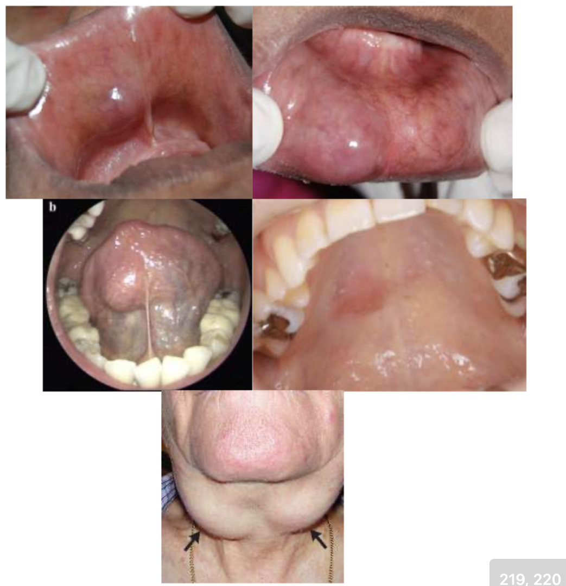
Five-panel oral montage (Burket's pp 219–220) illustrating oral manifestations in Sjögren's patients at high risk for non-Hodgkin MALT lymphoma. Bilateral or symmetric gland involvement is expected in Sjögren's; persistent unilateral enlargement is the key red flag for lymphomatous transformation. Sjögren's carries the highest lymphoma risk of all autoimmune diseases — 5–10% lifetime, 7–19× the general population.
🩺 Notecard #2: "Sjögren MALT: 5-10% lifetime, 7-19×, highest all AI diseases. Red flags: unilateral gland, lymphadenopathy, purpura, constitutional sx → urgent rheum/heme"
3. Hyposalivation vs. Xerostomia Distinction 🔥 "EASY EXAM QUESTIONS"
Prof said: "Xerostomia does not cause this. Hyposalivation causes this. You know what these are? Easy exam questions. Everybody's gonna memorize forever the difference between xerostomia and hyposalivation."
Slide 12 banner (full-width dark teal): "Critical concept: Only hyposalivation increases dental and medical risk."
Slide 20 callout: "Xerostomia alone does not cause these — hyposalivation does."
Prof-emphasized slide showing PreviDent and GelKam fluoride products alongside the characteristic radiation-induced caries pattern: cervical, facial-to-circumferential distribution on the mandibular anterior smooth surfaces and maxillary molars (where parotid saliva normally washes). Parotid gland sustains irreversible damage above 25 Gy; submandibular above 39 Gy — standard tumor doses of 65–70 Gy always exceed both thresholds, making radiation caries an expected sequela.
🩺 Notecard #4: "Radiation caries: ipsilateral, cervical (facial→circumferential), mandib ant smooth surfaces, max molars. Parotid >25Gy, submandib >39Gy, tumor 65–70Gy."
5. M3 Muscarinic Receptor + Pilocarpine 🔥 "EXAMS LOVE ASKING ABOUT MUSCARINIC RECEPTORS"
Prof said: "I want you to know about M3 receptors. M3 receptors, those are the most important ones. Again, on the exams they love asking about nicotinic receptors and muscarinic receptors, all of that."
M3 receptor effects:
M3 Effect
Visual Emphasis
Clinical Importance
↑ Exocrine secretions (saliva, tears, sweat)
YELLOW HIGHLIGHT
Target effect for sialagogues
↑ GI motility
YELLOW HIGHLIGHT
Side effect (GI upset)
Bladder contraction
YELLOW HIGHLIGHT
Side effect (urinary frequency)
Bronchoconstriction
NOT highlighted but verbally emphasized
Contraindication basis: pilocarpine in asthma
Endothelial NO release (vasodilation)
NOT highlighted
Side effect
QA note: Bronchoconstriction is not yellow-highlighted on slide, but professor explicitly called out: "bronchoconstriction that can be very important for people who have asthma, right? That's why it's a contraindication." Include as clinically critical.
Pilocarpine key facts:
First-line gold standard sialagogue
Non-selective muscarinic agonist — but highest affinity for M3 (trick question — she asked the class, correct answer: non-selective)
Topical recipe: "2 drops of pilocarpine 4% ophthalmic solution in 1 tsp of water, hold for 5 minutes, spit out" (given "for the exam")
❓ Prof asked class: Is pilocarpine selective or non-selective? Answer: Non-selective (has highest affinity for M3 but binds all muscarinic receptors). This is the trick.
The 10 functions of saliva as presented in the prof's hub-and-spoke infographic. Central hub: "SALIVA" (dark teal, bold white). Memorize all 10 by first word — Lubrication / Dental / Digestion / Antimicrobial / Cleansing / Sensory / Communication / Wound / Hormone / Diagnostic. Prof called this a "favorite board question."
Prof said: "There's a very high risk of medication-induced hyposalivation with urological anticholinergic drugs... If you use more than 3 medications per day, you have an increased odds risk of having a dry mouth 2.9."
Submandibular gland most common (80–90%) — verbally emphasized
Unilateral presentation
Why submandibular? (3-mechanism explanation):
Longer, more tortuous duct
Saliva flows against gravity
More mucous, calcium-rich saliva (thicker, harder to move)
Board Pearl (large font callout): "Board pearl: Not all stones are radiopaque — ultrasound or CT may be needed."
"Not all stones are radio opaque. They start as these little sludge pellets, these little mucin plugs, and they slowly aggregate their minerals." — Prof
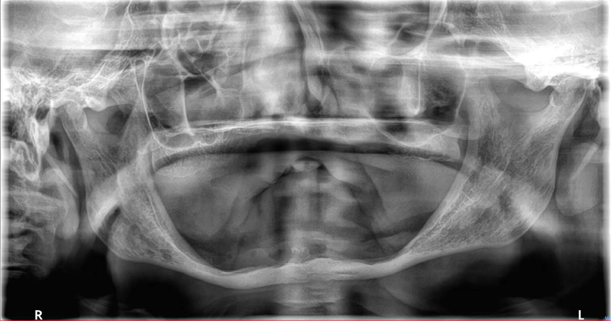
Panoramic radiograph showing a calcified radio-opacity at the floor of the right submandibular gland fossa, characteristic of a Wharton-duct sialolith. Submandibular sialoliths predominate (~80–90% of all salivary stones) due to alkaline, calcium-rich, viscous secretion combined with the duct's tortuous, upward-traveling anatomy. Note: not all stones are radiopaque — early stones are mucin plugs not yet mineralized; ultrasound or CT may be required for diagnosis.
🩺 Notecard #8: "Sialoliths: submandib 80–90% (tortuous duct, gravity, Ca-rich saliva). Meal-time pain+swelling=pathognomonic. Not all radiopaque→US/CT."
9. Clotrimazole + Diabetes Contraindication 🔥 "IT'S GONNA SHOW UP AGAIN"
Prof said: "Clotrimazole Mycelex troches... that's sugar in it... it's gonna spike the blood sugar. Everybody understand that? Everybody knows that that's gonna show up again?"
Clotrimazole (Mycelex) is a troche that contains sugar
Contraindicated in diabetic patients (especially uncontrolled diabetes)
Prof said: "Xerostomia does not cause this. Hyposalivation causes this. You know what these are? Easy exam questions."
Clinical sequelae (slide 20 list):
Root/cervical caries (characteristic pattern)
Recurrent decay
Candidiasis (especially erythematous) — NOT pseudomembranous
Dysphagia
Mucosal trauma
Difficulty wearing dentures
Professor also verbally mentioned "failing restorations" — not a slide bullet but verbally added.
🩺 High-yield DDx: Erythematous candidiasis (red, flat) is the type associated with dry mouth — NOT pseudomembranous (white patches). Prof: "Don't miss that in your patients. If they have a dry mouth, you need to be looking for the red flat kind."
12. Seronegative Sjögren's — Can Diagnosis Still Be Made? 🔥 KNOWLEDGE CHECK
❓ Prof Knowledge Check (3-slide MCQ sequence): "A 52-year-old woman with objectively dry mouth and dry eyes has negative anti-SSA and anti-SSB. Can she have Sjögren syndrome?"
Answer (slide 27):YES — up to 30% with positive biopsy/Schirmer test may be seronegative for antibodies.
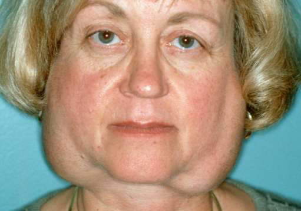
52-year-old female presenting with dry mouth and dry eyes, negative anti-SSA/SSB — can she still have Sjögren's? Yes — up to 30% of Sjögren's patients are seronegative. Biopsy can be patchy; scores from biopsy (3 pts) + Schirmer test (1 pt) alone can reach the ≥4 ACR-EULAR threshold without positive serology.
Management (slide 28):
Increase recall frequency
Start high potency fluoride therapy
Counsel on caries risk, OHI
Refer to Oral Medicine and Rheumatology → Finish workup
Minor salivary gland biopsy
Ocular staining or Schirmer Test
Sialagogue therapy
OTC saliva products
Hydration
🩺 Dentist's role: Negative serology ≠ rules out Sjögren's. Biopsy can be patchy; scores from biopsy + Schirmer can still reach ≥4 ACR-EULAR points without positive serology.
TIER 2 — LIKELY-WORTHY
High-Yield Supporting Content
Notecard-eligible if space permits. Know these for case MCQs.
Hyposalivation: Submandibular and sublingual glands are usually affected first. Water loss >> mucin loss → concentration → sticky/ropy/foamy saliva.
Key clinical signs of hyposalivation: sticky, ropy, foamy saliva; floor-of-mouth glands go first.
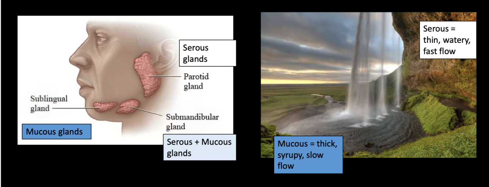
Parotid (serous/thin/fast) → Submandibular (mixed) → Sublingual (mucous/thick/slow) — the waterfall mnemonic. Parotid provides 25% of stimulated flow; submandibular provides ~60% of unstimulated flow; sublingual ~5%. In hyposalivation, the mucous-dominant submandibular and sublingual glands are affected first, as water loss concentrates the remaining mucins.
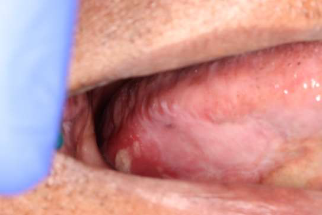
Floor-of-mouth anatomy showing sublingual caruncles and Wharton duct openings (bilateral), where submandibular gland saliva empties. These are the first glands to show impaired function in hyposalivation — clinically detectable by reduced or absent pooling in the floor of the mouth on examination.
T2-4. Cevimeline and Bethanechol
Cevimeline (Evoxac):
Selective for M1 and M3 (fewer systemic side effects than pilocarpine)
Dose: 30 mg TID
Mnemonic: "E-I-E-I" (Old MacDonald) — "You'll never forget it now"
Glassy appearance of oral mucosa, especially palate
Tongue lobulated/fissured
Cervical caries (>2 teeth)
Debris on palate or sticking to teeth
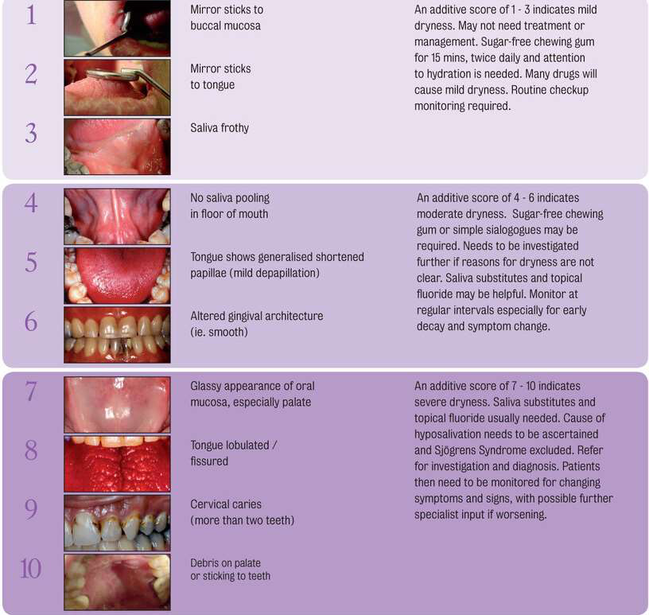
The Challacombe Scale: 10-point chairside assessment tool for grading salivary hypofunction severity. Mild (1–3): mirror adhesion, frothy saliva. Moderate (4–6): papillae loss, altered gingival architecture, glassy palate. Severe (7–10): fissured/lobulated tongue, cervical caries (>2 teeth), debris on palate. The visual 1–10 progression IS the teaching point — the scale maps directly to when to escalate from OTC management to sialagogue therapy to formal flow rate testing.
❓ Knowledge Check answer (slide 16): "Measure salivary flow to distinguish xerostomia from hyposalivation"
65-year-old with dry mouth complaint but normal salivary pooling on exam → normal pooling + subjective dryness = likely xerostomia (nerve problem) → confirm with flow rate.
T2-7. Acute Bacterial Sialadenitis
Clinical signs:
Painful swollen gland (unilateral)
Fever
Purulence at duct orifice
Erythema
Firm, tender gland
Common organisms:
Staphylococcus aureus (most common)
Streptococcus species
Anaerobes
Management:
First-line antibiotics: Amoxicillin-clavulanate or clindamycin ("Cover Staph aureus")
Aggressive hydration
Culture if purulent discharge present
Imaging for obstruction (stone? mass?)
Urgent referral (ED/ENT/OMFS) if:
Systemic spread/sepsis
Immunocompromised patient
Trismus/severe swelling
Airway compromise concern
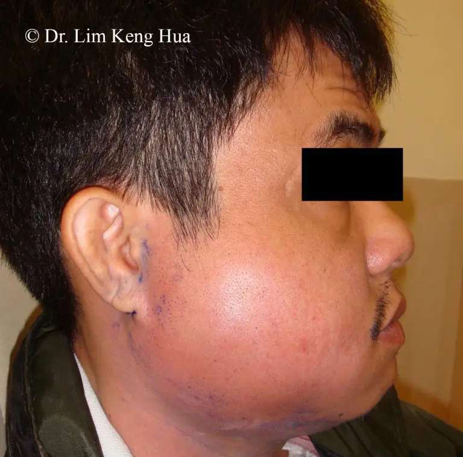
Acute bacterial sialadenitis: unilateral parotid gland swelling with suppurative (purulent) discharge expressible from Stensen duct on gland milking. Staphylococcus aureus is the most common causative organism. Treat with hydration, sialagogues, warm compresses, and antibiotics (amoxicillin-clavulanate or clindamycin). Urgent referral to ED/ENT/OMFS if signs of sepsis, trismus, or airway compromise.
Bluish color (Tyndall effect — light scattering through thin mucosa into mucin pool)
History of trauma (lip biting), sharp canines
Painless
Pathophysiology: Trauma to minor salivary gland duct → mucin spillage into connective tissue → extravasation phenomenon
Extravasation type = mucin OUTSIDE duct (trauma/spillage)
Retention type = mucin INSIDE duct (obstruction) — can coexist with sialolith
Treatment is basically the same: excision
🩺 Prof pearl: Her own mucoceles from sharp canines → mother's dentist ground down canines + placed veneers → resolution.
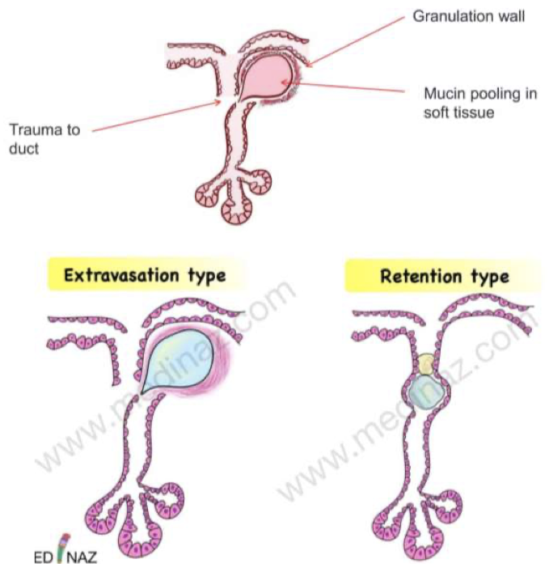
Left: Superficial extravasation mucocele on the lower lip — small, fluctuant, bluish vesicle from minor salivary gland duct rupture (Tyndall effect gives the characteristic blue color). Right: Ranula — a large mucous retention/extravasation lesion on the floor of the mouth, blue translucent dome, often arising from the sublingual or submandibular gland. Both types are yellow-highlighted on the slide as equally testable; treatment for both is surgical excision plus removal of the feeding minor salivary gland to prevent recurrence.
T2-9. Sialolithiasis Management
Conservative first-line:
Hydration (2L/day)
Gland massage
Warm/moist heat compresses
OTC saliva products
NSAIDs or acetaminophen for pain
Muscarinic receptor agonist therapy (pilocarpine)
When to refer for sialoendoscopy:
Stone >2 mm in proximal duct
Failed conservative management after 1–2 weeks
Recurrent symptoms
Success rate: 85–92% gland preservation
Large/recurrent stones: Refer for sialoendoscopy → surgical removal if needed
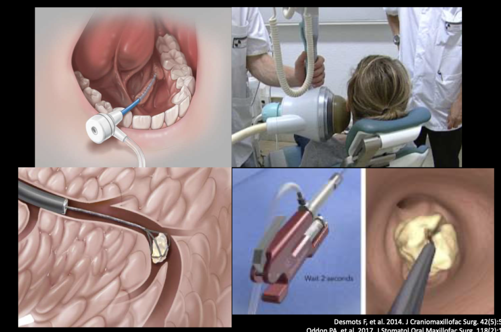
Sialendoscopy: gland-sparing, minimally invasive removal of salivary duct stones via a small endoscope inserted through the duct orifice. Preferred over gland excision when feasible — 85–92% gland preservation rate. Indicated when stone >2 mm in proximal duct, failed conservative management after 1–2 weeks, or recurrent symptoms. Prof's emphasis: sialendoscopy is the modern standard; gland excision is last resort.
T2-10. Tubarial Salivary Glands — "New Glands!"
Large font slide title: "New Glands!" (exclamation mark, visual emphasis)
Discovered 2021 in Netherlands: Valstar MH, et al. 2021. Radiother Oncol. 154:292–298.
Article: "The tubarial salivary glands: A potential new organ at risk for radiotherapy"
Location: nasopharynx / nasal turbinate area (torus tubarius region)
Function: contribute to posterior oral saliva flow
Clinical implication (testable): Spare tubarial glands during radiation planning to preserve salivary function
The tubarial salivary glands (blue arrow) — newly identified at the torus tubarius in the nasopharynx, discovered in 2021 via PSMA PET/CT scans in prostate cancer patients. These glands contribute to posterior oral cavity saliva flow. The key testable point: spare tubarial glands during head-and-neck radiation planning to help preserve salivary function — an overlooked organ-at-risk.
Slide header (large font, white-on-black): "Hyposalivation: submandibular and sublingual glands are usually affected first"
Mechanism:
"Water loss >> mucin loss" (>> confirmed in text dump)
Remaining mucins become concentrated in a smaller volume of fluid
Mucins become altered → saliva less lubricating, more stringy, more sticky
Result: sticky, ropy, foamy saliva = clinical hallmark of hyposalivation
TIER 3 — BACKGROUND CONTEXT
Supporting Context
Don't notecard. Collapsed by default. Open if you want the "why" behind tier-1 facts.
T3-1. Why Dentists Should Care About Saliva
Section divider. Clinical context: dentists are primary detectors of dry mouth because patients rarely spontaneously report it. When saliva production drops, all 10 functions break down simultaneously — dental protection, antimicrobial defense, digestion, wound healing, and more. This is why "dry mouth" is clinically dangerous, not just uncomfortable.
T3-2. Practice Case — 77-year-old with Floor-of-Mouth Cancer
Patient: 77 y.o. male with DM type 2 (metformin, no insulin), CIDP, OSA, CAD, CVA, psoriatic arthritis, gout, BPH, anemia, glaucoma. CC: Tongue pain.
Prior histopathology: "Squamous mucosa with ulceration and granulation tissue. Negative for dysplasia." — From non-OMAX pathologist; language doesn't say "reactive" = red flag.
Case teaching (case MCQ fodder):
"Negative for dysplasia" from non-specialist pathologist ≠ reassuring
Steroids reduced pain → still red/white → second injection, no improvement
Then: bleeding → spontaneous hemorrhage = new vessel formation = cancer until proven otherwise
Re-biopsy by oral surgery → cancer confirmed (floor of mouth + alveolar ridge)
Rule: Failed steroids ×2 OR spontaneous bleeding → cancer until proven otherwise → re-biopsy + urgent referral.
T3-3. Sialagogue Pharmacology — Full Muscarinic Receptor Table
Slide 2 (Housekeeping): "Ramadan Mubarak! Sundown is 5:23 PM — let's get you home on time! As doctors we need to understand Ramadan and know when it is to schedule medication adjustments (QD or BID preferred over TID or QID)."
Cultural competency pearl: Fasting patients won't adhere to TID/QID regimens. Adjust to suhoor/iftar timing.
T3-6. Sialolithiasis Imaging Modalities
Occlusal radiograph: first-line for submandibular stones
Panoramic radiograph: standard
Ultrasound (via referral): excellent for non-radiopaque stones (early stones = mucin plugs, not yet mineralized)
CT: if needed for surgical planning
⚡ Parotid-specific flow testing (suction cup cannulation of Stensen's duct) — demoted. Prof: "Some nerds like to do these little suction cups on the parotid gland... It's really hard and I don't do that, but you know you can send them to the nerds at Tufts if you want to."
T3-7. Mucocele Surgical Technique (verbal)
Prof described own technique: "like a C-section" — cut over swelling, blunt dissect, deliver intact.
Mucocele excision technique: incision directly over the dome → blunt dissection to deliver the mucus-filled sac intact → identification and excision of the feeding minor salivary gland (critical to prevent recurrence) → layered closure. Structures at risk: labial artery (hemorrhage), labial nerve (numbness), labial vein. Prof: technique is "like a C-section — you cut, blunt dissect, and deliver it."
Clotrimazole + Diabetes + Azoles "Clotrimazole(Mycelex)=sugar → CI in DM. Azoles→CYP450 interactions."
Slide 3 — Prof: "It's gonna show up again." Explicit retest signal.
Vaseline vs. Lanolin HPA "Avoid: Vaseline/Aquaphor (occlusive, worsens candidiasis, flammable). Use: Lanolin HPA (Lansinoh)"
Slide 21 — Prof: "This is the hill I will die on."
Primary lecture: Salivary Gland Disorders — Risk, Recognition & Management. Oral Medicine Midterm, BU GSDM. Dr. E. Stoopler (attending). 39 slides + audio transcript. 02/20/2026.
ACR-EULAR criteria: Shiboski SC, et al. 2016 ACR-EULAR Classification Criteria for Primary Sjögren's Syndrome. Ann Rheum Dis. 2017;76(1):9–16.
Challacombe Scale: Challacombe SJ. Difficulties in assessing the dry mouth. Gerodontology. 1997.
Tubarial glands: Valstar MH, et al. The tubarial salivary glands: A potential new organ at risk for radiotherapy. Radiother Oncol. 2021;154:292–298.
Lymphoma images: Burket's Oral Medicine, pp. 219–220.
Radiation caries: Palmier NR et al. 2020.
Compiled by: 8-agent team (5 scouts + synthesizer + QA + compiler). QA verdict: PASS WITH CORRECTIONS (applied). 2026-05-02.
Part 5 of 5
Exam Notecard v2 — 4-Lecture Midterm
Same format as the final-exam notecard. Study the card as one unit — then fold it in your mind by lecture color.
Side A
SIDE A — L1 INFECTIOUS (red) + L2 ALLERGIES & IMMUNOLOGIC (blue) | clinical anchors
L1 · INFECTIOUS DISEASES
Impetigo: honey crusts over lip/perioral skin
Impetigo
Most common bacterial skin infxn 2–5 yr olds. Cause: Staph aureus / β-hemolytic strep. Honey-colored crusts ("cornflakes glued on"). Topical: mupirocin 2% TID ×5d. Systemic: Augmentin — dose by WEIGHT not age (<40 kg = 25 mg/kg/d BID; ≥40 kg = 500 mg).
Syphilis — 3 Stages
Cause: T. pallidum "cursed corkscrews". 1°: chancre 3–90 d; painless + indurated + clean base + LAD; 85% genital/10% anal/4% oral; serology NEG first 6 wk; IHC 64–94% vs silver stain 0–41%. Tx: Benzathine Pen G 2.4 MU IM ×1; DPH reportable. 2°: 4–10 wk later; split papules + mucous patches + condyloma lata; HIGHLY infectious. 3°: gumma (palate/tongue), interstitial glossitis, tabes dorsalis; 1–30 yr latency; 30% untreated → 3°.
Tuberculosis (TB)
Tongue = #1 oral site. NEVER biopsy first — isolate + NAAT (Xpert MTB/RIF). Tx: PIRE ×8 wk → IR ×16 wk DOT. DPH reportable.
Candida 6 subtypes — key clinical images
Candida — 6 Subtypes
Pseudomembranous (wipes off → white cottage-cheese plaques). Erythematous (hyposalivation unique cause). Median rhomboid (kissing lesion on palate). Angular cheilitis (VD loss unique). Denture stomatitis (probably NOT true infection). Hyperplastic CANNOT wipe off → biopsy.
Drugs: clotrimazole 10 mg 5×/d ×10d (HIGH SUGAR — avoid diabetics, LFTs↑15%); nystatin 5 mL QID; miconazole 2% gel; Mycolog II BID (angular); fluconazole 100–200 mg QD ×7–14d. All -azoles → check LFTs.
Measles: Koplik spots — 70% of pts, bluish-white buccal, appear 1–2d BEFORE rash. 3C's (cough+coryza+conjunctivitis). Contagious 4d before–4d after rash. PEP: MMR ≤72 h OR Ig ≤6 d. Vit A 200,000 IU ≥12 mo. Encephalitis 1/1,000. N-95 + negative pressure room. DPH reportable.
Mumps: 10–30% NO parotid swelling; serious complications WITHOUT parotitis; CNS ~50%; RT-PCR gold std; contagious 1–2d before sx to 14d after; orchitis 3–10%; subfertility 13%; 3rd MMR 61–88% additional protection.
EBV-MCU: EBER ISH required; 45% spontaneous regression; 91% immunosuppressed; MTX/AZA/cyclosporine triggers; distinguish from lymphoma: normal LDH + IL-2R + EBV DNA <1,000 copies/mL.
Syphilis chancre vs condyloma lata vs gumma
L2 · ALLERGIES & IMMUNOLOGIC
Hypersensitivity Types
I = IgE / mast cell / minutes–hours (latex, penicillin, chlorhexidine). II = cytotoxic IgG/IgM (PV-desmoglein, MMP-BMZ). III = immune complex. IV = T-cell / 24–72 h (metals, acrylates, amalgam, flavorings). Pseudoallergic = bisulfite preservatives / no sensitization. LA allergy <1% truly allergic; most vasovagal or pseudoallergic (bisulfite).
Recurrent Aphthous Stomatitis (RAS)
3 types: Minor 80% (3–10 mm, 7–14 d, no scar); Major 10–15% (1–3 cm, 2–6 wk, may scar); Herpetiform 5–10% (up to 100 ulcers, NOT HSV). Nonkeratinized mucosa only. New onset >40 = systemic workup. Complex aphthosis ≥3 ulcers = 60% have underlying disease. Ladder: triamcinolone 0.1% paste QID → fluocinonide 0.05% → clobetasol 0.05%. DO NOT use silver nitrate cautery (necrosis + argyria).
OLP / Geographic Tongue / TLP
OLP: 0.1–2.2%, F:M 3:2, middle-aged. Wickham striae bilateral posterior buccal. Purple polygonal pruritic papules on wrists (skin LP). Reticular = asymptomatic; erosive = painful desquamative gingivitis. Unilateral / high-risk site → biopsy to exclude dysplasia. Monitor for iatrogenic candidiasis with topical steroids.
Geographic tongue: 3 D's: Depapillated, Demarcated, Dynamic (migratory); up to 3% prevalence; psoriasis/fissured tongue assoc.
TLP: fungiform papillae, tongue tip, self-limited 2–15 d; reassurance.
Drug Gingival Hyperplasia
Phenytoin ~50%, cyclosporine 25–70%, nifedipine/amlodipine 6–25%. Onset 1–3 mo. Meticulous plaque control = MOST important. Cyclosporine + nifedipine = synergistic. Surgical recurrence 35% in 18 mo. Males 3× more likely.
MMP linear BMZ vs PV chicken-wire DIF pattern
MMP vs PV — Head-to-Head
Nikolsky sign: MMP = NEGATIVE (subepithelial, tense), PV = POSITIVE (intraepithelial, flaccid). Mnemonic: "PemphigoiD lives DEEP" — D = deep = subepithelial = Nikolsky NEG.
MMP: IgG anti-BMZ (BP180, BP230, laminin 332, type VII collagen). DIF = linear IgG/IgA/C3 at BMZ. Hallmark = desquamative gingivitis. Ocular 61–70% → symblepharon → blindness. Refer ALL MMP to ophtho even if asymptomatic. Anti-laminin 332 = 25% → adenocarcinoma. Tx: topical steroids + dapsone 50–100 mg/d; ocular = prednisone + mycophenolate.
PV: IgG anti-DSG3 (±DSG1). DIF = "chicken-wire" intercellular IgG. Oral first >50%. All oral surfaces. PDAI: <15 = topicals; 15–45 = rituximab + pred 0.5 mg/kg; >45 = MEDICAL EMERGENCY → ED. Biopsy = perilesional + Michel solution.
PAMS — Board Favorite
Always malignancy: NHL ~40%, CLL ~20%, Castleman ~18%. Oral first in ~45%. Mortality 60–90%. Bronchiolitis obliterans = #1 cause of death. Rituximab less effective than PV. Anti-plakin antibodies. 5 polymorphous phenotypes. Castleman resection → remission possible.
36,600 new / 12,230 deaths/yr (US 2024). >50% present with mets at diagnosis. Oral tongue = 41.7% #1 site; rising 1.8%/yr. 5-yr OS: localized 85% → regional 70% → distant 40%. Tobacco + alcohol = ~30× (multiplicative, NOT additive). Fanconi anemia OR ~40.6 — highest per-patient risk. UV = lip vermilion ONLY, NOT intraoral SCC.
Leukoplakia vs erythroplakia vs speckled lesion
Leukoplakia — Definition & MT Rates
WHO: "white plaque of questionable risk, diagnosis of exclusion." Clinical sensitivity 60%, specificity 62% → always biopsy. 5-yr MT by dysplasia: no dysplasia 2.2% → mild 2.6–11.9% → moderate 4.1–8.7% → severe 29.2–32.2%. Overall: 6.6–8.4%, ~2%/yr. 39.6% of progressors had NO dysplasia on first biopsy → never "done" after one benign read. Annual re-biopsy if change. Size >200 mm² = 2–4× higher risk. High-risk sites: lateral/ventral tongue, FOM. Female paradox: higher MT despite lower incidence.
Erythroplakia
~75–90% already severe dysplasia/CIS/SCC at first biopsy. MT rate ~50%. Median time to cancer: 3.7 months (vs leukoplakia 25 mo). Biopsy the RED component in mixed lesions. Speckled/non-homogeneous = same risk as erythroplakia.
PVL — Worst OPMD
PVL MT 48–50%, some up to 100% over lifetime; 8× higher than conventional; annual rate 9.3%. F:M 2:1; non-smokers; gingiva most common "ring around the collar"; multifocal, recurs after excision. Major criteria: ≥2 oral sites / new lesions during follow-up / recurrence after treatment.
SCC — indurated ulcer vs exophytic mass lateral tongue
Biopsy Site Selection Rules
"Red over white, edge over center, deep for verrucous, multiple for big". Avoid necrotic ulcer center. Tumor seeding = myth (FNA ~0.00012%, core ~0.0011%). Verrucous: must biopsy to deep submucosa to see pushing border.
Dysplasia Management
Scalpel gold std; positive margins OR 3.6 for recurrence; aim 5 mm peripheral. CO₂ laser HR 0.14 for MT vs observation; 52.6% recurrence. ALA-PDT: 66–100% CR, 8.3% MT at 3 yr; best for multifocal/large field. Imiquimod = TLR-7 agonist. Severe dysplasia: excise with clear margins + Q3-mo surveillance lifelong.
SCC + AJCC 8th Ed Staging
SCC >90% all oral malignancies; median age ~66; M:F 2–4:1. Lateral/ventral tongue 42% #1 site. Warning: non-healing ulcer >2–3 wk, induration (most reliable), rolled borders, fixed nodes. ~50% non-ulcerated at diagnosis. AJCC 8th: added DOI to T-stage (T1 ≤5 mm; T2 ≤10 mm; T3 >10 mm) + ENE to N-stage (N3b = ENE+ = worst; adjuvant CRT).
HPV Benign + OPSCC
Squamous papilloma: HPV 6/11, solitary 98%, vaccine-covered. Condyloma: HPV 6/11, multiple sessile, STI. Verruca: HPV 2/4, auto-inoculation, NOT vaccine-covered. Heck disease: HPV 13/32, NOT covered by Gardasil 9. HPV+ OPSCC (tonsil/BOT): 5-yr OS ~80–85% vs HPV− ~40%. p16 IHC = reliable surrogate in OROPHARYNX only; not oral cavity. E6 → degrades p53; E7 → inactivates Rb.
M3 = secretion + smooth muscle = target of sialagogues. Contraindications: asthma (M3 → bronchoconstriction), narrow-angle glaucoma, cardiac disease (M2). Drugs: pilocarpine 5 mg TID (non-selective, highest M3 affinity); cevimeline 30 mg TID (selective M1+M3, fewer side effects); bethanechol 25 mg TID (M2+M3). Avoid: caffeine, alcohol mouthwash, Vaseline/Aquaphor (seal moisture OUT → use lanolin).
Sjögren Syndrome
Middle-aged female, 9:1 F:M; 0.5–1% prevalence. Primary = alone; Secondary = + another AI disease (RA, SLE). 2016 ACR-EULAR: ≥4 points: biopsy (focal lymphocytic sialadenitis) = 3 pts; anti-SSA(Ro) = 3 pts; Schirmer/ocular = 1; flow ≤0.1 = 1; anti-SSB(La) = 1. Seronegative Sjögren: up to 30% — negative Ab ≠ ruled out. Exclude: HCV, radiation, sarcoidosis, IgG4-related disease. Order: anti-SSA + anti-SSB + ANA + RF → refer for labial minor gland biopsy. Lymphoma risk: 5–10% lifetime NHL (MALT), 7–19× general population. Red flags: unilateral persistent enlargement (bilateral = typical), purpura, LAD, B symptoms.
Sialolith in Wharton duct + mucocele lower lip
Sialolithiasis
Submandibular 80–90%; why: longer tortuous Wharton duct, saliva flows against gravity, Ca-rich mucous secretion. Pathognomonic: meal-time pain + swelling; resolves between meals. Imaging: occlusal XR first; not all stones radiopaque → ultrasound for negatives. Tx: conservative (hydration 2L/d, massage, heat, sialagogues) → sialendoscopy if >2 mm or recurrent (85–92% gland preservation).
Acute Bacterial Sialadenitis
S. aureus #1. Purulence at duct orifice = diagnostic. Tx: Augmentin or clindamycin + aggressive hydration + culture if purulent. Refer ED/ENT if airway/sepsis/immunocompromised.
Mucocele / Ranula
Lower lip 60–70%; bluish, fluctuant, painless. Cause: trauma severs minor gland duct. Extravasation type: no epithelial lining = NOT a true cyst (granulation wall). Retention type: has lining = true cyst. Tx: excise with feeding gland (not just drain → refills). Ranula = floor of mouth mucocele → may need sublingual gland removal.
Master Strip
MASTER STRIP — Pathognomonic Anchors · Oral = First Sign · Avoid Rules · Drug Cross-Reference
PATHOGNOMONIC MASTER
T. pallidum "cursed corkscrews" → syphilis Honey-colored crusts "cornflakes" → impetigo Koplik spots (bluish-white buccal, 1–2 d BEFORE rash) → measles Owl-eye nucleus → CMV Hutchinson sign (nasal tip VZV) → HZO → blindness PrHGS only on KERATINIZED tissue → primary herpetic stomatitis "Chicken-wire" intercellular IgG → Pemphigus Vulgaris DIF Linear IgG/IgA/C3 at BMZ → MMP DIF "PemphigoiD lives DEEP" (D = subepithelial = Nikolsky NEG) Raised 3-ring target lesions (acral) → EM (HSV-triggered) Red over white, edge over center, deep for verrucous → biopsy rule 39.6% of progressors had NO dysplasia on first biopsy → never dismiss Gingiva "ring around the collar" → PVL Meal-time pain + swelling (submandibular) → sialolithiasis Bluish fluctuant dome lower lip → mucocele (extravasation type)
ORAL = FIRST SIGN
PV >50% — oral erosions precede skin by months–>1 yr; dentist diagnoses first MMP 85% — desquamative gingivitis; misdiagnosed as "bad hygiene" PAMS ~45% — intractable stomatitis; oral before cancer diagnosis Syphilis 4% — oral chancre at commissure/gingiva; painless, indurated Measles: Koplik spots 1–2 d before rash — dentist may see first Sjögren: hyposalivation — dentist recognizes dry-mouth pattern → workup Leukoplakia → 39.6% of SCC had benign biopsy first — never discharge EBV-MCU: oropharynx 62% — EBER ISH required; distinct from lymphoma EM Major: hemorrhagic lip crusting — recognizable in dental chair before full work-up SCC: lateral/ventral tongue 42% — annual oral cancer screen catches T1 (85% 5-yr OS)
AVOID RULES (exam traps)
NEVER biopsy TB first — isolate, NAAT (Xpert MTB/RIF) first NEVER topical lidocaine in pediatrics — seizure risk NEVER topical benzocaine in pediatrics — methemoglobinemia NEVER silver nitrate cautery for RAS — necrosis + argyria NEVER patch test for Type I allergy — use skin prick or RAST NEVER reassure MMP without ophtho referral — 61–70% ocular involvement, silent NEVER "watch and wait" erythroplakia >2 wk — median time to cancer 3.7 mo NEVER dismiss "benign" leukoplakia biopsy — re-biopsy on ANY change AVOID sialagogues in asthma, narrow-angle glaucoma, cardiac disease AVOID clotrimazole (Mycelex) in diabetics — high sugar content AVOID Vaseline/Aquaphor for dry mouth — petroleum seals moisture OUT AVOID alcohol mouthwash in dry mouth — drying effect AVOID polypharmacy assumption — >3 meds → OR 2.9 for dry mouth regardless of specific drug SJS: Stop ALL suspected drugs immediately — every hour matters
DRUG CROSS-REFERENCE
Infectious:
Syphilis: Benzathine Pen G 2.4 MU IM ×1
Impetigo: mupirocin 2% TID ×5d (topical); Augmentin by WEIGHT
Candida (oral): clotrimazole 10 mg 5×/d; nystatin 5 mL QID; fluconazole 100–200 mg QD ×7–14d. All -azoles → LFTs
HSV: acyclovir 400 mg 5×/d ×5d (start ≤5d); valacyclovir 1g BID ×5d (HSV) / TID ×7d (HZO)
CMV: valganciclovir 900 mg PO BID (acyclovir FAILS)
EM prophylaxis: valacyclovir 500 mg BID ≥6 mo then taper
TB: PIRE ×8 wk → IR ×16 wk DOT Immunologic:
RAS: triamcinolone 0.1% → fluocinonide 0.05% → clobetasol 0.05%
OLP: dexamethasone elixir swish & spit BID; clobetasol gel
MMP low-risk: topicals + dapsone 50–100 mg/d; ocular: prednisone + azathioprine/mycophenolate
PV mod: rituximab + prednisone 0.5 mg/kg; severe: rituximab + prednisone 1.0–1.5 mg/kg
SJS/TEN oral care: magic mouthwash; CHX 0.12%; petroleum jelly lips; no aggressive debridement
Drug gingival hyperplasia: phenytoin ~50%, cyclosporine 25–70%, nifedipine 6–25% Salivary:
Sialagogues: pilocarpine 5 mg TID (CI: asthma/glaucoma/cardiac); cevimeline 30 mg TID (M1+M3, fewer SE)
Radiation caries: PreviDent 5000 (1.1% NaF) daily; fluoride varnish 3×/yr
Sialadenitis: Augmentin or clindamycin Epithelial:
Dysplasia: ALA-PDT (66–100% CR, tissue-preserving); imiquimod 5% (TLR-7 agonist, TLR/USC trial)
CAUTION: beta-carotene may ↑ risk in smokers (CARET trial)